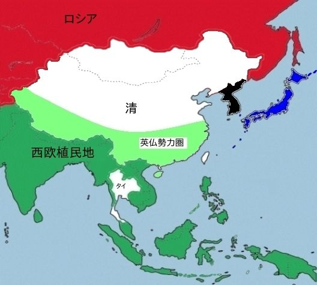
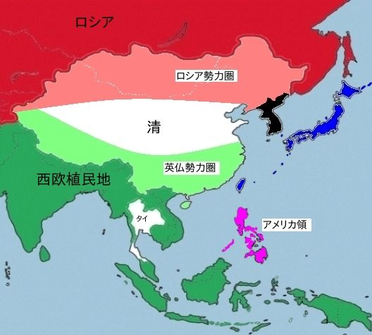
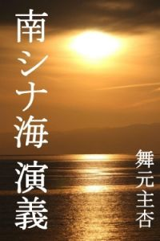

| 世界史から見る大日本帝国: 中国人・韓国人と歴史を論争しても勝てる本 | |
| 舞元主杏 | |
| (2015) | |
世界史から見る
大日本帝国
中国人・韓国人と歴史を論争しても勝てる本
舞元主杏
目次
第１章 近世のヨーロッパ（15世紀～19世紀前半）
１－１ 宗教戦争（宗教改革）
１－２ 市民革命
１－３ イギリス革命
１－４ アメリカ独立革命
１－５ フランス革命
１－６ 産業革命
１－７ ユダヤ問題
１－８ ユダヤ人の解放
１－９ ユダヤ人の能力
１－１０ 宮廷ユダヤ人とロスチャイルド家
１－１１ 第１章のまとめ
第２章 列強（帝国主義諸国）のアジア侵略（植民地化）
２－１ イギリス帝国（キリスト教英国国教会）
２－２ フランス帝国（キリスト教カトリック）
２－３ ロシア帝国 （キリスト教東方正教会）
２－４ アメリカ帝国（キリスト教プロテスタント）
２－５ オランダ帝国（キリスト教プロテスタント）
２－６ ドイツ帝国 （キリスト教プロテスタント）
２－７ 第２章のまとめ
＊アジアにおける列強勢力図（明治維新の直前1865年頃）
＊アジアにおける列強勢力図（日露戦争の直前1904年頃）
第３章 近代国家を目指した明治維新と近代ヨーロッパの状況
３－１ 近代国家を目指した明治維新
３－１－１ 明治新政府の理念
３－１－２ 富国強兵と日本軍の発足
３－１－３ 清国との外交関係
３－１－４ 朝鮮との外交関係
３－１－５ ロシアとの外交関係
３－２ 近代ヨーロッパの状況
３－２－１ キリスト教の衰退
３－２－２ キリスト教の海外宣教
３－２－３ マルクス主義思想の発展
３－２－４ ロシアのユダヤ人問題
３－２－５ ロシアのポグロム
３－３ 第３章のまとめ
第４章 大日本帝国の光と影（19世紀末～20世紀初頭）
４－１ 日清戦争
４－２ 朝鮮半島をめぐる日露対立
４－３ ロシア帝国の極東進出
４－４ 義和団の乱（北清事変）
４－５ 日英同盟から日露戦争へ
４－６ 日露戦争
４－７ 日比谷焼討事件
４－８ ハリマン事件
４－９ 日露協約
４－１０ 韓国併合
４－１１ 辛亥革命
４－１２ 日露戦争の世界的インパクト
４－１３ アジア主義思想
４－１４ 大アジア主義（孫文の講演抜粋）
４－１５ アメリカの反日（日禍論と排日）
４－１６ アメリカのオレンジ計画
４－１７ 第４章のまとめ
第５章 ユダヤ人のロシア革命（ロシア革命～レーニン死去）
５－１ ユダヤ人によるロシア革命
５－２ ウラジミール・レーニン
５－３ 二月革命から十月革命へ
５－４ ブレスト・リトフスク条約
５－５ コミンテルンの創設
５－６ 朝鮮の三一運動
５－７ 中国の五四運動
５－８ 中国共産党結成
５－９ ヨシフ・スターリン
５－１０ 第５章のまとめ
第６章 大日本帝国その頂点へ（韓国併合～満洲国建国）
６－１ 第一次世界大戦
６－２ 対華21ヶ条要求
６－３ 中国の軍閥割拠の無法時代
６－４ 石井・ランシング協定
６－５ シベリア出兵とロシア内戦
６－６ パリ講和会議とヴェルサイユ条約
６－７ 人種差別撤廃の提案
６－８ ソ連コミンテルンと朝鮮・中国
６－９ 尼港事件
６－１０ ワシントン会議
６－１１ 四カ国条約と九カ国条約
６－１２ ワシントン会議の影響
６－１３ 第一次国共合作（コミンテルンの謀略テロ）
６－１３－１ 万県事件
６－１３－２ 南京事件
６－１３－３ 漢口事件
６－１３－４ 蒋介石の上海クーデターと山東第一次出兵
６－１３－５ 済南事件と山東第二次・第三次出兵
６－１３－６ 張作霖爆殺事件
６－１４ 大正デモクラシー
６－１５ 日本共産党の設立
６－１６ 関東大震災
６－１７ 世界恐慌
６－１８ 満洲事変
６－１９ 満洲国の建国
６－２０ 満洲国の建国は侵略か？
６－２１ 第６章のまとめ
第７章 大日本帝国の軍国主義化（満州事変～日独伊軍事同盟）
７－１ 満洲事変と満洲国
７－２ リットン調査団
７－３ 五・一五事件
７－４ 国際連盟脱退
７－５ 第7回コミンテルン世界大会
７－６ 二・二六事件
７－７ 日独防共協定
７－８ 盧溝橋事件
７－９ 通州事件
７－１０ 第二次上海事変
７－１１ 日中戦争（支那事変）
７－１２ 第二次国共合作（コミンテルンの日中戦争）
７－１３ 日独伊三国防共協定
７－１４ 南京大虐殺事件
７－１５ 重慶爆撃
７－１６ ノモンハン事件
７－１７ 独ソ不可侵条約
７－１８ 第二次世界大戦の勃発
７－１９ 北部仏印進駐
７－２０ 日独伊軍事同盟
７－２１ 昭和軍国主義体制の欠陥
７－２２ 第７章のまとめ
第８章 大日本帝国の終焉
８－１ 第二次世界大戦とソ連の動き
８－２ 北部仏印進駐と日独伊軍事同盟
８－３ アメリカの対日制裁とABCD包囲網
８－４ バトル・オブ・ブリテン
８－５ 日ソ中立（不可侵）条約
８－６ 独ソ戦の開始（バルバロッサ作戦）
８－７ 関東軍特殊演習（関特演）
８－８ 南部仏印進駐
８－９ コミンテルンによるゾルゲ事件
８－１０ ハル・ノート
８－１１ 真珠湾攻撃から太平洋戦争
８－１２ カイロ宣言
８－１３ ヤルタ会談
８－１４ ヤルタの密約
８－１５ ポツダム宣言
８－１６ 大日本帝国の敗戦
８－１７ 第８章のまとめ
第９章 大日本帝国の滅亡と平和国家日本の誕生
９－１ ポツダム宣言受諾とGHQ占領政策
９－２ 極東国際軍事裁判（東京裁判）
９－３ 日本国憲法
９－４ 国際連合
９－５ 東西冷戦
９－６ 北朝鮮と韓国
９－７ 李承晩の血塗られた反共政策
９－８ 朝鮮戦争
９－９ 李承晩と四月革命と朴正煕
９－１０ 中国の国共内戦
９－１１ 中華人民共和国と毛沢東主席
９－１２ レッド・パージ
９－１３ 日本と朝鮮戦争
９－１４ サンフランシスコ講和会議
９－１５ 第９章のまとめ
第１０章 中国における反日の歴史と現状
１０－１ 中国における反日の歴史
＊義和団の乱～辛亥革命
＊中国共産党結成～第一次・第二次国共合作
＊日中戦争～大東亜戦争～中華人民共和国
１０－１－１ 周恩来と日中国交回復
１０－１－２ 周恩来の死去
１０－１－３ 鄧小平と第二次天安門事件
１０－２ 中国における反日の現状
１０－２－１ 江沢民の反日
１０－２－２ 胡錦濤の親日と尖閣国有化
１０－２－３ 習近平の親米反日
１０－２－４ 中国の反日、今後の展望
第１１章 韓国における反日の歴史と現状
１１－１ 韓国における反日の歴史
＊李氏朝鮮時代
＊朝鮮総督府時代
１１－１－１ 反日大統領、李承晩（初代～第3代）
１１－１－２ 朴正煕大統領（第5代～第9代）
＊日韓基本条約
１１－１－３ 全斗煥大統領（第11代～第12代）
１１－１－４ 盧泰愚大統領（第13代）
１１－１－５ 金泳三大統領（第14代）
１１－１－６ 金大中大統領（第15代）
１１－２ 韓国における反日の現状
１１－２－１ 反日大統領、盧武鉉（第16代）
１１－２－２ 李明博大統領（第17代）
１１－２－３ 朴槿恵大統領（第18代）
１１－２－４ 韓国の反日、今後の展望
＊大アジア主義について
＊中国について
＊韓国について
＊歴史問題について（日中韓の若者へ）
歴史アクション小説「南シナ海演義」の紹介
「戦争は絶対に反対!!」と考えている読者の皆さん。筆者も戦争は絶対に反対です。
しかし、「もう戦争は絶対に起こさせない」と決意しているにしても、かって、大日本帝国が行った戦争の全てを「絶対悪」として決めつけ、一顧だにしないことは大きな間違いです。
将来に同じような悲劇を繰り返さないためにも、過去の事実は、そのまま、ありのままを見つめなければなりません。
また、近隣諸国に対して過去の戦争をひたすら反省し謝り続ければ、日本の平和が未来永劫に維持できるのかと言うと、どうもそうではなさそうです。昨今の世界情勢を見ればよく分かります。
そうです。平和を求めるならば、不断の積極的な努力が必要なのです。平和を求める、その努力の第一歩として、大日本帝国の歴史を見つめ返してみたいと思います。
その手法ですが、何か特別に難しいことを考えるのではなく、あくまで、現代日本人の常識でもって、その歴史を見つめ返します。
この本の大まかな内容は、以下のようになります。
１．19世紀に世界中で貪欲な植民地獲得競争を繰り広げた、欧米露など、列強における帝国主義成立の背景を理解します。
２．日本が大日本帝国として、唯一の選択肢として、列強の仲間入りを目ざさねばならなかった理由を明白にします。
３．大日本帝国が、列強の仲間入りを果たす過程において、ユダヤ人問題が深く関わっていたことを理解します。
４．大日本帝国の帝国主義は、その理念を大アジア主義に基づいていたこと。そして、白人列強の人種差別を撤廃して、アジア諸国の共存共栄を目ざしていたことを理解します。
５．大日本帝国が列強に伍して、列強間の激烈な闘争に挑んでいく過程で、国際共産主義運動（コミンテルン）が大きな影響を及ぼしたことを理解します。
６．その起源から現在に至るまで、中国と韓国の反日運動は、上記の国際共産主義運動（コミンテルン）に根ざしていることを理解します。
第１章 近世のヨーロッパ (15世紀～19世紀前半）
19世紀を特徴づける、欧米露など列強諸国による帝国主義と植民地主義は、一体どのようにして成立したのか？
大日本帝国が生まれ出てくる世界史的な背景として、帝国主義の本拠地ヨーロッパ、その「近世」における宗教戦争(宗教改革）、市民革命、産業革命、ユダヤ問題などを簡単に眺める。
尚、西洋史の「近世」は、ルネサンス・宗教改革・大航海時代（15世紀～16世紀前半）の頃から、市民革命・産業革命（18世紀後半～19世紀前半）頃までとされ、その後は「近代」とされている。
１－１ 宗教戦争（宗教改革）
1492年、スペイン南部グラナダの陥落によって、ローマ・カトリック教会はヨーロッパからイスラム勢力を追い払うことができた。これにて1095年から約400年間にも及んだ十字軍が終わった。
十字軍とは、西ヨーロッパのカトリック教諸国が、聖地エルサレムをイスラム教諸国から奪還するために派遣した遠征軍のことだ。十字軍はローマ教会の強大な力を反映していた。しかし、この400年間に教会は次第に力を失い、代わって、十字軍を率いた国王たちが力を増してきた。
宗教改革は、16世紀のキリスト教世界に起きた教会体制の革新運動だ。1517年にマルティン・ルターの始めた神学論争がきっかけになった。教皇位の世俗化や聖職者の堕落などが信徒の不満と結びつき、ローマ・カトリック教会からプロテスタントの分離へと発展した。
この宗教改革で対立軸が変わった。それまで「カトリック教会」と「イスラム教またはユダヤ教」の対立であったが、「カトリック」と「プロテスタント」という新しい宗教対立が生じてきた。
16世紀から17世紀中頃まで、ヨーロッパでは宗教戦争が何度もくり広げられ、同じ国民同士が、また、同じキリスト教徒同士が激しく殺戮し合った。
１－２ 市民革命（17世紀～18世紀）
市民革命とは、封建的・絶対主義的な国家体制を解体して、近代的な市民社会をめざす革命だ。啓蒙思想に基づいて、人権・政治参加・経済的自由を主張する「市民」が主体となって推し進めた革命だ。代表的なものとして、イギリス革命（清教徒革命・名誉革命）、アメリカ独立革命、フランス革命がある。
市民革命は「ブルジョア革命」とも呼ばれる。「市民」とは、新しい権力者として台頭した資産家（ブルジョア）たちのことだ。教会から王族に国家の支配権が移った15世紀以降、資産家たちは貿易で富を蓄積して力を蓄えてきた。市民革命とは、資産家たちが、王族から政治権力を取り上げ、自分たちに有利な政府を作ろうとした政治運動だ。
１－３ イギリス革命
イギリスでは、エリザベス1世の時代に、イギリス国教会がカトリックを駆逐した。 エリザベス1世の死後、スコットランドのジェームス1世がイングランド王となった。同時に、スコットランドのカルビン派の考え方もイングランドにもたらされた。カルビン派に影響されたイギリス人たちは、イギリス国教会をより革新的なものにすべきと考えた。彼らは清教徒（ピューリタン）と呼ばれた。
清教徒革命（ピューリタン革命）は、狭義には1641年から1649年にかけて、イングランド・スコットランド・アイルランドで起きた、血で血を洗う激しい宗教改革の内戦だ。広義には1638年の主教戦争から1660年の王政復古までを含み、後の名誉革命とあわせて「イギリス革命」と呼ばれている。
名誉革命とは、1688年から1689年にかけて、イングランド王ジェームズ2世が王位から追放され、オランダ総督ウィリアム3世がイングランド王に即位した一種のクーデターだ。この革命にて「権利の章典」が発布された。
この名誉革命により、イギリスにおけるカトリック再興の可能性は完全に潰えて、イングランド国教会の国教化が確定した。イギリス国王およびその伴侶がカトリック教徒であることは現在でも禁止されている。更に、「権利の章典」により国王の権利が制限されて、イギリス議会政治の基礎が築かれた。
「権利の章典」は、現在も有効なイギリス不文憲法の根本法で、1689年以降、イギリス国王は「君臨すれども統治せず」の原則に従う立憲君主だ。
１－４ アメリカ独立革命
アメリカ独立戦争は、 1775年４月19日から1783年9月3日まで、イギリス本国とアメリカ東部沿岸イギリス領植民地13州との戦争だ。現在のアメリカでは「アメリカ独立革命」もしくは「革命戦争」と呼ばれ、イギリスでは「アメリカ独立戦争」と呼ばれる。
1776年７月４日、ジェファーソン（第３代大統領）らが起草した「アメリカ独立宣言」が発表された。「アメリカ独立宣言」は、先ず基本的人権・人民主権・革命権を主張し、次にイギリス国王ジョージ３世の暴政を列挙し、最後に植民地13州の独立を宣言したものだ。
独立宣言における基本的人権・人民主権・革命権の主張には、イギリスの啓蒙思想家ジョン・ロックの影響が強く表れている。このアメリカ独立宣言は、フランス革命の「人権宣言」と共に、近代民主政治の基本原理となった。
1620年にメイ・フラワー号でアメリカに渡ったピューリタンたちが、その基礎を築いた民主主義は、アメリカ独立戦争を戦い抜き、その後、アメリカにユダヤ人やマルクス主義をも受け入れていく。
しかし、ピューリタンの民主主義は白人種に限定されていた。黒人奴隷たちも独立戦争を戦ったが、奴隷制度で儲けている地主や商人によって、「奴隷貿易の禁止」という草案は独立宣言から抹消された。また独立宣言は、生命・自由・幸福の追求という天賦の人権を明記しているが、先住民インデイアンの権利については一切考慮されなかった。
１－５ フランス革命
フランス革命は、18世紀にフランスで起きた市民革命だ。1787年に王権に対する貴族の反抗から始まった騒乱は、1789年7月14日のバスティーユ襲撃を契機として、全社会層を巻き込む本格的な革命となり、第三身分（平民）による国民議会（憲法制定国民議会）が発足して王政と封建制度が崩壊した。
革命の波及を恐れたヨーロッパ各国の君主たちは、これに干渉して革命政府との間でフランス革命戦争が勃発した。フランス国内も、カトリック教会制度の崩壊に伴うキリスト教の迫害、ルイ16世の処刑などギロチンの嵐、ヴァンデの反乱を始めとする内乱、ジャコバン派による恐怖政治、繰り返されるクーデター、そして、これらに伴う大量殺戮など、フランス社会は大混乱を極めた。
フランス革命が掲げた「自由・平等・友愛」の近代市民主義の理念は、その後、市民社会や民主主義の土台となった。一方、理性に基づくならば、いかなる社会改造も完遂すべきで、その為には、暴力すらも正当化できるとして、その後の共産主義、社会主義、全体主義の思想的基盤にもなった。
１－６ 産業革命（18世紀～19世紀）
1760年代から1830年代にかけてイギリスで起こった産業革命は、市民革命と並んで、近世と近代を分かつ分水嶺とされている。ドイツの学者、マックス・ウェーバーは、禁欲的プロテスタンティズムの倫理が、資本主義のエートスになり、その結果としてイギリスで産業革命が始まったと主張した。
キリスト教のカトリックは、貨幣の獲得や蓄財を卑しい行為と見なした。これに対して、プロテスタントは、禁欲と蓄財に励み職業労働に取り組むことを神の呼びかけと解釈し、世俗世界において禁欲的に職業労働に従事することを、神が人々に与えた使命とした。
エートスとは、宗教などの倫理が、個人の心理に内面化され、個人を動かす駆動力となっているもの。資本主義のエートスとは、個人を内面から突き動かして、資本蓄積活動に邁進させる意志力のこと。プロテスタンティズムの教えが「人々は勤労に励むべき」であった為、イギリス人は、その教えに忠実に従い、それが産業革命を起こす原動力になった。
産業革命が、イギリスで起こった理由のもう一つは、広大な海外植民地の存在だ。世界中に広がる海外植民地市場での膨大な需要が、大量生産方式を必要とし、それを可能にする産業革命を引き起こしたのだ。
イギリス産業革命は1760年代に始まるが、７年戦争（1756年～1763年）の結果、フランスは、北アメリカ植民地のほとんどを失い、インドからもほぼ全面的に撤退した。その結果、これら地域の植民地獲得競争でイギリスの優位が決定的になった。しかし、イギリスも多額の負債にあえぎ、植民地への重い課税に頼ることになり、これが仇となってアメリカ独立戦争を引き起こすことになる。
１－７ ユダヤ問題 （中世～近世）
昔々の２世紀に祖国を失ったユダの民は、西アジアやヨーロッパ各地に分散した。11世紀には、十字軍やイスラム帝国分裂により弾圧された中東のユダヤ人が、ベネチア（ベニス）などに移住した。中世後期になると、ヨーロッパのキリスト教諸国では、ユダヤ教を信仰するユダヤ人は異教徒として差別され、ゲットー に囲い込まれるなど、様々な迫害や虐待を受けた。
15世紀末に十字軍が終了して、イスラムに協力したユダヤ人への弾圧が強まった。スペインでは、ユダヤ人全員がキリスト教に改宗するか追放されるかの選択を迫られ、多くが北アフリカ、トルコ、ベネチアなど地中海沿岸の商業都市に移住した。
大航海時代（15世紀中頃～17世紀中頃）の開幕は大規模貿易の始まりだった。貿易の発展は、やがて各港街に資産家階層を作り出した。資産家たちはユダヤ人を活用した。そして、東ヨーロッパやゲットーなどに離散していたユダヤ人たちは、再び、西ヨーロッパに進出し始めた。
80年戦争（オランダ独立戦争1568年～1648年）で、オランダがスペインから独立すると、アムステルダムはユダヤ人を擁する金融と貿易の中心地として発展していった。
その後、オランダのユダヤ商人は、イギリスの清教徒革命を支援し、やがてイギリスのユダヤ人追放令を廃止させることにも成功した。イギリスへのユダヤ人流入が、この頃から始まった。こうして西ヨーロッパで制限されていたユダヤ人の活動が再び活発になった。
奴隷貿易（大航海時代～19世紀前半）とは、特に16世紀から18世紀にかけて、ヨーロッパ（主にイギリス）とアフリカとアメリカ大陸を結んで、 西インド諸島（砂糖）や北米南部（綿花）のプランテーション経営に必要な、黒人奴隷労働力を賄った三角貿易。ユダヤ人は、奴隷貿易の運営においても中心的な役割を果たした。
１－８ ユダヤ人の解放（近世～近代）
「神は天地を創造したが、それ以降は人間の理性が歴史的に社会を支配する」という理神論は、啓蒙主義の宗教理論で、フランス革命の運動理論となり最終的に無神論となった。これを「世俗化」と言い、つまり「脱宗教化」だから、ユダヤ教とキリスト教という区別も不明確となり、宗教改革以降は反ユダヤ的な社会傾向が弱まった。
18世紀以降、西欧ユダヤ社会では「ハスカラー運動」が展開され、多くのユダヤ人がキリスト教に改宗して同化した。これはドイツのユダヤ人、モーゼス・メンデルスゾーンが提唱したユダヤ社会内部の啓蒙運動で、ユダヤ人もキリスト教文化を受け入れていこうとする運動だった。
上記のような背景の中で、それまで最下層民として差別されていたユダヤ人に市民権が与えられた。これを「ユダヤ人の解放」と呼んだ。歴史上、最初にユダヤ人に市民権を認めたのは、フランス革命の「人権宣言」であった。フランス革命において初めて、ユダヤ人も一般市民と認められ同等の権利を有するとされた。反ユダヤ主義が最も強かったドイツにおいても、ユダヤ人の解放が1871年に実現している。
ヨーロッパでは、長期にわたって混血が続き、ユダヤ人は人種・民族として既に外見から判断できなくなっていた。使用言語や宗教での判別も現実的ではなく、もはや「ユダヤ人である」と自覚するか否かによって決まるというのが実態であった。
自ら「ユダヤ人」であると自覚した人々には、金融業（ロスチャイルド家など）、芸術（メンデルスゾーンなど）、科学（アインシュタインなど）、思想（マルクスなど）の分野で活躍する人材が多数いた。これらユダヤ系の人々を抜きにして、当時のヨーロッパ経済や文化は成り立たなくなっていた。
キリスト教会が人々の経済活動に口出しできなくなり、利子を取ることも悪事ではなくなった。ところが、それまで利子を取ることが罪悪だった故に、利子をつけ巨額の資金を集め資本として使うという近代経済のノウハウは、 ほとんどの人々にとって未知のものであった。そういう金融技術を持っていたのは、他でもないユダヤ人だけであった。
１－９ ユダヤ人の能力
ユダヤ人の歴史的な離散や移住は、世界各地に信頼できる同業者が居るという状況を生んだ。彼らは、この離散状態と信頼関係を生かして、遠い町との貿易決済業に従事して為替技術を発達させた。更に、彼らは、貿易商人から毎月の積立金を徴収し、船が海賊や遭難の被害にあった時に損失を弁償する保険業や、事業のリスクを多人数で分散する株式や債券の考え方を生み出した。
中世ではユダヤ人と分かると財産を没収される危険があり、ユダヤ人にとって自分の名前を書かねばならない記名式証券は安全でなかった。その為、ユダヤ人の金融業者たちは、無記名の証券（銀行券）を発行・流通させる銀行をヨーロッパ各地で運営した。この金融技術は、 やがてヨーロッパ諸国が中央銀行を設けて紙幣発行する際に応用された。
銀行、為替、保険、証券、債券という現在の金融業態のすべてに、ユダヤ人は古くから関わり金融システムの構築に励んでいた。彼らはシステムの仕組みを秘匿するのではなく、逆に積極的にノウハウの提供を行った。そして、それがユダヤ人たちの仕組みを世界標準モデルにすることに繋がった。
１－１０ 宮廷ユダヤ人とロスチャイルド家
近世から近代にかけて、産業振興や市場獲得の為の侵略戦争など、国家運営に必要な資金を最も上手に調達できるユダヤ人は、ヨーロッパ各国の王室にとり無くてはならない存在であった。また、各国政府の中枢に食い込むことは、差別されやすいユダヤ人にとって安全確保の手段でもあった。彼らは宮廷ユダヤ人と呼ばれた。
近代になりヨーロッパ各国の中で最もユダヤ人に寛容な国はイギリスであった。イギリスは、政教分離、国家の近代化、産業革命などが他国よりも早く、ユダヤ人を重用する利益は明白であった。各地に分散するコミュニティを結んで、貿易、為替、金融の取引をしていたユダヤ人の商業技能は、世界各地に広がる植民地を統括して運営しなければならない 「大英帝国」の発展に大いに役立った。
イギリスでは、1858年からユダヤ人でも国会議員になれた。19世紀の後半には、大蔵省や外務省などの重要官庁に、相当な数のユダヤ人官僚が在籍していた。
この時代に、イギリスの国家運営に最も影響を及ぼしたユダヤ人は、ロスチャイルド家の人々であった。この一族は、ドイツ・フランクフルトのゲットーにいた高利貸しだったが、1793年に始まったナポレオン戦争の後、ヨーロッパで多発するようになった国家間戦争のための資金調達を、あちらこちらの政府から引き受けることで急速に力をつけた。
ロシアで発生したポグロム（ユダヤ人迫害）を逃れ、1881年から1910年までに、300万人近くのユダヤ人がロシアを離れて他国へ移住した。その７割以上が何とアメリカ合衆国を目指している。アメリカ合衆国の親ユダヤ人政策は、その後、アメリカ経済を世界的な飛躍の時代へと導くことになる。
１－１１ 第１章のまとめ
近世のヨーロッパは、何とも凄まじい時代であった。彼らは、宗教や思想の相異から殺し合いに明け暮れていたのだ。
そのような殺し合いの中から、資産家たちが権力を握り、ユダヤ人たちの能力を利用しつつ、産業革命の成果である大量の工業製品の捌け口を奪い合い始めた。近代に勃興する列強諸国は、彼ら資産家たちが中心になって、世界の各地で植民地争奪戦を繰り広げる帝国主義へと突き進んで行ったのだ。
異なる思想や宗教を弾圧・迫害し、宗教戦争になって殺し合いを繰り広げる。そのような血塗られた長い歴史を持つキリスト教文化は、その当時、異文化・異人種・異宗教に対する包容性が無く、白人種を至上とする人種差別を初めとして、差別一般を当然で自然なことと考えていた。
しかし、イギリスのプロテスタントは、ユダヤ教を包容し、資産家たちと歩調を合わせ、産業革命を成功に導き、近代における帝国主義を準備した。イギリスが、18世紀後半から20世紀初頭にかけて、大英帝国として全世界に君臨できたのは、ユダヤ人たちに寛容で彼らを重用し、彼らの能力と資金力を十二分に活用したからだ。
大英帝国に続いて、アメリカ合衆国が、世界の覇権を握ることができたのは、19世紀末から20世紀初めにかけて、ロシアのポグロムから逃れた200万人以上のユダヤ人を受け入れ続けた、アメリカ・プロテスタンティズムによる親ユダヤ人政策の成果と言える。
フランスのカトリックは、興隆するプロテスタントに対抗して教勢を拡大するため、海外（アメリカやアジア）への宣教を目指し始めた。近代になると、カトリック宣教師たちは、フランス植民地帝国の勢力圏拡大のために、積極的にその片棒を担いで、インドシナ、中国、朝鮮、琉球や日本にも派遣されて行った。
帝国主義の列強諸国は、すべてキリスト教（プロテスタント、カトリック、東方正教会）を信じる国々だが、植民地にされた地域の有色人種の人々は、まともな人間扱いをされず野蛮な未開人として、白人たちに支配され虐待され続けた。白人たちにとって、植民地の有色人種を差別し支配することは、教会で祈りを捧げる時でも当たり前の常識だったのだ。
キリスト教の宣教師たちは、植民地支配における悲惨な虐待をできるだけ少なくする為、哀れな未開の野蛮人たちを教え導き、神の慈悲により、これらの有色人種たちを文明の恩恵に浴させるという使命感に燃えていたのだ。宣教師たちにとっても、人種差別は当たり前のことだった。
「未開で劣等な有色人種を支配し搾取するが、一方では、導いてキリスト教化してやる」
これが、人種差別に基づく列強による植民地主義の基本的な考え方だ。これが、植民地の民衆に対する白人支配者たちの傲慢で残酷な行為を正当化し、白人支配者たちを精神的に支え続けた大義名分であった。
第２章 列強（帝国主義諸国）のアジア侵略（植民地化）
1603年から続く徳川幕府体制の下で安穏な時を過ごしていた日本は、19世紀に入ると、世界の潮流である激しい植民地争奪戦の対象として侵されつつあった。つまり、欧米露など列強諸国の帝国主義的な圧力が、じわりじわりと、日本を包み込んでいたのだ。
1853年にアメリカ海軍ペリー提督の黒船4隻が、日本の浦賀に突如来航した。その為、江戸の八百八町は「たった4杯で夜も眠れず」という有様となり、この時から江戸幕府が音を立てて崩れるような幕末期に突入していった。
弱肉強食の帝国主義時代にあって、日本は弱国のまま列強諸国の餌食になり、食い尽くされてしまうのか、それとも何とか自らが強国になり、列強の餌食になるのを防ぐのか、その二者択一を迫られていた。
日本の幕末期（19世紀中頃）から19世紀後半にかけて、欧米露など列強（帝国主義諸国）の植民地争奪戦における、アジア侵略（植民地化）の状況を下記のように見る。
２－１ イギリス帝国 （キリスト教 英国国教会）
日本の幕末期、即ち19世紀中頃, イギリスは、現在のパキスタン、インド、バングラデシュ及びミャンマーと続く広大な領域を既に植民地化していた。更に1867年には、東インド会社の海峡植民地（ペナン、マラッカ、シンガポール）が、イギリス植民地省の管轄となりイギリス領マラヤが成立した。
イギリスは、清国に対し阿片戦争(1840年6月～1842年8月）を仕掛けて勝利した。その結果結ばれた南京条約では、公行制度（一部の貿易商による独占貿易）を廃止して自由貿易制に改め、従来の３港（広東、福建、浙江）に福州と上海を加えた５港を自由貿易港と定めた。更に、イギリスへの多額の賠償金と香港の割譲を定めた。また、翌年の虎門寨追加条約では、治外法権、関税自主権放棄、最恵国待遇条項承認などを定めた。
このイギリスと清国の不平等条約に、他の列強諸国も強欲を刺激された。1844年7月にマカオ郊外の望厦村において、イギリスの南京条約と同様の内容で、アメリカとの修好通商条約が結ばれた。1844年10月には広州郊外の黄埔において、フランスとも同様の修好通商条約が結ばれた。こうして、英・米・仏の清国に対する帝国主義的な侵略が本格化していった。
阿片戦争を引き起こしたイギリスの目的は、主に二つだ。それは、東アジアの支配的存在であった清による朝貢体制の打破と、貿易制限を撤廃させて自国商品をもっと清に買わせることであった。しかし、これでも不満足なイギリスは、第二次阿片戦争とも言われるアロー戦争を引き起こした。
アロー戦争は、1856年から1860年にかけて、清国とイギリス・フランス連合軍の間で起こった戦争だ。英仏連合軍は北京を占領して、1860年 11月にロシア公使調停の下で北京条約が締結された。この条約により、清は、天津の開港やイギリスに対する九竜半島の割譲などを認めた。これで、いよいよ清の半植民地化が決定的なものとなった。
２－２ フランス帝国 （キリスト教 カトリック）
1856年10月、イギリスがアロー号事件を口実に清へ出兵すると、ナポレオン3世も、フランス人宣教師が殺害された事件を口実にして清へ出兵し、英仏は協力してアロー戦争を遂行することになった。フランスは、清国進出に合わせて、清の周辺地域も次々に支配下に組み込んでいった。
1856年、フランスは、ベトナム阮朝（グエン朝）に対し、不平等条約の締結に応じるよう要求し拒否された為、スペイン人宣教師の死刑を口実にして、1857年、ベトナム侵攻を開始した。1862年、阮朝にサイゴン条約という不平等条約を結ばせて、ベトナムの植民地化を開始した。1867年には、コーチシナ（ベトナム南部）へ侵攻し、同地をフランス領として併合した。
1882年、フランスは、ベトナム北部のトンキン地方を占領し、1883年の第一次フエ条約と1884年の第二次フエ条約によって、トンキンとアンナンを保護国とした。これがベトナムの宗主国である清の介入を招き、清仏戦争（1884～1885年）が勃発した。清は敗れ、1885年の天津条約により、ベトナムに対する宗主権を放棄した。
メコン川確保に重要なカンボジア王国の支配権も狙った。当時のカンボジアは、ベトナム阮朝の宗主権下にあり、強い同化政策を受けていた。カンボジア人の阮朝への反発が激しいことを利用して、フランスはノロドム国王を巧みに懐柔した。そして、1863年、カンボジアをフランスの保護国として植民地化した。
フランスは、シャム（タイ）にも、イギリスとアメリカに続く形で不平等条約を締結させたが、列強間の対立激化を恐れたイギリスが、シャムを緩衝地帯にすべきと主張した。その結果、タイは日本と共に、アジアで 植民地化をまぬがれた数少ない国となった。
２－３ ロシア帝国 (キリスト教 東方正教会）
1858年、清国がロシア帝国と締結したアイグン（璦琿）条約により、アムール川（黒竜江）左岸をロシアが獲得し、ウスリー川以東の外満州（現在の沿海州）は、両国の共同管理地とされた。
このアイグン条約も不平等条約の一つだ。太平天国の乱とアロー戦争による清国内の大混乱につけ込んで、ロシア帝国の東シベリア総督は、軍艦から砲撃し、調印拒否なら武力でアムール川左岸の満洲人を追い払うと恫喝して、清国に署名させたものだ。
1860年には、アロー戦争の調停に入ったロシアに対して、清は、清露両国の雑居地であった沿海州を正式に譲渡させられた。このように清国の弱体化に乗じて、ロシアは、満洲のアムール川以北と沿海州を次々に併呑していった。
その後、ロシア帝国は、沿海州に軍港ウラジオストックを建設し、ロシア太平洋艦隊を常駐させた。そしてシベリア鉄道建設によって、大規模な兵力輸送を迅速化させようとした。これが、日露戦争の原因にもなった。
２－４ アメリカ帝国 （キリスト教 プロテスタント）
1776年に独立宣言を発したアメリカは、帝政（王制とか君主制）とは無縁だが、その後、強大な植民地帝国となった。そのため、比喩的にアメリカ帝国とした。アヘン戦争後の1844年に清国と望厦条約を締結し、アメリカは中国大陸への進出を果たした。1846年の米墨戦争によるメキシコ領の獲得で、その領土は西海岸にまで達していた。この頃から、遠洋捕鯨が盛んになり太平洋にも進出を始めた。
1850年代、鎖国状態だった日本へ、アメリカは軍艦を派遣した。捕鯨船の食料や燃料調達のために開国させることが目的だった。そして、二つの不平等条約(1854年の日米和親条約と1858年の日米修好通商条約）を締結して、日本を開国させた。
1861年に南北戦争が勃発し、1862年にはエイブラハム・リンカーン大統領によって奴隷解放宣言が発表された。1865年に南北戦争は北部合衆国の勝利で終結した。しかし、アフリカ系アメリカ人、先住民族、その他の少数民族などに対する人種差別は、その後も長く続くことになる。
明治維新以降になるが、1898年の米西戦争で、アメリカは、フィリピン・グアム・プエルトリコを獲得し、キューバを保護領とした。戦争前にはスペインの劣悪な原住民支配を批判し、世論もこの戦争に賛成したが、獲得後は逆に各国の独立を弾圧した。キューバはアメリカの支配下におかれた。
ハワイは、 1893年にアメリカ人農場主らが、ハワイ王国に対してクーデターを起こして、1894年にハワイ共和国を成立させた。1898年にハワイ共和国は、アメリカの準州として併合された。
フィリピンは、 1898年のパリ条約により、スペインからアメリカに売却された。しかし、フィリピン人たちは、翌年、第一共和国を建国してアギナルド大統領が就任した。アメリカは、この独立を認めず米比戦争（1899～1913年）に突入し、この第一共和国を併合して植民地化した。
２－５ オランダ帝国 （キリスト教 プロテスタント）
17世紀初頭、ネーデルラント連邦共和国（君主制）は、オランダ東インド会社を設立して東インドに進出した。ポルトガルから香料貿易を奪い、更に、オランダ西インド会社も設立するなど、次第に植民地を拡大して黄金時代を迎えた。17世紀から18世紀にかけて、植民地主義大国として大いに飛躍し、オランダ海上帝国と呼ばれた。
しかし、度重なる英蘭戦争で北アメリカの植民地を奪われ、さらに南アフリカの植民地もイギリスに敗れて失い、列強としてのオランダの国際的地位は凋落していった。
1824年にイギリスとオランダの間で英蘭協約が結ばれた時、オランダが保有する海外領土は、オランダ領東インド（現在のインドネシア）、オランダ領ギアナ（現在のスリナム）、商館である日本の長崎出島だけであった。
２－６ ドイツ帝国 （キリスト教 プロテスタント）
ドイツ帝国は、1871年から1918年まで存在した、プロイセン国王をドイツ皇帝に戴く連邦国家であり、帝政ドイツとも言われる。普仏戦争において、ナポレオン3世の率いるフランス帝国を破ってパリへ入城し、パリ郊外のヴェルサイユ宮殿でプロイセン王ヴィルヘルム1世の皇帝戴冠式が行われて成立した帝国だ。しかし、第一次世界大戦での敗北とドイツ革命の勃発により、皇帝ヴィルヘルム２世がオランダに亡命して崩壊した。
アジアや太平洋方面のドイツ帝国植民地としては、1885年から1918年まで、ドイツ領ニューギニア（現在のパプア・ニューギニア北部地域）、ビスマルク諸島、ソロモン諸島北部、ミクロネシア、マーシャル諸島、パラオ、マリアナ諸島、ナウルなど。 更に、1898年から1918年まで、中国の膠州湾（現在の青島）などがあった。
２－７ 第2章のまとめ
列強による侵略（植民地化）の手口は、先ず圧倒的な武力を背景にして不平等条約を締結し、租界や租借地を足がかりにして徐々に食い潰していく。アジアの国々を対等な相手として、公正に商売をしていこうという考えなど毛頭無かった。
列強諸国間の植民地獲得競争の実態は、多くを語る必要が無い。下の列強勢力図を見れば一目瞭然で、幕末期の日本に押し寄せる列強の圧力は猛烈なものであったと想像できる。
「支那では、白人たちが支那人を犬コロのように見下し支配している。大和魂を持つ日本人は、そんな白人支配には決して耐えられない。日本は早急に白人の列強国に追いつかねばならない」そんな焦燥の思いを幕末の志士たちは抱いていた。
＊ アジアにおける列強勢力図（ 明治維新直前1865年頃）

＊ アジアにおける列強勢力図（日露戦争の直前1904年頃）
明治維新から約40年後、朝鮮半島は列強が鬩ぎ合う最前線であり、その存続はもう風前の灯で、ロシア帝国に飲み込まれるのは時間の問題のように見える。
ところが、当の李氏朝鮮国は、数百年間も繰り返してきた朝廷内部の醜い権力闘争に明け暮れていた。日清戦争のお陰で、清の冊封体制から解放されて大韓帝国と称したが、相変わらずの事大主義で今度はロシアに依存し始め、とても独立国の体を成していなかった。

第３章 近代国家を目指した明治維新と近代ヨーロッパの状況
本章では、明治維新の概要と維新政府の活動を簡単に復習し、更に、同時期のヨーロッパにおける社会状況を概観する。これによって、次章で述べる、大日本帝国の成立に至るプロセスがより鮮明になる。
３－１ 近代国家を目指した明治維新
日本人が明治維新を成し遂げたのは、旧態依然の徳川幕府のままだと欧米露の列強に食い潰されて、日本も支那のように白人たちに支配されてしまうと恐れたからだ。
前章で見たように、19世紀中頃、欧米露列強によるアジアの植民地化は容赦なく進展し、日本も、このままの江戸幕府体制では早晩、イギリスやフランスまたはアメリカやロシアに呑み込まれてしまう。幕末期そのような危機感から、主に薩摩・長州・土佐の勤王３藩の志士たちが活躍して、明治維新を成し遂げた。
帝国主義が最盛期の19世紀に、自力で近代化革命を成し遂げ成功させたのは、世界広しと言えども日本だけだ。伝統の大和魂と武士道精神が大きくものを言った。
３－１－１ 明治新政府の理念
1868年（明治元年）1月3日、15歳の明治天皇は、王政復古の大号令を発出し、天皇が権力を直接行使する政治体制（天皇親政）を宣言した。江戸幕府を廃絶して、天皇による明治新政府の成立を宣言したのだ。
明治新政府の基本方針は、天皇親政を基本として、欧米露など列強諸国に追いつくための諸改革を実施することで、 その理念は、明治元年3月14日に公布された五ヶ条の御誓文に明文化された。
・ 広く会議を興し、万機公論に決すべし。
・ 上下心を一にして、さかんに経綸を行うべし。
・ 官武一途庶民に至るまで各々その志を遂げ、人心をして倦まざらしめん事を要す。
・ 旧来の陋習を破り、天地の公道に基づくべし。
・ 智識を世界に求め、大いに皇基を振起すべし。
五ヶ条の御誓文の理念は、明治新政府の内政や外交に反映されて、「富国強兵」や「殖産興業」などの基本的な政策目標となった。
戊辰戦争（1868年1月～1869年6月）に勝利し、国内が平定されて以降、明治新政府の最大目標は、欧米露列強に追いつくことであった。特に、幕府時代に締結された不平等条約の改正が急務とされた。
その為、岩倉具視を正使とする政府首脳や留学生など総勢107名の大使節団が、1871年12月（明治4年）から1873年9月（明治6年）まで、アメリカ及びヨーロッパ諸国に派遣された。しかし、日本を近代国家と見ていない欧米諸国から相手にされず、時期尚早であった。結局、不平等条約の改正は、その後、半世紀に及ぶ不断の努力を必要とした。
３－１－２ 富国強兵と日本軍の発足
王政復古によって征夷大将軍が廃止され、1869年8月（明治2年）に兵部省（陸軍部と海軍部）が設置された。兵部卿には小松宮彰仁親王が就任したが、その実務は次官である大輔の大村益次郎が取り仕切った。
兵部省陸軍部は、1871年2月（明治4年）、天皇の親衛を名目に薩摩・長州・土佐藩の兵からなるフランス式兵制の御親兵10,000人を創設し、廃藩置県を行うための常備軍として軍事力を確保した。また陸軍部は、1871年6月に設立した鎮台制を整え、佐賀の乱や西南戦争など内乱鎮圧を主な任務とした。
1872年4月（明治5年）、兵部省が廃止され陸軍省と海軍省が新設された。陸軍卿には奇兵隊出身の山縣有朋、また海軍卿には勝海舟が就任した。そして、1873年1月（明治6年）には徴兵令が施行された。
陸軍卿の山県は、普仏戦争（1870年）でプロイセンが勝利した事から、陸軍をフランス式の軍制からドイツ式へと転換した。海軍は当初からイギリス式の軍制に倣って編成された。設立の基礎が明治維新時の薩長軍であったため、藩閥が支配的で陸軍では長州藩、海軍では薩摩藩の出身者が要職を独占した。1878年12月（明治11年）には参謀本部が独立した。
1888年（明治21年）、陸軍は鎮台制を廃止して師団制に移行し、海外において外国の軍隊との戦争を可能にする軍制を整えた。陸海軍共に初期の仮想敵国はロシアであったが、日露戦争後は、陸軍はロシア革命後のソ連を、海軍はアメリカを仮想敵国と見なして軍備を進めた。明治期において兵器類はフランスやイギリスなどから購入していた。
３－１－３ 清国との外交関係
不平等条約の失敗に懲りた明治政府は、アジア諸国に対しては平等の確保を基本とした。1871年9月（明治4年）、清国と対等条約である日清修好条規が締結された。
この条約は、欧米列強から軍事同盟密約の疑惑を持たれたり、領事裁判権に関する反対論もあり批准が遅れた。しかし、マリア・ルス号事件や琉球御用船台湾漂着事件の影響で批准の必要性が高まり、外務卿の副島種臣によって、1873年4月（明治6年）に批准書が交換されて発効した。
マリア・ルス号事件とは、1872年（明治5年）に横浜港停泊中のマリア・ルス号（ペルー船籍）内の支那人苦力を奴隷であるとして、日本政府が解放した事件を言う。日本が国際裁判の当事者となった初めてのケースだ。
1874年5月（明治7年）、台湾における宮古島民の殺害事件をきっかけに台湾出兵が行われ、日清両国の間で台湾と沖縄の帰属が決定されることになった。台湾出兵は、明治政府と日本軍が行った最初の海外派兵であった。
清国の実力者・李鴻章とイギリスの駐日大使パークスは、当初、日本の台湾出兵に激しく反発した。その後、イギリス駐清公使トーマス・ウェードの斡旋で和議が進められ、同年8月、大久保利通が北京に赴いて清国政府と交渉した。
大久保は、フランス人法学者ボアソナードを顧問として台湾問題を交渉した。交渉会談は難航したが、ウェードの仲介や李鴻章の宥和政策もあり、同年10月31日に「日清両国互換条款」が調印された。
これにより、清は日本軍の出兵を宮古島民保護の正当行為と認め、 遭難民に対する見舞金と賠償金を日本側に支払い、今後の台湾生蕃（先住民族）取締を約束した。引き換えに、日本は1874年12月20日までに軍を撤退させた。
また、清国が日本軍の行動を承認したため、琉球民は日本人とされ、琉球の日本帰属が国際的に承認される形となった。翌1875年（明治8年）、明治政府は琉球に対し、清国との冊封・朝貢関係の廃止と明治年号の使用などを命じた。
しかし、琉球は、清との関係存続を嘆願し、清も琉球の朝貢禁止に抗議するなど、外交的には決着しなかった。琉球の帰属問題が最終的に決着したのは、日清戦争における日本の勝利によってである。
３－１－４ 朝鮮との外交関係
1873年11月（明治6年）、朝鮮では閔妃（みんび）一派による宮中クーデターが成功し、鎖国攘夷に固執していた摂政の大院君（国王高宗の実父）が失脚した。
この機に乗じて、日本は、1875年2月（明治8年）に外務少丞の森山茂を朝鮮に派遣したが服装など（森山：西洋式大礼服を着用、朝鮮：江戸時代の和装を要求）、単なる外交儀礼を巡る意見の対立から、交渉にすら至らなかった。
日本は、軍艦2隻に朝鮮沿岸を測量させて軍事圧力で局面の打開をはかった。1875年9月には、軍艦「雲揚」が、首都漢城防衛の重要拠点である江華島に接近し、朝鮮側の発砲を理由に戦闘を開始した。同年12月、特命全権大使に黒田清隆を任命し、軍艦3隻を伴って朝鮮に派遣した。
この砲艦外交により、翌年の1876年2月（明治9年）に日朝修好条規（江華島条約）が調印された。これにより日本は、李氏朝鮮を自主独立の朝鮮国として認め、ようやく朝鮮を開国させた。
３－１－５ ロシアとの外交関係
日本とロシアとの国境は、安政元年（1855年）の日露和親条約において、千島列島（クリル列島）の択捉島（エトロフ島）と得撫島（ウルップ島）との間に定められたが、樺太については国境を定めることができず日露混住の地とされた。1856年にクリミヤ戦争が終結すると、ロシアの樺太開発が本格化し、日露の紛争が頻発するようになった。
1874年3月（明治7年）、国境確定交渉のため、特命全権大使の榎本武揚はサンクトペテルブルクに赴いた。その結果、187５年5月（明治８年）、樺太での日本の権益を放棄すること、その代わりに、ロシアは得撫島以北の千島18島を日本に譲渡すること、及び漁業権の承認などを取り決めた千島・樺太交換条約が締結された。これにより、それまで日露雑居地とされた樺太と千島列島における日露国境が確定した。
３－２ 近代ヨーロッパの状況（19世後半～20世紀初頭）
19世紀後半、明治新政府は、岩倉使節団の派遣、日本軍の発足、近隣諸国との外交交渉など、日本の近代化に懸命に取り組んでいた。同じ頃、近世から近代に入ったヨーロッパでは、宗教・思想・人種問題などで新しい潮流が勢いを増していた。
19世紀後半、欧米露列強は、相変わらず、世界各地で植民地の分捕り合戦を繰り広げていた。しかし、列強の本拠地ヨーロッパでは、キリスト教の世俗化や衰退化が、益々進展する中で、社会には新しい大きな潮が流れ始めていた。一つは、マルクスやエンゲルスなどによる国際共産主義運動であり、もう一つは、主にロシア帝国内で、ユダヤ人を大量虐殺するポグロムであった。
欧州の国際共産主義運動は、レーニンによるロシア革命に結実し、更に、コミンテルンによる全世界の共産主義化運動に発展していった。一方、ポグロムは、ロシア帝国内に住む大部分のユダヤ人を、アメリカやドイツ、イギリス、フランス、オランダなど、ユダヤ人に寛容な国々へと追いやり、イスラエル建国のシオニズム運動を生み出した。特にアメリカはユダヤ人受入れに寛容であった。また、ロシアに残ったユダヤ人たちは、ロシア革命に命を賭けて、これを成功させた。
その後、「コミンテルンによる世界共産主義化運動」と「虐待に耐え抜くユダヤ人の国際パワー」は、大日本帝国の盛衰に大きな影響を与えることになる。これら「国際共産主義運動」と「ユダヤ人国際パワー」は、近代・現代史を見つめるとき常に念頭に置くべきキー・ワードなのだ。
３－２－１ キリスト教の衰退(近世～近代）
14世紀にイタリアで始まったルネサンスは、それまでの「神中心で信仰重視」の世界に「人間中心で理性重視」の思考法と価値観をもたらし、それがキリスト教の世俗化（宗教離れ）を促進するきっかけとなった。
宗教を離れた観点から世界を説明する新しい哲学や思想が生まれ、18世紀には「啓蒙主義思想」によって世俗化の傾向がさらに推し進められた。世俗化は「政教分離」（国家と教会の分離及び政治と宗教の分離）として一般化し、これによって人々は、信教の自由を獲得できた。啓蒙主義思想が広まった後には、教会の教えに対する自由な批判だけでなく、キリスト教そのものへの攻撃すらも可能になった。
こうして西欧における人々の宗教離れが急速に進行し、キリスト教は、もはや社会全体を覆うものではなくなった。また、18世紀後半から顕著になった近代科学の進歩もキリスト教に大きな打撃を与えた。自然科学の合理的・機械論的な世界解釈は、神による世界の支配を説くキリスト教信仰を根底から揺るがしただけでなく、キリスト教の存在自体すらも迷信として否定する「唯物論的風潮」を拡大させた。
３－２－２ キリスト教の海外宣教(近世～近代）
カトリックでは、宗教改革に対抗する形で組織強化が行われ（対抗改革）、イエスズ会やフランシスコ会などが海外宣教を積極的に展開した。しかし、世俗社会への影響力は近代を通じて確実に低下して行った。こうした傾向に危機感を抱き、ローマ教皇への権力集中を唱えるウルトラ・モンタニズム（教皇至上主義）が勢いを増し、カトリックは反近代的な傾向を強めていった。1846年には、啓蒙主義、自由主義、共産主義を排斥する為の「誤謬表」を公布した。
アメリカでは、建国以来、信教の自由を保障したこと、移民を広く受け入れてきたことから、プロテスタント系の諸派が競い合い多様なキリスト教信仰が展開した。ピューリタンの影響が強いイギリスとアメリカでは、資本主義が驚異的に発展した。そして、その富める国力とアメリカで勃興した信仰復興運動を背景に、プロテスタントも19世紀初頭から海外宣教に積極的に乗り出していった。
19世紀半ばには、ロシア正教会内にも東方伝道への積極的な取り組みが生まれた。ロシア領となったシベリアやアラスカでの伝道が積極的に推進された。シベリア中部の都市イルクーツクが、その拠点となった。
３－２－３ マルクス主義思想の発展（19世後半～20世紀初頭）
日本の幕末期、つまり19世紀の中頃、ヨーロッパではカール・マルクスが活躍を始めていた。マルクスの共産主義思想は、20世紀に入ると世界中に広まり、共産主義とは全く相容れない天皇親政という政治体制の大日本帝国にも大きな影響を与えた。
カール・ハインリヒ・マルクス（1818年5月5日～1883年３月14日）は、プロイセン王国（現ドイツ）出身で、イギリスを中心に活動した哲学者、思想家、経済学者、革命家だ。1845年にプロイセン国籍を捨て、以降は無国籍者であった。彼の思想は、マルクス主義と呼ばれ、20世紀以降の国際政治や思想に大きな影響を与えた。因みに、彼はユダヤ人である。
マルクスは、フリードリヒ・エンゲルスと共に、包括的な世界観および革命思想として科学的社会主義を打ちたて、資本主義の高度な発展により、共産主義社会が到来する必然性を説いた。資本主義社会の研究をライフ・ワークとして『資本論』を生み出した。
マルクスとエンゲルスは、1847年に設立された共産主義者同盟の綱領起草を委託され、1848年に『共産党宣言』を書いた。明治新政府が成立する20年前のことだ。
1866年、ジュネーブで社会主義者の国際組織として、第一インターナショナルが初開催された。この組織内でマルクス主義派は影響力を強めたが、ミハイル・バクーニンなどの無政府主義者と対立した。1872年、マルクス主義派がバクーニンを除名し第一インターナショナルは分裂した。
1889年、マルクス主義派が中心となって、第二インターナショナルが設立された。中心的な役割を果たしたのはドイツ社会民主党で、カール・カウツキーが同党の中心的理論家として活躍しマルクス主義の権威も高まった。
マルクス主義は、ゲオルギー・プレハーノフによってロシアに持ち込まれ、ロシア社会民主労働党のイデオロギーとなった。同党のウラジミール・レーニンは、ボリシェヴィキと呼ばれる分派を形成し、マルクス・レーニン主義と称される思想を形成しつつあった。彼の思想に対する有力な反論者が、ドイツ社会民主党のローザ・ルクセンブルクであり、両者の間では激しい論争が行われた。
第二インターナショナルは、第一次世界大戦の際、加盟する社会民主主義政党が「域内平和」（階級対立の一時停止）を掲げ、それぞれ自国の戦争を支持した為に瓦解した。第三インターナショナルは、1919年3月、ボリシェヴィキの呼びかけで、モスクワに創立されたコミンテルンである。
３－２－４ ロシアのユダヤ人問題
紀元前の大昔からユダヤ人問題は存在した。ユダヤ人問題は、長い歴史の中で時には大きなうねりとなり、時には小康状態を保って連綿と続いてきた。最近の大きなうねりは、19世紀後半から20世紀前半にかけてロシアに現れた。
19世紀後半、ロシア帝国は世界で最も多くのユダヤ人口を抱えていた。1897年の国勢調査によれば、ロシア帝国内には520万人ものユダヤ人が生活していた。この内「ユダヤ人定住区域」には490万人が住んでいた。尚、田舎に居住しているユダヤ人は 約14％、都市に居住しているユダヤ人は約86％であった。
ロシアと欧州諸国において、ユダヤ人は、商業・銀行業・金貸業などと、手工業・工業・運輸業など、この２大業務領域に多くのユダヤ人が従事しており、それぞれ40％強を占めていた。その後、商業や金融業が次第にユダヤ人の最も重要な収益源になっていった。なぜなら、都市のゲットー（強制居住区）に囲い込まれるなど、農業やその他の業種で働ける機会は、ユダヤ人にとって益々少なくなっていたからだ。
第一次世界大戦中には、ロシア帝国の反ユダヤ政策である「定住区域」が廃止された。これはユダヤ人が敵と通じることを恐れたためだ。そして、反ユダヤ人のグループは、ユダヤ人がスパイ活動を行なっているとの誹謗や中傷を煽り立てた。その結果、さまざまな場所でポグロム（次項で説明）が発生した。
因みに、2015年の現在、最も多くのユダヤ人口を抱える国は、当然、イスラエルで、全人口が約820万人の内、ユダヤ人口は約580万人だ。次が、アメリカ合衆国で約530万人。尚、世界中のユダヤ人口の合計は、約1400万人と推定されている。
３－２－５ ロシアのポグロム
ロシアにおけるユダヤ人の迫害や虐殺は「ポグロム」と呼ばれている。最初の激しいポグロムは、1871年にウクライナ南部（黒海北岸）の都市オデッサで発生した。
オデッサは、1794年に創設された多民族都市で、ギリシャ人やユダヤ人などが多数居住し、ロシア・ユダヤ文化の中心地であった。市人口の３分の１がユダヤ人だった。オデッサからはロシア革命の指導者トロツキーや、シオニズム運動の指導者となるジャボチンスキーなど著名なユダヤ人が輩出した。
1881年の春、アレクサンドル２世が暗殺され、犯人たちの中にユダヤ人女性革命家がいたことから、民衆の間でユダヤ人に制裁を加えるべきという煽動がなされた。その為、この皇帝暗殺事件を機にポグロムは爆発的に波及した。ほぼ全てのポグロムは、ウクライナ南部の定住区域に集中していた。
当時のユダヤ人作家は、この時のポグロムを「ウクライナ南部の暴風」と呼んでいた。ポグロム加害者は、ウクライナ農民と町人それも下層労働者が多く、被害者はユダヤ町人や商人であり、こちらも下層民が多かった。
ウクライナ南部に発生した一連のポグロムは、ロシアに住むユダヤ人たちに大きな衝撃を与え、ロシアのユダヤ人社会に、大きく分けて「３つの動き」を生み出すことになった。
１つめの動きは、ユダヤ人の大移住だ。1881年から1910年までに、300万人近くのユダヤ人がロシアを離れて他国へ移住した。その７割はアメリカ合衆国を目ざしている。ユダヤ人は、エルサレム陥落以後、全世界に「離散の民」として移り住んだが、これほど短期間に、これほど大規模な移住はかって例を見ない。しかも、彼らには組織的支援も無く、自発的にロシアを去ったのだ。
２つめの動きは、共産主義革命への参加だ。ロシアに残ったユダヤ人とりわけ青年の多くは、共産革命によって自由と権利を得ることがユダヤ問題唯一の解決だとして革命運動に参加した。ロシア革命期には、ユダヤ知識人の革命家が実に多く活躍していた 。トロツキー、カーメネフ、ジノヴィエフ、ラデック、更にメンシェヴィキのマルトフなど、革命指導者のほとんどはユダヤ人であった。無論、指導者だけでなく、一般の革命参加者の中には多数のユダヤ人青年たちがいた。
３つめの動きは、シオニズム運動の開始だ。一部のユダヤ人は、当時、オスマン・トルコ帝国内にあったパレスチナに、ユダヤ人国家を樹立することが唯一の解決と考え、シオニズム運動を展開した。1882年、ユダヤ人学生組織ビールー派によって「ビールー運動」（「ヤコブの家よ、来たれ、行かん」のヘブライ語頭文字）が開始された。ビールー運動は、その後の10数年間に約１万人のユダヤ青年がパレスチナへ渡った。その後、1904年から1914年までの10年間にも約４万人の東欧ユダヤ人がパレスチナに流入した。
３－３ 第３章のまとめ
19世紀後半には、列強の帝国主義が最盛期に入った。列強諸国間の植民地争奪戦が激烈となり、その結果、世界中のほとんどの地域が、列強の植民地になってしまった。
キリスト教は、世俗化して、特にカトリックの勢力衰退は明白だった。そこで、カトリック宣教師たちが植民地に送り込まれ海外での勢力拡大に努めた。彼らの布教活動は、植民地獲得競争に精神的な大義名分を与え、出身祖国の植民地主義を支えた。プロテスタントや正教会も、カトリックに負けじと、海外宣教や東方伝道を積極的に行い、列強諸国の植民地主義を精神面で支え続けた。
日本の明治維新は、ヨーロッパの市民革命に匹敵する大変革を成し遂げたと言える。明治維新には、ヨーロッパ市民革命のような激しい宗教性や思想性は無いが、天皇神道や武士道精神など日本精神が強く意識されていた。西南戦争で朝敵となり、没落士族とともに戦死した西郷隆盛の人格と大和魂は、日本人にとって永遠に不滅のものだ。
明治維新政府の仕事は、列強に侮られないため、富国強兵に専念することだった。また、近隣諸国、つまり、清国、ロシア、朝鮮との外交交渉も差し迫った緊急の仕事であった。
清国とは、日清修好条規が結ばれた。また、台湾出兵について日清両国互換条款が結ばれた。その際、琉球の日本帰属も認められたが、最終的な決着は日清戦争を待つことになる。
ロシアとは、千島・樺太交換条約が締結され、それまで日露雑居地とされた樺太及び千島列島における日露国境が確定した。
朝鮮は、清国の冊封体制下にあり、もっとも厄介であった。砲艦外交となり、軍事的圧力で日朝修好条規（江華島条約）を結び、李氏朝鮮を自主独立の朝鮮国として開国させた。
帝国主義が全盛の時代である19世紀に、自力で近代化革命を成し遂げ成功させたのは、世界広しと言えども日本だけである。フランス革命から遅れること約80年、明治維新の成就には、大和魂と武士道精神が大きくものを言い、志士たちの不屈の信念を支えた。明治維新によって、日本は近代国家を目指して、ようやく歩み始めたのだ。
近代に入ると、西ヨーロッパでは、カール・マルクスの共産主義思想が急速に浸透し、国際共産主義運動として世界的な影響力を獲得しつつあった。第一インターナショナルから、第二インターナショナルへと続き、1917年のレーニンによるロシア革命に結実していった。
この頃、ロシアでは、ポグロムが頻発して、ユダヤ人が迫害され虐殺されていた。その為、約30年間に、約300万人ものユダヤ人たちがロシアから逃れ出た。その内、200万人以上がユダヤ人を歓迎するアメリカに移住した。初期のシオニズム運動でパレスチナに渡った青年たちも約5万人も居た。そしてロシアに残ったユダヤ人たちは、マルクスの共産主義思想に共鳴し、ロシア帝国の共産主義革命を目指したのだ。
ここで、アメリカとソ連を結んだ「ユダヤ人脈」を頭に刻んでおこう。20世紀前半に明白となる、アメリカの親ソ・容共的な思潮の根源は、上記した「ユダヤ人たちのアメリカへの大量移住」と「ユダヤ人たちが成し遂げたロシア革命」にあったのだ。
第４章 大日本帝国の光と影（19世紀末～20世紀初頭）
前章まで、明治維新を経て大日本帝国が生まれ出る、世界史的な背景を眺めた。
列強諸国のアジアにおける植民地獲得競争は、年々激しさを増していた。各列強の本拠地である欧州やアメリカでは、各々にユダヤ人問題を抱えつつ、キリスト教は海外宣教に注力して教勢回復を狙っていた。同時に、欧州各国の共産主義運動は、その活動をますます活発化させていた。また、ロシアでは、ポグロムというユダヤ人の虐待や虐殺が激しくなっていた。
このように混沌とした国際環境の渦中にあって、明治維新で成立した日本という小国を、列強の餌食にさせず、より強く確固たるものにすべく、大日本帝国が誕生した。
1889年2月11日（明治22年）、大日本帝国憲法が発布された。翌年1890年11月29日、この憲法が施行されるにあたり、大日本帝国という国名を称した。大日本帝国議会が発足して、アジアでは初の立憲君主制の議会制国家が完成した。
この時、明治維新の第一段階は完了し、列強に追いつくための準備体制が整ったと言える。次の第二段階は、実際に列強に追いつき、そして自ら列強の一角を占めることであった。当時、それが列強の餌食と成り果てることから自らを守る唯一の手段であった。
明治維新の評価は、日清戦争と日露戦争の勝利によって飛躍的に高まり、諸外国からは感嘆と驚異の目で見られるようになった。特にアジア諸国では、明治維新を模範として、改革運動や独立運動を遂行しようとする動きが盛んになった。孫文も日本亡命時に『明治維新は中国革命の第一歩であり、中国革命は明治維新の第二歩である』との言葉を犬飼毅へ送っている。
明治維新は、欧米露列強に抑圧されたアジア諸国にとって、近代化革命の模範となった。そして、日本自身が帝国主義国家として、海外領土や権益の獲得を狙う立場となった。
しかし、その対象と目的は、朝鮮半島や中国大陸の一部に限定されたもので、列強のように本国から遠く離れた地域を列強と同じような方法で植民地支配することではなかった。
それは、貪欲に膨張するロシアを主敵とし中国を副敵とする、あくまでも自衛的な帝国主義であった。しかもそれは、アジアを白人支配から解放するという大アジア主義の理念に基づき、アジアの共存共栄を目指して民族自決を促す、アジア支援の帝国主義であった。
４－１ 日清戦争（1894年～1895年）
大日本帝国憲法の施行から４年後の1894年6月、朝鮮国内の甲午農民戦争をきっかけに朝鮮へ出兵した日清両国が、同年8月1日、遂に宣戦布告に至った。日清戦争の原因について、外務大臣の陸奥宗光は「本源に遡れば日清両国の朝鮮における権力競争」とした。既に近代化された日本軍は、旧態依然の清軍に対して、優勢に戦局を進め遼東半島などを占領した。
翌年の1895年4月17日、下関で日清講和条約が調印され、戦勝した日本は清から領土（遼東半島・台湾・澎湖列島）と多額の賠償金を得ることになった。しかし、４月23日にロシア・フランス・ドイツが、日本に対し遼東半島の清への返還を要求した。これを三国干渉と言う。未だ弱小国である日本は、やむなく三国の要求を受け入れた。
日清戦争は、清の威信失墜により東アジア情勢を激変させた。近代日本は、大規模な対外戦争を初めて経験することで国民国家に脱皮し、この戦争を転機に経済が飛躍した。
敗戦国の清は、戦費調達と賠償金支払いの為、欧州列強から多額の借款を受け、代償として、複数の要衡を租借地にされ失った。その後、義和団の乱で半植民地化が進み、更に、辛亥革命によって清朝の滅亡に向かう。
清の冊封体制から脱した朝鮮国（李氏朝鮮）は、日本の影響力が強まる中で甲午改革が行われた。しかし、三国干渉に屈した日本の存在感低下や親露派クーデター等によって、この改革は失速した。1897年10月、朝鮮国は高宗が皇帝に即位し大韓帝国と改称した。
翌年1898年、ロシアは日本が手放した遼東半島の南端に位置する旅順と大連を租借し、旅順に太平洋艦隊の基地を造るなど南満洲への進出を押し進めた。
４－２ 朝鮮半島をめぐる日露対立
日清戦争の結果、朝鮮国は清の冊封下から離脱して大韓帝国と改称した。しかし、狡猾に満洲を勢力下においたロシアが、朝鮮半島に持つ利権を手がかりに、更なる南下政策を取りつつあった。
ロシアは、高宗が売り払った鉱山採掘権、森林伐採権、関税権などの国家的権益を取得し、朝鮮半島での影響力を増していた。1861年にはロシア軍艦の対馬占領事件が起こり、ロシアの南下政策に危機感を持った日本は、これら朝鮮の権益を買い戻し回復させた。
日本は外交努力で衝突を避けようとしたが、ロシアは強大な軍事力を背景に、日本への圧力を増していった。大韓帝国内における軍事行動を可能にする為、日本は、1904年2月23日に、日韓議定書を締結した。更に、日露開戦後の8月には、第一次日韓協約を締結し、大韓帝国の条約締結には日本政府との事前協議を義務付けた。
大韓帝国内でも、李氏朝鮮による旧体制が維持される限り、独自改革が不可能と判断した「一進会」は、日韓合邦を目指し日露戦争においても日本に協力した。一方、高宗や両班など李朝支配層は、日本の影響力をあくまでも排除しようと試み、日露戦争中にロシアへ密書を送るなど秘密外交を展開していた。
一進会とは、1904年から1910年まで大韓帝国で活動した当時最大の政治結社だ。李朝宮廷での内部権力闘争に幻滅し、外国の力を借りても朝鮮の近代化を遂行すべきと考える開化派指導者の宋秉畯（そうへいしゅん）や李容九（りようきゅう）が設立した。
４－３ ロシア帝国の極東進出
ロシア帝国は、不凍港を求めて南下政策を採り、露土戦争の勝利によりバルカン半島に足掛りを獲得した。ロシアの影響力を警戒するドイツ帝国の宰相ビスマルクは、列強代表を集めてベルリン会議を主催し、露土戦争の講和条約サン・ステファノ条約の破棄とベルリン条約の締結に成功した。これにより、ロシアはバルカン半島での南下政策を断念せざるを得なくなり、南下進出の矛先を極東地域に向けることになった。
近代国家の建設を急ぐ日本では、ロシアの南下を防ぐ為、朝鮮半島を自国の勢力下におく必要があるとの意見が大勢を占めていた。日清戦争に勝利し、清の朝鮮半島への影響力を排除したが、中国侵出を狙うロシア、フランス、ドイツの三国干渉によって、下関条約で割譲された遼東半島を清に返還せざるを得なかった。
当時の日本は、列強諸国と戦える力は無く、伊藤博文ら戦争回避派が主流を占めた。しかし、ロシア帝国は、露清密約を結び、日本が返還した遼東半島の南端に在る旅順と大連を1898年に租借した。そして、旅順に太平洋艦隊基地を設け、南満洲への進出を本格化していた。
露清密約（李鴻章・ロバノフ協定）とは、1896年6月3日にロシア帝国と清国の間で締結された秘密条約だ。この条約は、日本がロシア又は清のいずれかへ侵攻した場合には、互いの防衛のために参戦するという相互防衛同盟であった。しかし同時に、清に対しロシアの満洲権益を大幅に認めさせるという不平等条約でもあった。日露戦争を引き起こした原因の一つとされる。
４－４ 義和団の乱（北清事変）（1900年5月～10月）
1900年5月、清国の山東省で外国人を襲撃する外国排斥運動が起こった。この義和団の乱は、全土に広がり、外国人には地獄の光景が繰り広げられた。この時、西太后の清国政府は、義和団の勢いが優勢と見て、何と、義和団に味方し列強に宣戦布告した。このままでは清国に居る外国人は皆殺しにされる。そこで、列強8か国による連合軍が出動した。
軍を派遣した8か国は、イギリス、アメリカ、フランス、ドイツ、イタリア、ロシア、オーストリア（＝ハンガリー）と日本だ。約２ヵ月後、8か国の連合軍は、北京及び紫禁城を制圧し、この乱を鎮圧した。これが映画で有名な「北京の55日」だ。因みに、北京を占領した連合軍は、各所で激しい略奪を行ったが、日本軍だけは、略奪などとは無縁の、粛々として弱きを助ける武士道の軍隊であった。
当時の戦争では、軍隊が市民を略奪や強姦するのは当然で、北京や上海でも連合軍による略奪が頻発していた。一番まともなイギリス兵ですら支那人から強奪していたらしい。しかし、日本軍は、軍紀粛然として全く朱に交わらなかった。日本の占領地区だけは、軍律厳正で治安維持が特に優れていた。ロシア占領地区では、ロシア兵による虐殺、放火、強姦などが頻発し、日本の占領地区に逃げ込んでくる支那人が大勢いたらしい。
ロシアは、義和団の乱が支那から満洲に及んだときに増派し、遂には全満洲を占領した。しかも、露清密約により、清国はロシアに何も言えなかった。ロシアは満洲の植民地化を既定事実化しようとしたが、日英米がこれに抗議しロシアは撤兵を約束した。ところが、履行期限を過ぎても撤退を行わず、ロシアは逆に駐留軍の増強を図った。
もし、日本が日露戦争で勝利しなかったら、遼東半島だけでなく満洲全土が、ロシアの領土となっていたことは疑う余地のないことだった。そして朝鮮半島もロシアに呑み込まれていたことは自明のことだった。
４－５ 日英同盟から日露戦争へ
イギリスはボーア戦争（南アフリカ戦争）のため国力が弱り、アジアに力を割けない状況だった。しかし、ロシアの南下が自国権益を侵食する危機感を募らせ、1902年1月30日、長年固守していた孤立政策（栄光ある孤立）を捨て、日本との同盟に踏み切った。
1903年8月からの日露交渉において、日本側は朝鮮半島を日本、満洲をロシアの支配下に置くという妥協案、いわゆる満韓交換論をロシア側へ提案した。しかし、主戦論を主張するロシア海軍や関東州総督らは、朝鮮半島で増えつつあったロシアの利権を失う恐れの有る妥協案に興味を示さなかった。更に、ニコライ2世やアレクセイ・クロパトキン陸軍大臣も主戦論に同調していた。常識的に考えれば、強大なロシア帝国が、日本との戦争を恐れる理由は何ひとつ無かった。
ロシアは日本への返答として、朝鮮半島の北緯39度以北を中立地帯とし、軍事目的での利用を禁ずるという提案を出した。日本は、この提案では日本海に突き出た朝鮮半島北部が、事実上ロシアの支配下となり、日本の独立も危機的な状況になりかねないと判断した。また、シベリア鉄道が全線開通すると、ヨーロッパに配備されているロシア軍の極東方面への輸送が容易となるため、その前の対露開戦へと国論が傾いた。
日英同盟によって、日本が二国以上と戦う時は、イギリスの参戦を義務づける条約となっていたことから、露清密約による清国の参戦は阻止されていた。
1904年2月6日、外務大臣小村寿太郎は、ロシアのローゼン公使を外務省に呼び、国交断絶を言い渡した。同日、駐露公使の栗野慎一郎は、ラムスドルフ外相に国交断絶を通知した。
４－６ 日露戦争（1904年～1905年）
日露戦争は、1904年2月8日 から1905年9月5日、大日本帝国陸軍とロシア帝国陸軍の間でロシア主権下の満洲南部を主戦場として戦われた。旅順攻防での203高地や奉天郊外での会戦では大激戦が繰り広げられた。
開戦とともに日本の既発外債は暴落しており、計画された1000万ポンドの外債発行もまったく引き受け手が現れない状況であった。これは、当時の世界中の投資家が、日本が敗北して資金が回収できないと判断したからだ。
日本銀行副総裁であった高橋是清は、イギリスの銀行家たちと1ヶ月以上も交渉の末、ようやくロンドンで500万ポンドの外債発行の成算を得た。そして偶然に、帝政ロシアを敵視するドイツ系のアメリカ・ユダヤ人銀行家ジェイコブ・シフ（クーン・ローブ商会）がロンドンに滞在中で、彼の知遇を得て、残額500万ポンドの外債引き受けおよび追加融資を獲得できた。
バルチック艦隊は7ヶ月に及んだ航海の末、日本海に到達し、1905年5月27日、帝国海軍の連合艦隊と激突した。5月29日までの海戦でバルチック艦隊は、その艦艇のほとんどを失い、司令長官が捕虜になるなど壊滅的な打撃を受けた。これに対して連合艦隊は喪失艦がわずかに水雷艇3隻という、近代海戦史上に例のない大日本帝国海軍の一方的な大勝利であった。
日露両国は、アメリカ合衆国の仲介の下で終戦交渉に臨み、1905年9月5日に締結されたポーツマス条約によって講和した。講和内容は以下の通り。
・ ロシアは日本の朝鮮半島に於ける優越権を認める。
・ 日露両国の軍隊は鉄道警備隊を除いて満洲から撤退する。
・ ロシアは樺太の北緯50度以南の領土を永久に日本へ譲渡する。
・ ロシアは旅順～長春間の南満洲鉄道支線と付属地の炭鉱租借権を日本へ譲渡する。
・ ロシアは関東州（旅順と大連を含む遼東半島南端部）の租借権を日本へ譲渡する。
・ ロシアは沿海州沿岸の漁業権を日本人に与える。
４－７ 日比谷焼討事件（1905年）
1905年9月5日、東京の日比谷公園でポーツマス講和条約反対を唱える民衆による決起集会が開かれた。怒りで暴走した民衆たちによって日比谷焼打事件が始まった。
ポーツマス条約によって、ロシアは、北緯50度以南の樺太の割譲、租借地・遼東半島の日本への移譲を認め、実質的に日露戦争は日本の勝利に終わった。しかし、同条約では日本に対するロシアの賠償金支払い義務は無かった。日清戦争とは比較にならないほど多くの犠牲者や膨大な戦費を支出したにも関わらず賠償金は得られなかった。
そのため、世論の非難が高まり、暴徒化した民衆によって、内務大臣官邸、御用新聞と批判されていた国民新聞社、交番などが焼き討ちされる大事件となった。
４－８ ハリマン事件（1905年）
1905年10月12日、アメリカのセオドア・ルーズベルト大統領（26代）の意向を受けて来日したユダヤ系アメリカ人の鉄道王エドワード・ハリマンと、首相の桂太郎とが会談し、南満洲鉄道の経営に関する覚書に合意した。南満洲鉄道を日米で共同経営する構想で、元老の井上馨や財界の渋沢栄一も賛成していた。しかし、日露講和会議から戻った小村寿太郎はこれに猛反発し、この覚書は破棄された。この事件を機にして日米の対立が深まっていったという説もある。
日本がこの覚書を破棄したこと知ったハリマンは激怒して、翌年の８月、腹心のウィラード・ストレイトを奉天領事に送り込んだ。そして、徹底して日本の利権とアメリカ人の利権を衝突させていった。ハリマンは、「日本は十年後に後悔することになるだろう！」と言い放ったらしい。セオドア・ルーズベルト大統領も「私は従来日本びいきであったが、ポーツマス会議開催以来、日本びいきでなくなった......」という文書を残している。
その後も、アメリカは執拗に日本権益の侵食を謀り、ノックス国務長官による満洲鉄道中立案も、日本はロシアと協議（第2次日露協約）の上で拒否した。
フィリピンを植民地化したアメリカは、英仏露により既に分割の進んでいる中国の権益確保への手がかりがなく地団太を踏んでいた。アメリカは、中国における門戸開放と機会均等主義を列強各国に呼びかけ割込みを謀ったが、いささか遅すぎた。そんな時、にわかに極東の大国として台頭してきた日本は、焦るアメリカにとって、目の前に立ち塞る、極めて厄介な邪魔者であった。
４－９ 日露協約（1907年～1917年）
日露協約は日露戦争後に締結された、大日本帝国とロシア帝国が、お互いに権益を認め合った4次に亘る協約で、ロシア革命（1917年）により無効になるまで続いた。1907年7月30日に第1次条約が調印され、1916年7月3日に第4次条約が調印された。この協約の秘密条項では、日本はロシアの外モンゴルにおける権益を、ロシアは日本の朝鮮における権益を認めた。
第４次の更新内容は、第３国（アメリカのこと）の中国支配阻止と、いずれかが第３国と戦争になった際の相互援助義務であった。しかし、1917年のロシア革命でロシア帝国が滅亡すると、この協約はソビエト連邦政府によって破棄され、日本は中国権益の危機を迎えることになる。
４－１０ 韓国併合（1910年８月29日）
日露戦争後の1905年11月17日、大日本帝国と大韓帝国は、第二次日韓協約を締結した。これにより大韓帝国の外交権は大日本帝国に接収されて保護国となった。
1907年7月24日、大日本帝国は、第三次日韓協約を結んで内政権を掌握し、同年8月1日には大韓帝国の軍隊を解散させた。1909年7月6日には、閣議で「適当の時期に韓国併合を断行する方針および対韓施設大綱」を決定した。
1910年8月22日、韓国併合条約は、漢城（現在のソウル特別市）で寺内正毅統監と李完用首相により調印され、29日に発効して、大日本帝国は大韓帝国を併合した。これにより、朝鮮半島は日本領土の一部となり、大韓帝国政府と韓国統監府は廃止され、新たに朝鮮全土を統治する朝鮮総督府が設置された。
韓国併合の目的は、腐敗堕落した李朝の両班体制を打破して、朝鮮半島の近代化を成し遂げるためだ。併合により、莫大なコストは掛かるが「一視同仁」というアジア主義の理想実現を目指した。
４－１１ 辛亥革命（1911年～1912年）
辛亥革命のスローガンは、打倒清朝、回復中華、樹立民国、地権平等であった。1912年1月1日、孫文を臨時大総統とする中華民国が南京に成立した。
この革命は、アジアで初の共和制国家を樹立し、古代より続いた君主制を終焉させて、中国の歴史に一大画期をもたらした。しかし、辛亥革命の理念と成果は、欧米露列強と関係を深めていた北洋軍閥の袁世凱により歪曲され、地権平等も実現しなかった。
袁世凱は、李鴻章から北洋軍閥の総帥を引き継いだ軍人だ。北洋軍の力により清国の内閣総理大臣に任命されたが、謀略的に清朝を崩壊させ、その報償として、第2代中華民国臨時大総統となり、さらには初代中華民国大総統に就任した。その後、孫文の国民党を弾圧した。そして、中華帝国皇帝として即位し洪憲皇帝と呼ばれた。しかし、袁世凱は1916年に急死した。
袁世凱の死去から蒋介石の北伐完了までの10余年間、中国は軍閥が各地方に割拠する混乱の分裂時代に突入する。このように混沌とした無法状態の中では、列強各国は、中国各地の租界に住む自国の居留民を、自国の軍隊を派遣して守らねばならなかった。
４－１２ 日露戦争の世界的インパクト
日露戦争の結果は、世界にどのような影響を与えたのか。インドのネール首相は「日本の勝利はアジアにとって偉大な救いであった」と述べた。ビルマの首相バ・モーは「アジアの目覚めの発端、又はその発端の出発点であった」と回想した。
エジプトでは、日露戦争が始まると、日本の発展を賛美する『昇る太陽』が出版された。イランでは、日本の近代化を推進した明治天皇を讃える『ミカド・ナーメ（天皇の書）』が出版された。トルコでは、日本の勝利がケマル・アタチュルクのトルコ革命運動を励まし前進させた。
米国では「行け、黄色い小さな男たちよ。欲望の固まりのロシアを投げ飛ばせ」と、日本を激励する詩が黒人の新聞に掲載され、黒人たちの人権要求運動を刺激した。
レーニンは「旅順の降伏は、ツァーリズム降伏の序曲、革命の始まり」と記した。旅順の陥落直後、首都サンクトペテルブルクで「血の日曜日事件」が勃発し、これを契機に、ロシア革命の成就に向けて、革命運動は止まることなく前進を始めた。
以上のように、日露戦争での日本の勝利は、世界中に大きな衝撃を与えた。特に、アジアやアラブでは、民族的自覚が高まり独立運動が高揚した。
「有色人種が白人種に勝った」この事実は、アジア諸国（中国、インド、インドネシア、ベトナム、フィリピン、ビルマ）、アラブ諸国（エジプト、ペルシャ、イラク、トルコ）や米国内の黒人、アフリカなどの有色人種に大きな力と希望を与えた。更には欧州においても、ロシア帝国に抑圧されてきたフィンランドやポーランドの民衆に希望の光を投げかけた。
４－１３ アジア主義思想
アジア主義は、明治中期までの日本では「興亜論」と呼ばれた。欧米露列強による脅威の排除とアジアの連帯を目指した主張であり、その内容は、開国文明化、協同、合邦、新秩序構築などであった。
日露戦争中、大韓帝国の一進会はアジア主義と大東合邦論を理念として掲げ、アジアが団結して列強帝国主義の侵略を阻止すべきと主張した。一進会は、日露戦争の勝利により世界的な影響力を強めつつあった日本に積極的に協力して、日本と韓国の対等な連邦の実現を目指した。
日露戦争以降、アジア主義は、日本がアジアの革命勢力を支援する「民族自決」の理念や日本がアジア民衆を白人支配から解放する「人種差別撤廃」の理念を提唱し、「一視同仁」や「八紘一宇」という理想を追求する思想として展開した。
やがて、日本を盟主として、日満支を中核にインドや太平洋地域も含め、大アジアの共存共栄を目指す「大アジア主義」に進展し、そして、その後の「大東亜共栄圏」構想へと繋がっていった。
４－１４ 大アジア主義（孫文講演・1924年12月28日神戸高等女学校にて）
日露戦争が起り、其の結果日本が露国に勝ち、日本人が露西亜人に勝ちました。これは最近数百年間に於けるアジア民族の欧州人に対する最初の勝利であります。此の日本の勝利は全アジアで影響を及ぼし、アジア全体の諸民族は皆有頂天になり、そして極めて大きな希望を抱くに至ったのであります。
東方の文化は王道であり、西方の文化は覇道であります。王道は仁義道徳を主張するものであり、覇道は功利強権を主張するものであります。仁義道徳は正義合理によって人を感化するものであり、功利強権は洋銃大砲をもって人を圧迫するものであります。
日本民族は既に一面欧米の覇道の文化を取入れると共に、他面アジアの王道文化の本質をも持って居るのであります。今後日本が世界文化の前途に対し、西洋覇道の鷹犬となるか、或は東洋王道の干城となるか、それは、日本国民の詳密な考慮と慎重な採択にかかるものであります。
４－１５ アメリカの反日（日禍論と排日）
日露戦争の勝利は、有色人種を大いに励まし力づけたが、白色人種にとっては腹に据えかねるものであり、日本に対する警戒感を植え付けた。それは、特に露仏独が、腹立たしげに喧伝する黄禍論となって、特にアメリカにおいて日本移民を悩ませた。
1880年代より北アメリカ本土のカリフォルニアに移住した日本人移民は、1900年代初頭に急増した。かって急増に伴い中国人が排斥されたのと同様の理由で、現地社会から排斥されるようになり、1905年5月には日本人・韓国人排斥連盟が結成された。
1906年4月のサンフランシスコ地震の後に起きた反日暴動など、カリフォルニアで様々な排日運動が勃発した。この対日感情の悪化は、1907年に日米当局による日本人移民の制限という形で政治決着された。しかし、この反日暴動を契機に、アメリカでは「黄禍」は「日禍」として捉えられ、排日運動は益々激しくなっていった。このように、何と、反日の起源はアメリカなのだ。
その後も、アメリカの反日感情は強硬であり、第一次世界大戦後の1924年7月1日には、遂に排日移民法が制定された。
アメリカの排日年表
1905年 日本人・韓国人排斥連盟が結成
1906年 日本人の学童は米国人とは隔離
1907年 サンフランシスコで反日暴動
1908年 日米紳士協定により、日本は一切の新規労働移民を自粛させられる
1913年 カリフォルニア州で日本人移民の土地所有禁止
1920年 カリフォルニア州の排日土地法で日本人移民の子供も土地所有を禁止
1922年 米国最高裁判所で日本人を帰化不能外国人と判定
1924年 連邦法で排日移民法が成立
４－１６ アメリカのオレンジ計画（War Plan Orange）
日露戦争が終わると、中国問題が日米間で重要問題化し、そのため日米間の緊張が高まり始めた。アメリカは、日本を仮想敵国とした戦争計画の策定を開始し、オレンジ計画を生み出した。
オレンジ計画の初期から「日本が先制攻撃で攻勢に出て、消耗戦を経てアメリカが反攻に移り、海上封鎖により日本は経済破綻して敗北する」という日米戦争シナリオを描いてシュミレーションされていた。実際の太平洋戦争も、これに近い経緯を辿った。
第一次世界大戦中のように、日本と協調関係にあった時期でも、アメリカの対日戦争計画であるオレンジ計画は、より緻密により深く研究され続けていた。
４－１７ 第４章のまとめ
1889年2月11日、大日本帝国憲法が発布され国名を「大日本帝国」と称した。明治維新の第一段階が終了し、列強に追いつくための準備体制は整った。第二段階は列強に追いつき、そして列強の一角を占めることであった。
日清戦争（1894年6月～1895年4月）で、大日本帝国は大きな対外戦争を初めて経験して国民国家に脱皮し経済も飛躍した。日本全体が浮かれて、上も下も「犠牲も大きいが戦争はペイする」という雰囲気になった。敗戦国の清は、戦後、義和団の乱で弱体化し、列強による半植民地化が進み、その後、孫文の辛亥革命によって滅亡に向かう。
日露戦争（1904年2月～1905年9月）の大日本帝国の勝利は、世界史に大きな影響を与えた。特にアジアやアラブでは民族的自覚が高まり独立運動が高揚した。欧州でもロシア帝国に抑圧されてきたフィンランドやポーランドの民衆に希望の光を投げかけた。
韓国併合（1910年）の目的は、腐敗堕落した両班体制を打破して、朝鮮半島の近代化を成し遂げるためだ。「一視同仁」というアジア主義の理想を朝鮮半島で実現するには、莫大なコストは掛かるが「併合」が最善の方法と判断された。
アジア主義は、日本がアジアの革命勢力を支援する「民族自決」や日本がアジア民衆を白人支配から解放する「人種差別撤廃」の理念を提唱し、「一視同仁」や「八紘一宇」という理想を求める思想として展開した。やがて、日本を盟主として、日満支を中核にインドや太平洋地域も含め、大アジアの共存共栄を目指す「大アジア主義」に進展した。
日露戦争の結果は、有色人種を大いに励まし力づけたが、白色人種にとっては腹立たしいものであり、露仏独による黄禍論プロパガンダもあって、大日本帝国に対する警戒感を植え付けた。
日露戦争後、アメリカでは「黄禍」は「日禍」として捉えられるようになった。1905年10月に発生した ハリマン事件も対日感情の悪化をユダヤ人の間に増幅した。1906年4月のサンフランシスコ地震の後、反日暴動などで悪化したカリフォルニアの対日感情のもつれは、1907年に日本人移民の制限という結果となり、それを日本は受け入れざるを得なかった。このように、反日の起源はアメリカなのだ。
その後もアメリカの反日感情は強硬で、第一次世界大戦後の1924年7月1日には、遂に排日移民法が制定された。同時に、対日戦争計画であるオレンジ計画も、より緻密により現実的に、その研究が深められていた。
つまり、日露戦争直後から、日禍という反日感情がアメリカで芽生えて急速に膨張し、「日本を盟主とする大アジア主義」対「アメリカの日禍論とオレンジ計画」という太平洋の対立軸がマグマを蓄積し始めたのだ。
第５章 ユダヤ人のロシア革命（1917年ロシア革命～1924年レーニン死去）
ここで、再びロシアに目を転じなければならない。ポグロムと呼ばれるユダヤ人に対する虐待や虐殺から逃れるため海外に移住するのではなく、ロシアに残ったユダヤ人たちが居た。
彼らは、共産主義革命によって自由と権利を勝ち取ることが、ユダヤ人問題の唯一の解決方法だと考えていた。そして、命がけの革命運動に飛び込んでいった。
第一次世界大戦（1914年7月～1918年11月）が進行中の1917年に、ウラジミール・レーニンの指導するロシア革命が成功した。そして、ユダヤ人に対する一切の制限が取り除かれた。ユダヤ人は、ロシアにおいても平等な権利を有する市民となった。
５－１ ユダヤ人によるロシア革命
ロシア革命直後における共産党員の民族別構成比によると、ユダヤ人の割合が非常に高い。トロツキー、カーメネフ、ジノヴィエフ、ラデック、さらにメンシェヴィキのマルトフなど、革命指導者のほとんどはユダヤ人であった。政治局員クラスで、ユダヤ系に該当しないのは、カリーニンとルイコフくらいだ。むろん、革命指導者だけでなく、あまたの革命参加者の中にも、多数のユダヤ人青年たちがいた。
トロツキー |
ユダヤ人 |
ジノビィエフ |
ユダヤ人 |
カーメネフ |
ユダヤ人 |
ブハーリン |
ロシア人（ユダヤ人の妻） |
スヴェルドロフ |
ユダヤ人 |
クイブイシェフ |
ウクライナ人（ユダヤ人秘書） |
ヴォロダルスキー |
ユダヤ人 |
ウリツキー |
ユダヤ人 |
ルイコフ |
ロシア人 |
カリーニン |
ロシア人 |
ソコリニコフ |
ユダヤ人 |
ラデック |
ユダヤ人 |
マルトフ |
ユダヤ人 |
1920年にイギリスで発行された『ユニティ・オブ・ロシア』は、ロシア革命で政権を握ったボリシェビィキ中枢の中に、多くのユダヤ人たちが居たことを伝えている。何と85％がユダヤ人であった。また、イギリスの新聞『モーニング・ポスト』が、ロシア革命の直後に掲載した革命の中心メンバーの一覧表によると、実に50人中の44人までがユダヤ人であった。
更に、この時期には、ユダヤ人によって創立されたリトアニア・ポーランド・ロシア・ユダヤ人労働者総同盟「ブント」、シオニスト社会主義労働者党、ユダヤ人社会主義労働者党、社会民主主義労働党など、ユダヤ人による多様な社会主義や民主主義諸政党なども盛んに活動していた。
５－２ ウラジミール・レーニン
レーニンは、ユダヤ人ではないらしいが、祖母はそうだと言われ、妻のクルースプカヤはユダヤ人であった。ユダヤ人のジノビエフは、レーニンの右腕となりレーニンの原稿を代筆するまでになった。レーニンは、1918年７月４日、「反ユダヤ運動撲滅に関する告示」を公布した。そして、同年、赤軍に対し次のような演説を行なっている。
「反ユダヤ主義とは、勤労者をして、彼らの真の敵、資本家から目をそらせるための、資本主義的常套手段にすぎない。ユダヤ人を迫害し追放せる、憎むべきツァー政府よ、呪われてあれ！ユダヤ人に敵対し、他民族を憎みたる者よ、呪われてあれ！」
レーニンは、1917年に『資本主義の最高段階としての帝国主義』を出版した。これによると、帝国主義においては、独占が資本の集中をもたらし、金融資本が産業資本と融合して寡頭的な支配が行われ、腐敗が進行して長期的には死滅に向かう。
レーニンは、帝国主義列強間で不可避的に生じる衝突（戦争）を予見し、その時こそ、社会主義革命の好機と捉えていた。レーニンは、第一次世界大戦を帝国主義戦争と規定し、いずれの交戦国も帝国主義国であり、支持すべきでないとした。
第二インターナショナルを形成する各国の社会民主党は、第一次世界大戦において、それぞれ自国政府を支持したが、レーニンは、逆に革命を容易にするために、自国政府の敗北を主張した。これが「革命的祖国敗北主義」だ。
レーニンが主張する帝国主義戦争の内乱への転化、即ち、「革命的祖国敗北主義」とは、自国が帝国主義戦争を起こしたら、労働者は自国の戦争での勝利のために闘うのではなく、戦争に乗じて階級闘争を激化させ、現体制を打倒するために闘うべきだとした。
レーニンは、自らこれを実践し、第一次世界大戦中に革命を成功させて、ロシアを戦争から離脱させた。その時のボリシェヴィキのスローガンが「帝国主義戦争を内乱へ転化せよ！」であった。
５－３ 二月革命から十月革命へ（1917年）
1917年2月、首都ペトログラードで二月革命が勃発し、ロマノフ王朝が崩壊した。レーニンは、「四月テーゼ」を公表し、共和制臨時政府をブルジョアの権力、ソヴィエトをプロレタリアの権力と見なし、前者から後者への全面的な権力の移行を主張した。ソヴィエトとは、ロシア二月革命時に、自然発生的に形成された労働者・農民・兵士の評議会のこと、もしくは、それらの後継組織であるソヴィエト連邦議会のこと。
1917年8月に右派のラーヴル・コルニーロフ将軍の反乱が起こると、ソヴィエトは、臨時政府の側に立った。この反乱に対する闘争を通じて、ボリシェヴィキが支持を急速に拡大し、ソヴィエト内で多数派を占めることができた。続いて、臨時政府を倒すために、レーニンは即時の武装蜂起を主張し、ボリシェヴィキ内部の慎重派を押し切って十月革命を実現させた。
レーニンが十月革命の直前に書き、革命直後に出版したのが『国家と革命』だ。国家を階級支配の機関と見なして、既存の国家機構は奪取するだけでなく、粉砕して新しい権力機構を作らねばならないとした。臨時政府からソヴィエトへの権力移行を理論的に基礎づけるものだ。
1917年11月7日、 レーニンは「臨時政府は打倒された。国家権力は、ペトログラード労働者・農民・兵士代表ソヴィエト機関の手に移った」と宣言した。翌８日、ソヴィエト政府は人民委員会議を設立し、レーニンが初代人民委員会議議長に選ばれた。彼は「平和に関する布告」を発表し、「無賠償」「無併合」「民族解放」に基づく即時講和を第一次世界大戦の全交戦国に提案した。この布告は、アメリカ大統領ウッドロウ・ウィルソンに大きな影響を与えた。
５－４ ブレスト・リトフスク条約（1918年3月）
レーニンが提案した無併合・無賠償の講和条件は、全ての交戦国に拒否されたが、ドイツとの講和交渉が1917年12月に始まり、ドイツは広範な領土の併合と多額の賠償金を要求した。
レーニンは、ドイツの要求を受け入れるべきと主張した。強硬派のニコライ・ブハーリンは、ドイツで革命を誘発する手段として戦争の継続を主張した。講和交渉を担当したレフ・トロツキーは中間の立場に立った。
講和交渉の決裂後、ドイツがロシア国内に侵入を始め、ソヴィエト政府は西部地域で広範な国土を失った。結果、レーニンの主張が多数の支持を得た為、最終的には不利な条件で、1918年3月にブレスト・リトフスク条約が署名された。
本条約の締結によって戦争から手を引いたソヴィエト政権は、首都をモスクワに遷都して、ボリシェヴィキをロシア共産党と改名し、1918年7月開催の第5回全ロシア・ソヴィエト会議においてソヴィエト憲法を制定した。しかし、この1918年から、赤軍と白軍が対決するロシア内戦（1918年～1922年）が激しくなった。
その後、第一次世界大戦の終結により、1919年に調印されたヴェルサイユ条約で、ドイツはブレスト・リトフスク条約の失効を受け入れ、先見の明があったレーニンは失地を回復した。
５－５ コミンテルンの創設 1919年3月2日
レーニンは、1919年3月2日にコミンテルン（国際共産主義者）を創設した。これが第一回のコミンテルン大会である。レーニンは、1920年7月のコミンテルン第二回大会に対して「民族・植民地問題に関するテーゼ」を執筆し、従属民族や植民地の解放と共産主義革命の結合を狙った。
ソ連政府は資本主義諸国政府と通常の外交関係を結び、一方、コミンテルンは世界革命の実現を目指す組織として世界各国の革命運動を指導・支援した。レーニンのソ連共産党は、これら両者を統括して巧妙な使い分けを行った。
朝鮮の三一運動や中国の五四運動が、各々、全土に広がる大規模な運動に展開したのは、既にコミンテルンの指導や支援があったからと推測される。
コミンテルンは、1943年6月に廃止されるまで7回の世界大会を開いた。1935年7月の第7回大会が最後の大会となった。後述するが、この第7回大会の決議は、大日本帝国だけでなく、全世界にとって非常に重要なものとなった。
５－６ 朝鮮の三一運動（さんいちうんどう）（1919年3月1日）
三一運動は、1919年3月1日に日本統治時代の朝鮮で起こった独立運動。独立万歳運動や万歳事件とも呼ばれる。韓国では3月1日を三一節として祝日にしている。
宗教指導者33名が、3月3日に予定された大韓帝国の初代皇帝・高宗の葬儀に合わせて行動計画を定めた。指導者33人は逮捕されたが、独立宣言を読み上げる予定のパゴダ公園には、数千人規模の学生が集まり市内をデモ行進した。「独立万歳」と叫ぶデモに次々に市民が参加して数万人規模となった。
その後、運動は朝鮮北部に波及し、それから南部に及んだ。結局、朝鮮半島全体に広がり、数ヶ月に渡ってデモが展開された。これに対し朝鮮総督府は、警察に加え軍隊も投入して治安維持に当たった。３月から５月にかけて、デモ回数は1500回以上、延べ参加人数は200万人以上とされるが、朝鮮総督府による武力鎮圧の結果、運動は次第に終息していった。
三一運動は、多くの朝鮮民衆が参加したことで民族解放運動と見なされているが、創設されたばかりのコミンテルンによる熱心な支援や指導があったと考える。
三一運動は、朝鮮総督府の統治体制が、集会や言論、出版に一定の自由を認めるなど、武断的なものから文治的なものへと方針転換される契機となった。この統治体制の転換が成功して、その後、この種の運動は起きず、朝鮮半島は社会経済面で著しい発展を遂げた。
５－７ 中国の五四運動（ごしうんどう）（1919年5月4日）
第一次世界大戦が終結し、パリ講和会議において「日本がドイツから得た山東省の権益を容認する」という議案が列強諸国により承認されると、北京の学生数千人が、1919年5月4日、ヴェルサイユ条約反対や親日派要人の罷免などを要求して、天安門広場からデモ行進をした。これが五四運動の始まりで、その後、抗日と反帝を掲げて北京から全国に広がった。
袁世凱の後継者による北京政府は、学生を多数逮捕し事態の収拾に努めたが、北京の学生はゼネストを敢行し各地の学生もこれに呼応して、全国的な反日・反帝運動に発展した。
中国共産党は五四運動を高く評価する。なぜなら、五四運動を巻き起こした民衆エネルギーから中国共産党が誕生したと説明し宣伝するためだ。しかし実際は、コミンテルンからの全面的な支援と指導を得ることで、支那共産主義者たちは、この五四運動を準備し盛り上げ全国的に広めることができたと考える。
５－８ 中国共産党結成（1921年7月）
1921年7月、コミンテルンの主導により、北京大学文科長の陳独秀や北京大学図書館長の李大釗、元北京大学図書館司書の毛沢東らが、上海で中国共産党を結成した。結成時に上海に集まった党員は、12人だけであったらしい。
結党当初は、コミンテルンの指導が強く、またソ連への留学生が「中国共産党」の中心勢力であった。その為、広大な農村社会を抱える中国の特殊性を理解せず、大都市の労働者による武装蜂起を革命の基本路線と考えるコミンテルンの指導に忠実に従った。それ故に、大都市を主な政治基盤とする国民党との国共合作に固執したのだ。
1924年、中国共産党は、コミンテルンの指導により中国国民党と第一次国共合作を合意して協調関係を築いた。しかし、1927年、蒋介石の上海クーデターによって国共は分裂し再び敵対した。国共分裂後、中国共産党は武装蜂起に走り、革命路線の失敗を重ね党勢は弱まっていった。
このような状況下で、毛沢東は農村に拠点を置いて活動していた。彼の農民を主とする社会主義運動は、それまでのマルクス・レーニン主義の労働者階級を中心とするものとは異なっていた。中国人口の圧倒的多数を占めるのは農民であり、農民の支持なくして革命の実現はありえないと彼は考えていた。また都市部が全て国民党に押さえられていたため、毛沢東の活動拠点は華中や華南の農山村地域にならざるをえなかった。
５－９ ヨシフ・スターリン
スターリンは、十月革命に加わりソ連政府及びソ連共産党の創立にも深く関与した。1924年1月にレーニンが死去すると、トロツキーとの後継者争いを制して、自身が務めるソ連共産党の中央委員会書記長に権限を集中させ、後継者としての地位を確立した。
ドイツ革命が失敗してレーニンやトロッキーの世界革命への展望は崩れ去った。1920年代後半に、ソ連共産党の方針はスターリンの唱える「一国社会主義論」となり、トロツキーも追放された。従って「世界革命なくして人類解放はなし得ない」という世界革命論は否定されたが、「世界中の労働者階級の解放」という根本的な世界革命思想は揺るぐことがなく、スターリン政権下でも維持され続けた。そして、コミンテルンは世界各国の革命運動を活発に指導・支援し続けた。
スターリンは、1928年、第一次五ヶ年計画を実行に移した。同計画は、農業事業の集団化（コルホーズ）によって脆弱な工業力を強化する政策だ。結果として、ロシア帝政時代からの課題であった農業国から工業国への進化をもたらし、第二次世界大戦後、ソ連が世界第2位の経済力を発揮する基礎を作り出した。
しかし、性急な改革は農業政策の混乱を引き起こし、深刻な食糧不足が発生して1932年から1933年の大飢饉となった。一方、反対派に対する弾圧は異常なものとなり、グラーグ（収容所）に収監された人々だけで百万人以上、収監を免れた数百万人がシベリアなどの僻地へと追放処分を受けた。スターリンの強権支配は、大粛清（1936年～1938年）という大規模な反対派摘発で頂点に達し、赤軍の将官を含めて数十万人が処刑あるいは追放された。
スターリンは、第二次世界大戦が勃発したころから、ユダヤ人に対する警戒感を強めており、大戦後の米ソ冷戦が始まるころには、ユダヤ人に対する迫害が顕著になっていた。スターリンは、1953年3月5日に死去した。
アメリカのフランクリン・ルーズベルト大統領（32代・1933年3月就任）は、親ユダヤのレーニンを高く評価しており親ソ・容共的であった。しかし、スターリンの反ユダヤ的な傾向を見抜くことなく、ルーズベルトは1945年4月12日に死去した。
５－１０ 第5章のまとめ
ユダヤ人によるロシア革命
ロシア革命期には、ユダヤ知識人の革命家が実に多く存在していた。革命指導者のほとんどがユダヤ人であったと言える。ユダヤ人のロシア革命、これが、20世紀前半のアメリカを親ソ・容共的にしていた最大の理由だ。
二月革命から十月革命へ
1917年2月、二月革命が勃発した。8月に右派の反乱が起こり、レーニンのソヴィエトは、共和制臨時政府を支えて反乱を潰した。ソヴィエトは、続いてこの臨時政府も倒して十月革命を実現させた。レーニンの「平和に関する布告」をアメリカ大統領ウッドロウ・ウィルソンは高く評価した。
ブレスト・リトフスク条約
講和交渉は決裂しドイツが侵入して、ソヴィエトは西部地域の多くを失った。結局、不利な条件でブレスト・リトフスク条約に署名した。戦争から手を引いたソヴィエトは、首都をモスクワに遷都しボリシェヴィキはロシア共産党と改名した。その後、パリ講和会議でドイツは、この条約の失効を受け入れ、レーニンは失地を回復した。
コミンテルンの創設（1919年3月2日）
ロシア共産党は1919年にコミンテルンを創設した。レーニンは1920年のコミンテルン第二回大会に際して「民族・植民地問題に関するテーゼ」を執筆し、従属民族や植民地の解放と共産主義革命の結合を訴えた。
朝鮮の三一運動と中国の五四運動は、1919年3月2日のコミンテルン創立の直後に発生している。これらの運動にはコミンテルンの指導と支援が既に有ったと考える。一方、1921年7月の中国共産党結成は明白にコミンテルンが主導したものだ。また、1923年9月1日に発生した関東大震災の混乱の中で、朝鮮人テロリストが大規模な暴動を起こしたが、これもコミンテルンが指導・支援したものと考える。
ヨシフ・スターリン
1924年、レーニンの死後、スターリンは、トロツキーとの後継者争いを制して、一国社会主義論を唱えた。しかし、コミンテルンは活発に世界各国の革命運動を指導・支援し続けた。 第二次世界大戦が勃発した頃から、スターリンは、ユダヤ人に対する警戒感を強め、米ソ冷戦が始まった頃には、ユダヤ人に対する迫害は顕著になっていた。
アメリカのフランクリン・ルーズベルト大統領は、親ユダヤのレーニンを高く評価しており親ソ・容共的であった。しかし、ルーズベルトは、レーニンの後継者スターリンの反ユダヤ的な傾向を最後まで見抜けなかった。
第６章 大日本帝国その頂点へ（1910年韓国併合～1932年満洲国建国）
大日本帝国は、日露戦争に勝利して、ようやく坂の上の雲が見えるようになった。1910年8月には大韓帝国を併合した。更に、孫文の辛亥革命を支援して1912年1月には中華民国の成立を歓迎した。しかし、辛亥革命は暗礁に乗り上げ、革命は北洋軍閥の袁世凱に乗っ取られてしまう。そして1916年に袁世凱が急死した後の中国は、各地方に軍閥が割拠する10年間余の混沌とした無法時代に突入して行く。
激動の明治時代が終わり、第一次世界大戦（1914年～1918年）を経て、大日本帝国は国際連盟の常任理事国となり、晴れて列強の一角を占めるようになった。そして大正デモクラシーと呼ばれる時代において、国際政治や外交の舞台では帝国の最盛期を迎えることになる。しかし1920年代、日本の経済は、関東大震災や打ち続く経済恐慌のため最悪の状態にあった。
ロシアでは、1924年に死去するまでレーニンが、懸命に共産主義国家ソ連邦の基礎固めに注力していた。また、世界革命を目指して1919年3月にコミンテルンを創設し、その国際活動を活発化させていた。その後のスターリン政権でも、コミンテルンは世界各国での謀略活動を充実・発展させ、世界中の革命運動を指導・支援し続けて、日本やアメリカに大きな影響を及ぼした。
６－１ 第一次世界大戦（1914年7月～1918年11月）
人類史上初の世界大戦だ。ヨーロッパが主戦場となったが、戦闘はアフリカ、中東、東アジア、太平洋、大西洋、インド洋にもおよび、世界中の多数の国が参戦した。レーニンが喝破したように典型的な帝国主義戦争であった。
大日本帝国は、日英同盟に基づいて1914年8月23日にドイツ帝国へ宣戦を布告し、連合国の一員として参戦した。帝国陸軍は、ドイツが権益を持つ山東省の租借地・青島を攻略し、帝国海軍は、ドイツが植民地支配していた南洋諸島を攻略した。
1917年4月にはアメリカが参戦して、連合国側は豊富な物資を得ることになり、ドイツの同盟国側は劣勢になった。アメリカのウッドロウ・ウィルソン大統領（28代）は、1918年1月に大戦後の国際秩序に関する「十四カ条の平和原則」を発表した。
1）秘密外交の廃止、2）海洋の自由、3）経済障壁の撤廃、4）軍備の縮小、5）植民地問題の公正解決、6）～13）欧州やその周辺国の戦後調整など、14）国際平和機構の設立
1918年11月3日、キール軍港の水兵反乱に端を発したドイツ革命が起こり、帝政が崩壊してドイツは共和制となった。同年11月11日、ドイツ共和国が降伏して第一次世界大戦は終わった。
６－２ 対華21ヶ条要求（1915年1月18日）
第一次世界大戦中、日本軍はドイツ領の青島（山東省）を占領した。中華民国政府の袁世凱大統領は、日本軍の青島からの撤退を求めた。日本はその代償を求めるため、1915年1月18日に、大隈重信内閣が、袁世凱大統領に対して対華21ヶ条の要求を行った。
この対華21ヶ条は、孫文の日中盟約を原案として作成された。当時、袁世凱と対立していた孫文は、日本から革命支援を得る為、利権譲渡の密約｢日中盟約｣を結んでいた。
袁世凱は、日本に圧力をかけるため、反日感情の激しいアメリカの干渉を引き出そうと交渉の引き伸ばしを図った。そのため、4ヶ月にわたる困難な交渉の末、当初の21ヶ条を削除して16ヶ条となった。しかも、袁世凱は、中国民衆の納得を得やすいように「最後通牒」の形式を要請した。結局、最後通牒が出されて要求は受諾され、1915年5月25日に日華条約として調印された。
この21ヵ条要求は、日本による中国侵略の代名詞のように言われるが、決して、そうではない。主な内容は以下の通り。
１． ドイツに与えていた山東省の権益を日本に引き継ぐこと
２． 旅順・大連租借と満鉄等の租借期限延長を認めること
３． 満洲・蒙古での日本人の居住営業・土地所有を認めること
４． 日支合弁で仮契約済みの鉄鉱石輸出・石炭輸入を認めること
５． 支那沿岸を他国に割譲しないこと
これらは、従来、欧米露列強の有する権益と比較しても、極めて穏当で常識的な要求だった。英仏露も、日本の要求内容が妥当であるため何の干渉もできなかった。後に日本は、英仏と秘密条約を締結して、これらの権益は連合国の承認事項となった。
しかし、反日のアメリカは直ちに袁世凱支援を表明し、日本に対する非難攻撃を繰り広げた。アメリカの新聞も揃って日本を非難した。また、袁世凱もアメリカと足並みを揃え、合意内容を歪曲し誇張して内外に日本の悪宣伝を行った。
袁世凱は、1916年より年号を洪憲と定めて帝政を復活させた。そして、皇帝に即位し国号を「中華帝国」に改めた。しかし国内外で反発や批判が猛烈に巻き起こり、結局、洪憲元年（1916年）3月に退位し、同年6月、失意のうちに病死した。
袁世凱の死後、彼の部下である馮国璋、徐世昌、段祺瑞などが政権につき、中華民国の正式政府（北京政府と呼ぶ）として存続した。しかし、いずれも中国全体をまとめる力を持たず、中国は各地方を根城とする軍閥割拠の無法時代となった。
６－３ 中国の軍閥割拠の無法時代（1916年～1928年）
義和団の乱の平定後、「北京議定書」に基づき、列強各国には各国民の保護の為に中国への駐兵権が与えられた。日本、イギリス、アメリカ、フランス、ドイツ、イタリア、ロシア、オーストリア（＝ハンガリー）など出兵した8ヵ国と、ベルギー、スペイン、オランダを含めた11ヵ国の列強諸国が各租界に駐留軍を置いていた。
1916年に袁世凱が急死して、中国は各地方を根城にする軍閥割拠の無法時代に突入した。蒋介石の北伐が終了するまでの10年余り、この分裂・混沌状況が続くことになる。この間、各軍閥は勝手のし放題で、住民から勝手に税を徴収し、若者を勝手に兵にとり、あちこちで略奪や殺戮を繰り返すようになった。このような無法の混沌状況であるため、列強各国は、各租界における自国居留民を自国軍隊で守らねばならなかった。
この混沌の無法時代、租界の中だけが平和で文化的な世界だった。租界には軍閥も手を出せず彼らにとっては目障りなものだった。彼らは租界の破壊を画策した。これをコミンテルンは巧みに利用した。帝国主義者の手先だとして外国人の悪宣伝を流し、中国民衆が外国人を憎悪するよう巧妙に扇動した。結果、各租界では反外国デモやストライキなどが頻発するようになった。
外国人対象の悪宣伝は、当初は欧米人が主対象であったが、1919年のコミンテルン創設以降は、その指導により、次第に日本人が主対象となった。白人と日本人の間を分断し、日本人だけを叩いた方が効果的なのだ。日本人が攻撃されても白人は無関心を装い、逆に中国に擦り寄る傾向が強まっていた。そして1921年の中国共産党設立以降は、「反帝」よりも「抗日」が、より明白な基本スローガンとなった。
また、アメリカの反日感情を、コミンテルンは巧妙に活用して、中国共産党に反日思想を植え付けていった。アメリカとソ連コミンテルンにまたがるユダヤ人脈が有効に働き、「アメリカの反日」が「中国の反日」として移転され増殖されていった。現代の中国共産党による「反日政策の根っこ」は此処に在る。
６－４ 石井・ランシング協定（1917年11月2日）
特命全権大使の石井菊次郎と国務長官ロバート・ランシングとの間で締結された協定。アメリカの中国政策の一般原則と日本が主張する特殊権益との妥協点を決定したものだ。
日米両政府の基本合意は「中国の独立または領土保全」と「中国における門戸開放または商工業に対する機会均等」であった。しかし「特殊の権利または権益」は例外とされた。これは満洲・東部内蒙古に対する日本の権利・権益を指し、それをアメリカが承認した。
協定発表時、中華民国の北京政府は、協定に対する抗議を表明している。尚、この協定は、1922年にワシントン会議で調印された九ヶ国条約の発効（1923年4月14日）に伴い、廃棄された。
６－５ シベリア出兵（1918年8月～1922年10月）とロシア内戦
シベリア出兵とは、1918年から1922年まで、連合国（日本・イギリス・アメリカ・カナダ・フランス・イタリア）が「革命軍に囚われたチェコ軍団を救出する」という大義名分でシベリアに出兵した、ロシア革命に対する干渉戦争だ。英仏の狙いは、ロシア白軍を支援して、白軍を再びドイツと戦わせる東部戦線の再建だった。
1918年の夏、アメリカは出兵を決定した。それまで日本軍出兵に反対していたアメリカの同意を得て日本も出兵を決定した。ウラジオストクに上陸した連合軍兵力の大半は日米の軍隊であった。共同出兵をした日米だが、両国の目的は異なっていた。アメリカの出兵目的は、日本軍の北満とシベリアへの進出を牽制することだった。
日本の出兵意図に猜疑心を抱くアメリカ軍は、ソ連赤軍・パルチザンと戦う日本軍に協力せず、逆に赤軍に好意を示すような状態だった。日本は共産主義を危険思想だと断定していた。北満から沿海州をソ連に対する緩衝地帯にすることで、共産主義が満洲から朝鮮に浸透することを絶対に防ぎたいと日本は考えていた。
反日のアメリカには、日本の防共努力に対する理解が無かった。アメリカは「共産主義は日本軍ほど邪悪ではない」とか「共産主義は民主主義の一種」などと考えていた。これは、ロシア革命が主にユダヤ人によって成就されたこと、そして、アメリカ国内に巨大な経済力を有する多数のユダヤ人を擁していたことに起因する。
1918年11月、ドイツ帝国で革命が起こり第一次世界大戦が終結した。そのため、 連合国はシベリア介入の名分を失い1920年に相次いで撤兵した。しかし第一次世界大戦は終わったが、ロシア内戦は続いている。
ロシア内戦において、シベリア・極東地域は、最後まで赤軍・パルチザンと白軍の角逐の場となった。この戦いに日本軍が白軍を支援して介入した。日本軍は、共産主義の南下防止と尼港事件(６－９で述べる）の再発防止を目的として、1922年10月まで単独で駐留を続けた。
日本との戦争を望まないレーニンは、日本軍との緩衝国として1920年4月に極東共和国を建国させた。日本軍を平和裏に撤退させることを目的とした極東共和国は、共産党が実権を掌握しているが、メンシェヴィキなど他の諸政党も参加する民主国家の体裁を整えていた。極東共和国は、日本から干渉継続の名分を奪い、日本軍の撤退を促進するという戦略目的をもった国家だった。柔軟な発想をするレーニンの優れた戦略であった。
1922年初め、ロシア内戦での赤軍の勝利は確定した。干渉軍として最後まで駐留を続けていた日本軍も1922年10月にウラジオストクから撤兵した。この日本軍撤兵をもって、ロシア内戦の終結としている。役割を終えた極東共和国は、同年11月15日、ソ連邦に吸収され消滅した。
６－６ パリ講和会議とヴェルサイユ条約 （1919年1月～7月）
パリ講和会議は1919年1月18日から開会され、第一次世界大戦における連合国が、中央同盟国の講和条件について討議した会議。また、国際連盟などの新たな国際体制構築についても討議された。
日本は、連合国の主要5大国の一国としてパリ講和会議に参加し、山東半島の権益と併せてパラオやマーシャル諸島など、それまでドイツが支配下に置いていた南洋群島を委任統治領として譲り受けるとともに、1919年6月28日に設立された国際連盟の常任理事国となった。
1919年4月29日と30日に、山東問題の最終協議が行われ、ヴェルサイユ条約に山東権益の日本への譲渡が明記されることになった。この結果に、中国では激しい反発（五四運動）が起きて、中華民国代表はヴェルサイユ条約に調印しなかった。
アメリカは、ウィルソンの「十四か条の平和原則」を主張した。レーニンの「平和に関する布告」が世界中の植民地における全面的な民族解放であるのに対し、ウィルソンの原則は、いわば「民族尊重」であり、しかも、英仏などに配慮した欧州内の白人国だけという非常に限定的なもので、アフリカやアジアなど有色人種の植民地は、この「民族尊重」の適用から全く除外されていた。
アメリカは、ヴェルサイユ条約に署名したが、上院の支持を得られず批准できなかった。その主な理由は、国際連盟規約における国際紛争への共同対処義務に在ったが、日華問題の調停不調というウィルソン大統領への不信も一因だった。
６－７ 人種差別撤廃の提案（1919年2月～4月）
1919年２月13日、パリ講和会議の国際連盟規約委員会において、日本全権の牧野伸顕は、連盟規約に「人種差別撤廃」を盛込む提案をした。日本は、国際会議において人種差別撤廃を明確に主張した世界で最初の国である。日本人はこの事実を誇りとすべきだ。
日本は、根拠の無い白人至上主義に基づく人種差別は撤廃するべきという、大アジア主義の基本理念の明文化を目指した。同時に、反日国アメリカでのアジア系移民に対する差別問題を解決したいという願いもあった。当時、アメリカでは、黒人差別に加えて、アジア系移民の排斥運動が激しさを増し、移民制限、永住権剥奪、財産没収など不公平な法律がまかり通っていた。
しかし、イギリス帝国の自治領であったオーストラリアやアメリカ合衆国上院が強硬に反対し、アメリカのウィルソン大統領の裁定で否決された。ウィルソンは、十四ヶ条の平和原則を発表し「民族尊重主義」を唱えていたが、その「民族」とは白人種のみが対象で有色人種は含まれないという、アメリカの国家としての人種差別意識が明白になった。そして、国際連盟も、人種差別と植民地主義を前提とする、白人列強諸国の権益調整機関にすぎないことを露呈した。
この提案で、日本は、大アジア主義の「人種差別撤廃と民族自決」という基本理念を明確にした。以降、日本の大アジア主義による「民族自決」、アメリカ（ウィルソン）の「民族尊重」、ソ連（レーニン）の「民族解放」という三つ巴の理念が、各々の正義を主張して競い合うことになる。
６－８ ソ連コミンテルンと朝鮮・中国（1919年3月から5月にかけて）
1919年3月1日 朝鮮の三一運動
1919年3月2日 コミンテルン創設
1919年5月4日 中国の五四運動
1919年はソ連のコミンテルンが、大日本帝国に対して、延々と仕掛け続けた謀略戦の開始年だ。大掛かりな謀略戦の開始は、朝鮮の三一運動からと考える。
日露戦争の直後からマグマを蓄積している「日本を盟主とする大アジア主義」対「アメリカの日禍論とオレンジ計画」という太平洋の対立軸が既にある。これに加えて「日本を盟主とする大アジア主義」対「ソ連コミンテルンによる世界共産主義化運動」という対立軸が、謀略戦という形で密かにマグマを溜め込み始めたのだ。
［アメリカの日禍論とオレンジ計画］
X ｛アメリカ政権中枢へのコミンテルン工作員の浸透｝
［日本を盟主とする大アジア主義］
X ｛日本・朝鮮・満洲・中国でのコミンテルンの謀略｝
［ソ連コミンテルンによる世界共産主義化運動］
６－９ 尼港事件（1920年3月～5月）
尼港事件は、ロシア内戦中の1920年3月から5月にかけて、アムール川の河口にあるニコラエフスク（尼港、現在のニコラエフスク・ ナ・アムーレ）で発生した、赤軍・パルチザンによる大規模な住民虐殺事件。
老若男女の数千人の市民が虐殺された。殺害された住民は、総人口のおよそ半分の6,000名を超えると言われ、日本人居留民、日本領事一家、駐留日本軍守備隊も犠牲となった。
日本人犠牲者の総数は、判明しているだけで731名に上り、ほぼ皆殺しであった。建築物はことごとく破壊されニコラエフスクは廃墟となった。この無法な残虐行為は、日本軍のシベリア出兵を長引かせた。
６－１０ ワシントン会議（1921年11月12日～1922年2月6日）
ワシントン会議は、国際連盟の設立後に、アメリカ合衆国ウォレン・ハーディング大統領（29代）の提唱で、ワシントンDCで開かれた国際軍縮会議。
日本・イギリス・アメリカ・フランス・イタリア・中華民国・オランダ・ベルギー・ポルトガルの計9カ国が参加したが、ソ連は会議に招かれなかった。アメリカ合衆国が主催した初の国際会議であり、また史上初の軍縮会議であった。
このワシントン会議を中心に形成されたアジア太平洋地域の戦後秩序を、ワシントン体制と呼ぶ。会議の主な目的は、次の3点だった。
１． 日英同盟を廃止させて米英間の緊張を除去する
２． 日本を劣位とする海軍軍備比率を合意させる（主力艦は対米英6割など）
３． 中国における機会均等と門戸開放政策の実施を日本に受け入れさせる
ワシントン会議の背景としては、第一次世界大戦において、日本が連合国5大国の一国となり、戦後にヴェルサイユ条約により山東省の権益と、アメリカ領フィリピンとハワイの間に位置するパラオやマーシャル諸島の統治権を得たこと。更に、シベリア出兵を続けるなど、アジア太平洋地域において、アメリカの利権に甚大な影響を与え出したこと。これらに加えて、アメリカ国内では、既に日露戦争以降、日本に対する脅威論（日禍論）や激しい反日感情が高まっていたことだ。
６－１１ 四カ国条約と九カ国条約
四カ国条約は、ワシントン会議でアメリカの主導により、1921年12月13日に日米英仏の4カ国で調印された条約。四ヶ国が太平洋方面に持つ領土・権益の相互尊重、及び、それらに起因する国際問題の平和的な処理方法について定めたもの。この条約により、1902年以来、約20年間にわたって日本の大陸政策を支えてきた日英同盟が廃棄された。
九カ国条約は、ワシントン会議に出席した9カ国間で締結された条約。この条約は、中国に関して、門戸開放・機会均等・主権と領土尊重の原則を義務付け、日本の中国進出を抑えて中国権益の保護を図ったもの。これは、米英による中国市場の制覇と商業的独占を狙ったものと言われる。既に高度に発達した米英の資本主義体制にとって、コストの掛かる領土権益の獲得よりも、市場制覇を狙う商業権益の方が見返りは大きくなっていた。
６－１２ ワシントン会議の影響
ワシントン会議以降、国際社会はワシントン体制と呼ばれ、アメリカは、日本の中国における新たな権益獲得を牽制し阻止する為の国際世論を作り上げて行った。
日本において、中国問題は即ちアメリカ問題と言われた所以だ。この体制は中国国民党と共産党の合作を助け、この両党は協力して各租界で激しい排日運動やテロを引き起こした。
日本は、第一次世界大戦中に結んだ石井・ランシング協定を解消した。また、九カ国条約に基づいて、中国と山東還付条約を結び、山東省権益の多くを返還した。
中国政府は、「21ヵ条要求」に基づく日華条約も廃棄するよう求めたが、日本は拒否した。中国国民党と共産党はこれに怒り、全国の各租界に排日運動を巻き起こした。
山東省における鉄道と鉱山に関する日本の権益は、中国政府によって無視され、中国国民党と共産党の煽動による民衆の排日運動と内乱状態の激化により甚だしく侵害された。
また、九カ国条約には、中国に強大な影響力を及ぼし得るソ連が含まれていない。ソ連は、1924年に外蒙古を中国から独立させて、支配下におき植民地勢力圏を拡大した。また、国共合作を促進するため、国民党に多大の援助を与えるなど、九カ国条約に縛られず、中国共産党を強化するため自由活発に活動した。
九カ国条約の根本的な過ちは、中華民国の国境を明確に定めずに、その領土保全を強調するが余り、清朝に忠誠を誓ったモンゴル人、満州人、チベット人、回教徒、トルキスタン人らの諸民族が、その独立権（民族自決権）を、漢民族の中華民国に譲渡したものと勝手に推定したことだ。自らの利権拡張欲に眼がくらみ、民族尊重というアメリカ自らが掲げた理念をすっかり棚に上げているのだ。
九カ国条約は日本に非常に不利となった。有利になったのはアメリカとソ連である。これはアメリカの「反日・親中・親ソ」政策であり、この政策実現のために、ユダヤ人の国際パワーが大きく発揮されたと考えられる。尚、ここでの親中とは、援助漬けにして、蒋介石をアメリカの傀儡にすることだ。
中国の国共合作は、ユダヤ人を介して成立した米ソ合作（同床異夢）の産物なのだ。アメリカは日本を叩いて中国での利権・商権を拡大したい。そしてソ連は、中国を足場にして、日本を含むアジア全域を共産圏にしたい。ソ連コミンテルンが指導・支援する中国共産党は、国民党に浸透して、抗日謀略戦を活発に繰り広げていった。
日本では、ワシントン体制に基づく外交姿勢を協調外交と呼び、立憲民政党内閣の外相・幣原喜重郎によって律儀に遵守されてきた。しかし、1926年（大正15年・昭和元年）に蒋介石の北伐が開始され、同年に万県事件、その後、南京事件や漢口事件というコミンテルンの謀略テロが頻発すると、日本国内では協調外交に対する不満が大きくなり、特に、軍部は「協調外交」政策を「弱腰外交」として強く批判した。
６－１３ 第一次国共合作（コミンテルンの謀略テロ）
ソ連コミンテルンの指導と支援により、孫文の国民党は、1924年の綱領に「連ソ」「容共」「扶助工農」を明示し、第一次国共合作を成立させた。1925年の孫文の死後、国民党と共産党は協力して反帝・抗日テロを頻発させた。1927年の蒋介石の上海クーデターでこの合作は終焉したが、既に、国民党には共産党工作員が深く浸透していた。
反帝・抗日テロの例として、万県事件、南京事件、漢口事件、済南事件、張作霖爆殺事件を見る。
６－１３－１ 万県事件（ばんけんじけん、ワンシェンじけん）
四川省万県(重慶市万州区)で発生した事件。1926年８月2日、通過中の日本の雲陽丸に対して、現地軍閥の中国兵から数千発の銃撃がなされ、乗組員3名が負傷した。
また、イギリス商船が現地軍閥により拿捕された。9月5日にイギリス軍艦と中国兵との間に戦闘が勃発し、イギリス軍艦は砲撃を加え万県市街を破壊した。戦闘の結果、中国側に数百名の死傷者、イギリス側に十数名の死傷者が出た。これに対し激しい抗議運動が中国各地で起きた。
６－１３－２ 南京事件（1927年3月）
1927年3月24日、蒋介石の北伐軍が南京に入城した。当初は穏やかに入城していたが、間もなく、反帝を叫ぶ兵士や民衆の一部が外国領事館や居留地などを襲撃して暴行・掠奪・破壊などを行い、日本人1名、イギリス人3名、他欧米諸国4名、計8名の死者及び2名の行方不明者が出た。
日本領事館では、警備の海軍陸戦隊員は反撃を禁じられていた為、館内の日本人は一方的に暴行や陵辱、掠奪を受けた。また、船舶警備中の帝国海軍兵士が狙撃により射殺された。 この事件は、ソ連コミンテルンの顧問ミハイル・ボロディンが指導したと言われている。
６－１３－３ 漢口事件（1927年4月）
1927年４月３日、北伐軍の武漢攻略の際、兵士の一部と暴徒が漢口の日本租界に侵入し、掠奪や破壊を行い、日本領事館員や居留民に暴行危害を加えた事件。帝国海軍の軍人も傷害や暴行を加えられた。被害は150戸、被害見積額は92万円。中国共産党の扇動により引き起こされた。
数千の群衆は、子供を先頭に立て赤旗を振るい、指揮者の下に喚声をあげて殺到して日本人商店などを襲撃した。
６－１３－４ 蒋介石の上海クーデターと山東第一次出兵(1927年）
1926年、蒋介石は、張作霖の北京政府打倒を目指して北伐を開始した。若槻内閣の幣原喜重郎外務大臣は、不干渉主義を保持していたが（幣原外交）、この蒋介石の北伐軍により、南京事件と漢口事件が引き起こされ、在留邦人の生命財産が侵害された。
1927年４月12日、蒋介石は上海クーデターを起こし、多数の共産党幹部を処刑した。このクーデターにより第一次国共合作は崩壊した。しかし、多数の共産党員が既に国民党軍に浸透しており、その後も、ソ連コミンテルンの指導により無数の抗日テロを中国や満洲で引き起こしていく。
1927年4月17日に若槻内閣は総辞職し、4月20日に田中義一内閣が誕生した。田中内閣は、5月27日、山東省の日本権益と日本人居留民2万人の保護と治安維持のため、山東省への陸海軍派遣を決定した。これが1927年6月の山東第一次出兵だ。
1927年7月末から8月始めにかけて北伐軍は大敗し、8月13日に蒋介石は下野を宣言して北伐続行の見込みはなくなった。田中内閣は撤兵を決定し、9月8日までに撤兵を完了した。11月の来日中に蒋介石は、田中首相と会談し、満洲の日本権益を認めた上で、国民党への支援を要請している。
６－１３－５ 済南事件と山東第二次・第三次出兵
形勢を立て直した蒋介石の北伐軍は、1928年3月、広州を出発して北上、4月末に10万人の北伐軍が済南市内に突入した。この為、支那駐屯軍の天津部隊と内地から第6師団の一部が派遣されて日本軍6千人が山東省に展開した。これが第二次山東出兵だ。
5月3日、済南にて、コミンテルンに扇動された北伐軍兵士による日本人への略奪・暴行・陵辱事件が発生した。5月5日には、済南の鉄道駅で日本人9人分の惨殺死体が発見された。これらが済南事件である。
5月8日、市内2千人の日本人保護のため日本軍は済南城を攻撃した。5月9日には、第3師団の山東派遣が命じられた。これが第三次山東出兵だ。5月10日から11日にかけて北伐軍は済南城外へ脱して北伐を再開した。
６－１３－６ 張作霖爆殺事件（1928年）
1928年6月4日、関東軍は、満洲軍閥の張作霖を爆殺する事件（満洲某重大事件）を引き起こした。しかし、近年、これもコミンテルンによる関東軍の一部参謀を巻き込んだ大掛かりな謀略であったとする説が有力になっている。
因みに、蒋介石の北伐は、1928年12月29日に張作霖の息子である張学良が降伏（易幟・えきし）を断行して、不完全な形だが一応完了した。つまり、蒋介石の中国国民党が形式的であるが中国を統一した。
６－１４ 大正デモクラシー（大正年間は1912年～1926年）
大正デモクラシーとは、1910年代から1920年代にかけて（概ね大正年間）に起こった、政治・社会・文化の各方面における民主主義・自由主義的な運動、風潮、思潮の総称だ。大正デモクラシーは、学問・芸術・教育の各分野で、自由主義的な言論を活性化した。
1925年には普通選挙法が制定されたが、同時に、治安維持法も制定されて、この時期が大正デモクラシーの終焉とされる。その後は、恐慌による社会不安の高まりと共に、急速に社会的な締め付けが厳しくなった。治安維持法は、特に、コミンテルンによる共産主義革命運動の激化を食い止める為に施行されたが、宗教団体、右翼活動、自由主義、政府批判など、すべてが弾圧の対象となった。
６－１５ 日本共産党の設立（1922年7月15日）
1922年7月15日、堺利彦・山川均・荒畑寒村らが日本共産党を設立し、「第一次日本共産党」と称された。同年11月、コミンテルンに加盟し、コミンテルン日本支部・日本共産党となった。
日本共産党は繰り返し弾圧され運動が困難となった。結果、1924年に共産党は自主的に解散した。堺や山川らは、共産主義運動から離れ、労農派政党の結成を目指した。しかし、コミンテルンは解党を認めず共産党の再建を要求した。1926年、共産党は非合法組織として再結党された。これを第二次日本共産党と呼ぶ。
コミンテルン第7回大会（1935年）が、人民戦線戦術を決議すると、野坂参三らはソ連から「日本の共産主義者へのてがみ」を発表し、日本における人民戦線運動を呼び掛けたが、党組織は壊滅しており現実の運動とはならなかった。
６－１６ 関東大震災（1923年9月1日）
関東大震災では、日本人約190万人が被災し、死者93,144人、行方不明者13,275人、計106,419人が犠牲となった。この大震災の混乱に乗じて、コミンテルンに指導された朝鮮人グループによる暴動が都内各地で発生した。
各地で朝鮮人暴徒と自警団の衝突が起こる中、政府は善良な朝鮮人を守るため、当時東京及びその周辺にいた朝鮮人約9,800人のうち、6,797人を習志野の兵舎等に保護した。戒厳令司令部は事件後、暴動の中で殺害された無辜の朝鮮人犠牲者を233人と発表している。
残りの約2,770人の内、被災による朝鮮人の死者・行方不明者を、朝鮮人口比20％位と想定して、これを差し引くと約810人となる。この約810人の大部分が、コミンテルンに指導された朝鮮人テロリストやその賛同者と推測される。彼らは、自ら起こした暴動の中で死亡したのであろう。
６－１７ 世界恐慌（1929 年）
関東大震災や昭和金融恐慌で弱体化していた日本は、世界恐慌の発生とほぼ同時期に行った金解禁の影響に直撃され、それまで主にアメリカ向けに頼っていた生糸の輸出が急激に落ち込み危機的状況に陥った。株の暴落により都市部では多数の会社が倒産し、学校を卒業しても就職できない人々や失業者があふれた。
恐慌発生の当初、金解禁の影響から深刻なデフレが発生した。農作物は売れ行きが落ちて価格が低下した。しかも、1935年まで続いた冷害や凶作、昭和三陸津波のために、疲弊した農村では娘を売る身売りや欠食児童が急増して社会問題化した。日本で生活できなくなり中国大陸へ渡る人々も増えた。
６－１８ 満洲事変
1931年9月18日、奉天（瀋陽）郊外の柳条湖で、関東軍が南満洲鉄道の線路を爆破した柳条湖事件に始まった満洲事変は、関東軍による満洲全土の占領を経て、1933年5月31日の塘沽協定成立において終結した。関東軍が満洲事変を起こした目的は、頻発するコミンテルンによる抗日テロを終息させて、満洲全域をソ連と共産主義に対する強固な防波堤にすることだった。
日本の軍部には「日清・日露の両戦争で多大な犠牲を払って獲得した南満洲の権益は死守する」という不文律があった。そして、ロシア帝国に代わり新たな脅威として浮上した「ソ連と共産主義の南下浸透は絶対に防ぐ」という対北戦略もあった。
アメリカもイギリスも、ユダヤ人脈の繋がりから、レーニン時代のソ連に対しては親ソ・容共的であった。しかし、レーニンからスターリンに代わり、1920年代後半から、ソ連がロシア帝制時代にも増して植民地主義的な領土権益の拡大欲に取り憑かれている兆候に対して、アメリカは非常に鈍感であった。
1910年代の日本は、第一次世界大戦による好景気に沸いていた。しかし、1920年代は一転して「経済暗黒の時代」に突入した。「戦後恐慌」「銀行恐慌」「関東大震災」「震災恐慌」「昭和金融恐慌」そして1929年には「世界恐慌」が起こった。満洲進出は、このような日本の経済的苦境を克服する大きな一助になるという主張もあったが、実際は、莫大な投資を行っただけで、その果実は未収穫に終わった。
６－１９ 満洲国の建国
関東軍の主導の下、満州地域は中華民国からの独立を宣言し、1932年3月、満洲国の建国に至った。元首（満洲国執政）には、清朝最後の皇帝・愛新覚羅溥儀がついた。
清朝発祥の地に在る満洲国は、建国にあたって、自らを満州民族、漢民族、蒙古民族からなる「満洲人」による、民族自決の原則に基づく、国民国家であるとした。
建国理念として、日本人・漢人・朝鮮人・満洲人・蒙古人による、五族協和と王道楽土を掲げ、大アジア主義が理想とする「八紘一宇」のモデル国家実現を目指した。そして、この満洲国とは、関東軍にとって、ソ連と共産主義に対する堅固な防波堤でもあった。
しかし、満洲事変と満洲国は、ワシントン会議の九カ国条約で定められた、中国領土保全の原則に違反するとして、欧米列強を中心とする国際連盟から非難を浴びた。この頃から大日本帝国の国際的な孤立が始まった。
「八紘一宇」とは、 日蓮主義者・田中智學が提唱した概念で、その後、人種差別撤廃・民族自決・共存共栄という諸理念を包摂する大アジア主義が目指す理想概念となり、大日本帝国の政策スローガンともなった。
６－２０ 満洲国の建国は侵略か？
ワシントン体制下において満洲の領有は国際的に許されない。しかし、ソ連の南下と共産主義の浸透は絶対に防がねばならない。......それでは、親日独立国家を建国しようという考えが、関東軍の参謀たちの間に芽生えた。
国民党・軍閥・共産党・コミンテルンが跋扈し、民衆を犠牲にして混迷を深める中華民国から完全に切り離して、清朝発祥の大地・満洲に、民衆に歓迎される清朝の溥儀を元首とする新国家を樹立しようと考えたのだ。そして、せっかく新国家を建国するなら、理想的な素晴らしい国家を樹立したいと願った。
白人至上の欧米ソ植民地主義による侵略に対抗して、人種差別撤廃・民族自決・共存共栄という大アジア主義の理念を基礎にして、満洲の新国家を五族協和と王道楽土の新天地にしたい、即ち、大アジア主義のモデル国家にしたいという大望を抱いて、軍人だけでなく政治家、官僚、実業家、一般民衆など大勢の人々が、情熱を注いでその実現に邁進した。
満洲国の建国は、決して侵略ではなく、アジア諸民族の共存共栄を目指す大アジア主義に基づく、理想国家の建設であり、日本とアジアの「夢」を追う一大プロジェクトだった。
因みに、当時の「侵略」とは、欧米ソによる植民地化のことであり、白人種による有色人種の支配と抑圧と搾取のことだ。
６－２１ 第6章のまとめ
世界について
第一次世界大戦（1914年～1918年）が勃発し、大日本帝国は、日英同盟に基づいて、1914年8月23日、ドイツ帝国へ宣戦を布告、連合国の一員として参戦した。
パリ講和会議は、1919年1月18日から開会された。1919年２月13日、パリ講和会議の国際連盟規約委員会において、日本は、連盟規約に「人種差別撤廃」を 盛込む提案をした。しかし、議長のウィルソン米国大統領などが反対して不採択にされた。
日本は、国際会議で人種差別撤廃を明確に主張した世界で最初の国だ。日本人は、この誇るべき事実を忘れてはならない。
朝鮮半島について
1910年、韓国併合により大韓帝国は消滅し、朝鮮半島は大日本帝国の統治下に置かれた。貪欲なロシアの南下に備えるため、大日本帝国は、朝鮮半島の社会経済を建て直し、確固たる日本の領土とすべく、大規模なインフラ設備投資を遂行した。そして「一視同仁」を目指し、今まで李朝両班に搾取され虐げられていた民衆の生活や教育を大きく改善し、朝鮮人全てを平等に日本人として包容しようとした。
中国について
辛亥革命によって、孫文を臨時大総統とする中華民国が南京に成立した。 しかし、革命の理念と成果は、袁世凱の北洋軍閥により形骸化された。カオス状態に陥りつつある中国を懸念して、1915年1月、大隈重信内閣は, 袁世凱大統領に対華21ヶ条の要求を行った。 妥当な要求であったが、反日国のアメリカが猛烈な反発をした。1916年に袁世凱が急死して、中国は各地方を根城にする軍閥割拠の時代に突入した。蒋介石の北伐が終了するまでの10年間余り、この混沌と分裂の無法状態が続いた。
1921年7月に中国共産党が結成されるなど、ますます混沌とする中国において、日本としては、日清と日露戦争で得た権益の保護が最大の関心事であった。また、中国各地の租界に住む邦人保護も大きな心配事であった。なぜなら、ソ連コミンテルンの指導によって、中国共産党と国民党が第一次国共合作を成立させ、共同して謀略テロ活動を頻発させていたからだ。（万県事件、南京事件、漢口事件、済南事件など）
ロシアについて
1917年11月7日、 レーニンは、ロシア革命の成功を宣言した。1918年8月、革命干渉のため連合国がシベリアに出兵した。1920年には相次いで撤兵したが、尼港事件が起こった為、日本軍は単独で駐留を続行して、反革命の白軍を支援した。
新生ソ連は、この時期、革命を確実なものにする為、国内平定が最重要であり、対外的な争いを極力避けていた。しかし、1919年3月、コミンテルンの創設以降は、世界革命を目指して世界各国に対する謀略戦争を開始した。中国や朝鮮での謀略テロを指導しつつ、多数の工作員を日米など世界各国の政権中枢部に送り込み始めた。
アメリカについて
パリ講和会議の後、アメリカ大統領ウォレン・ハーディングの提唱で、ワシントン軍縮会議（1921年11月12日～1922年2月6日）が開催された。この会議で結ばれた四カ国条約により、1902年以来、日本の中国政策を支えてきた日英同盟が廃棄された。
九カ国条約（1922年）は、中国の門戸開放・機会均等・主権尊重の原則を規定し、日本の中国進出を抑制するとともに、主にアメリカの為に中国権益の保護を図ったものだ。これに従い、日本は、中国と山東還付条約を結び、山東省権益の多くを返還した。
反日感情の激しいアメリカは、この九カ国条約によって日本の頭を押え、出遅れていた中国での商業権益の拡大を狙った。アメリカもイギリスも、九カ国条約に含まれないソ連が、レーニンからスターリンに代わり、ロシア帝制時代にも増して、植民地主義的な領土権益の拡大欲に取り憑かれていることに、余りにも無関心であった。
日本国内について
大正デモクラシーの時代であった。1910年代から1920年代にかけて、政治・社会・文化の各方面における民主主義や自由主義的な運動、風潮、思潮が高揚した。日本共産党も1922年に設立されてコミンテルン日本支部となっている。
しかし、1923年9月1日の関東大震災は、第一次世界大戦の好景気の反動で戦後恐慌に陥っていたところへ追い討ちをかけた。加えて、戦後恐慌に伴う不良債権処理がこじれて、昭和金融恐慌も引き起こすことになった。
関東大震災や昭和金融恐慌で弱体化していた日本経済は、世界恐慌の発生と同時期に行った金解禁の影響に直撃された。1935年まで続いた冷害による凶作と昭和三陸津波の為、疲弊した農村では娘の身売りや欠食児童が急増し、深刻な社会問題となった。
満洲事変と満洲国建国について
柳条湖事件に端を発した満洲事変では、関東軍が満洲全土の占領に成功した。関東軍の主導のもと、満洲全土は中華民国からの独立を宣言し、1932年3月、満洲国の建国に至った。関東軍にとっては、満洲国はソ連と共産主義に対する防波堤でもあった。満洲国元首には、清朝最後の皇帝・愛新覚羅溥儀がついた。満洲国は、その建国理念として、大アジア主義の理想「八紘一宇」を目指す五族協和と王道楽土を掲げた。
満洲国は、決して侵略などではなく、大アジア主義の理念（人種差別撤廃、民族自決、共存共栄）に基づく理想のモデル国家建設であった。しかし、九カ国条約で定める中国領土保全の原則に違反するとして、欧米列強を中心とする国際連盟から非難を受けた。この頃から大日本帝国の孤立化が始まった。
余談だが、「第一次上海事変（1932年1月28日～3月）は、日本軍が満洲独立の陰謀から列国の注意をそらす為、十九路軍との戦闘を勃発させた」という説明は、日本を悪者に仕立てたい中国共産党の完全な作り話で、この事変と満洲とは全くの無関係。
当時、リットン調査団は既に結成され出発直前であり、列国は何が起きても満洲から注意をそらす訳が無く、仮に列国が注意をそらしても、それによって日本が得るものは何も無い。真実は、国民党十九路軍が金銭欲しさに上海租界近郊に居座り恫喝し、日本租界を標的にして先制攻撃を仕掛け、帝国海軍陸戦隊が自衛反撃して戦闘が始まったものだ。
第7章 大日本帝国の軍国主義化（1931年満州事変～1940年日独伊軍事同盟）
1923年に関東大震災が起こり、東京は壊滅状態となり社会的な騒乱が頻発した。ソ連コミンテルンの影響が強く感じられる社会状況になった。大正デモクラシーも終焉に近づき、治安維持法が制定され、特高や憲兵が庶民の生活を見張るようになった。
治安維持法は、1925年に施行され敗戦後の1945年に廃止された。共産主義運動の防止を目的に制定され、資本主義と天皇主権に反対する全ての運動を取締る法律であった。結果、コミンテルン日本支部の日本共産党が早期に壊滅させられ、日本国内の組織的な共産主義運動の展開を防いだ。昭和初期からは、新興宗教、民主主義運動、極右運動などの弾圧にも適用され、反政府的な組織全般への取締りに用いられた。
特高（特別高等警察）は、政治・思想・言論を取締るために設置された警察。大逆事件を契機として1911年に設置された警視庁の特別高等課が始まりで、1928年には全国に拡大された。内務省の直轄で共産主義運動を始め反政府的な社会運動の弾圧に従事した。
憲兵は軍隊内の秩序維持を主任務とし、1881年に憲兵条例により設置され、犯罪捜査・軍紀維持・思想取り締まりに当たった。その後、次第に権限を拡大し、公安対策・思想弾圧・防諜などにも強大な権力を振るった。
1929年に世界恐慌が起こり日本も恐慌の暴風雨に巻き込まれた。社会経済的な大混乱の中で、満洲事変、5・15事件、国際連盟脱退、2・26事件などが続き、徐々に文民統制が消え去って、帝国陸軍大学校を卒業したエリート軍人が、大日本帝国を取り仕切るようになっていった。
７－１ 満洲事変と満洲国
前章でも述べたが、1931年9月18日の柳条湖事件は、関東軍が満洲全土を占領する満洲事変となった。関東軍の主導の下、満洲は中華民国からの独立を宣言し、1932年3月には満洲国の建国に至った。しかし、欧米主導の国際連盟は、満洲が中華民国の主権下にあるべきとした。
７－２ リットン調査団（1932年3 ～ 6月）
リットン調査団（Lytton Commission）は、イギリスのヴィクター・ブルワー・リットンを団長として、国際連盟日支紛争調査委員会より派遣された調査団の通称。リットン調査団は1932年1月に結成され、3月から6月にかけて満洲国および中華民国を調査して、9月に報告書を提出した。この間の3月1日には、満洲国が独立を宣言し、そして、リットン報告書が提出される直前の9月15日に、日本は同国の独立を承認した。
リットン報告書は「柳条湖事件における日本軍の活動は自衛とは認められず、また満洲国の独立も自発的とはいえない」とした。しかし「事変前の状態に戻ることは現実的でない」として日本の満洲国における特殊権益を認め、日中間の新条約の締結を勧告した。
調査団が親ソ容共的な米英主導のため、報告書には、満蒙地域でのソ連の南下圧力と共産主義の脅威に関する認識と分析が完全に欠落していた。更には、日本の大アジア主義に対する理解と配慮も皆無であった。
７－３ 五・一五事件（1932年5月15日）
1930年にロンドン海軍軍縮条約を締結した若槻（主席全権）に対し、弱腰外交だと不満を抱く海軍将校は、若槻襲撃の機会を狙っていた。
当時、世界恐慌による大不況で企業倒産が相次ぎ社会不安が増していた。1931年には関東軍が満洲事変を引き起こし、立憲民政党の第二次若槻内閣はこれを収拾できず、閣内不一致で総辞職した。そして、野党第一党である立憲声政友会の犬養内閣が成立した。
退陣した若槻の襲撃計画は消えたと思われたが、計画の中心人物（藤井斉）が「後を頼む」と遺言を残して中国で戦死し、この遺言を知った仲間が、五・一五事件を起こした。何とも動機のお粗末な単なるテロ事件だが、犬養首相が暗殺されて内閣は崩壊した。
この事件以後、日本は急速に軍国主義に傾き、犬養内閣は、戦前における最後の政党内閣となった。後継首相には、軍部を抑えるための挙国一致内閣として、元海軍大将・前朝鮮総督で穏健な人格で知られる斎藤実が選ばれた。
７－４ 国際連盟脱退（1933年3月27日）
1933年2月24日の国際連盟総会では、満洲における中国の主権を承認し日本軍の撤退を求めるリットン報告書案に対し、賛成42、反対1、棄権1という連盟各国の投票結果であった。反対票を投じた主席全権の松岡洋右と日本代表団は議場から退場した。挙国一致内閣である斎藤実内閣は、3月27日、国際連盟に脱退を通告した。
帰国した松岡洋右は「言うべきことを言ってくれた」「国民の溜飲を下げてくれた」頼もしい外交官として、まるで凱旋将軍のように国民から大歓迎された。各新聞は、彼を「ジュネーブの英雄」と表現するなど国民を煽り立てていた。
この年、日本とドイツが相次いで国際連盟を脱退したが、翌年の1934年、入れ替わるようにソ連が加盟した。その5年後の1939年12月、ソ連はフィンランドを侵攻して連盟から「除名」された。
日本が国際連盟を脱退した後、満洲国は、ドイツやイタリア、タイ王国など日本の同盟国やスペインなどの友好国が承認して、ソ連も領土不可侵を約して公館を設置するなど、世界中の独立国3分の1以上と国交を結んでおり、独立国として安定した状態となった。アメリカ、イギリス、フランスなど国交の無い国も、公営や民間の企業が支店を設立して交易を行い人的な交流も活発であった。
７－５ 第7回コミンテルン世界大会（1935年7月）
1935年7月に開催されたコミンテルン第7回大会は、反ファシズムを最優先課題として、多様な勢力と協調する人民戦線戦術を採択した。そして、これが最後のコミンテルン世界大会となった。
この大会は、1935年7月から8月にかけてモスクワで開催され、57か国の65の共産党から510名の代表が出席した。大会は、国際的な統一人民戦線の徹底的な展開、その効果的活動方針を決定した。以後、世界各国の共産党は、ファシズムに反対する全ての組織と、無条件で、統一人民戦線を形成することになった。
しかし、1939年の独ソ不可侵条約と第二次世界大戦初期のポーランド分割は、世界中の反ファシズム人民戦線への裏切りであった。更に、1941年6月の独ソ戦勃発に伴い、ソ連がイギリスと共に連合国を形成したことで、反帝・反戦であるべきコミンテルンは、レーニンが掲げた創立の存在意義を名実共に失い、1943年６月に廃止された。
第7回コミンテルン世界大会の決議事項：
第一、コミンテルンは、今までの諸組織との対立を清算し、ファシズムに対抗する統一戦線の構築を進める。この為、理想論を捨て各国の特殊事情にも考慮して現実的に対応し、大衆を傘下に呼び込み人民戦線を形成すること。更に、ファシズム及びブルジョワ機関への潜入を積極的に行い内部から崩壊させること。
第二、共産主義化の主な攻撃目標を、日本、ドイツ、ポーランドとする。英米仏の資本主義国とも提携して、個々の目標国を撃破する戦略を用いること。
第三、日本を中心とする共産主義化のために中国を重用すること。（即ち、中国において日中戦争を引き起こし、その戦乱を継続的に拡大して両国を疲弊させ、最終的には、権力を奪取して両国を共産主義化すること）
７－６ 二・二六事件 （1936年2月26日）
1936年2月26日から29日に、陸軍・皇道派の影響を受けた隊付青年将校らが、1483名の兵を率い「昭和維新断行・尊皇討奸」を掲げて起こしたクーデター未遂事件だ。
統制経済による高度国防国家への改造を計画している陸軍・統制派の中央幕僚（陸大卒のエリート・キャリア）と「上下一貫と左右一体」を合言葉に、特権階級を除去した天皇親政の実現を目指す皇道派の隊付青年将校（ノン・キャリア）は対立していた。
しかし、天皇は許容せず、軍と政府は武力鎮圧を決意し、彼らを「叛乱軍」として包囲し投降を呼びかけた。反乱将校たちは下士官・兵士を原隊に復帰させ、一部は自決したが、大半の将校は投降して法廷闘争を図った。事件の首謀者は銃殺刑に処された。
この事件後、陸軍の皇道派は壊滅し、東條英機ら統制派の政治的発言力がますます強くなった。
７－７ 日独防共協定（1936年11月）
ソ連コミンテルンの主な攻撃目標にされた日本とドイツは、1936年11月25日、日独防共協定に調印した。国際共産主義運動を指導するソ連コミンテルンに対抗する共同防衛であり、後の日独伊三国を中心とした軍事同盟及び枢軸国形成の中核となった。
1937年にイタリアが加盟して日独伊防共協定と呼ばれる三国間協定となり、1939年にはハンガリー王国、満洲国、スペインが参加して多国間協定となった。1941年には条約の改定が行われ、ドイツ勢力圏にある複数の国家が加盟した。
７－８ 盧溝橋事件（1937年7月7日）
盧溝橋事件は、1937年7月7日、北京近くの盧溝橋で起きた日本軍と中国国民党軍第二十九軍との衝突事件である。中国では七七事変と呼ばれる。この事件が日中戦争（支那事変）の直接の導火線となった。コミンテルン指導の下で中国共産党の劉少奇の指揮する一隊が、両軍を戦わせるため両方に発砲したというのが、現在では定説になっている。
７－9 通州事件（1937年7月29日）
通州事件は、コミンテルンの指導により約3000人の国民党軍が、通州の日本軍守備隊や特務機関を襲撃した上で、日本人居留民を襲撃し、陵辱や強奪に狂い、在留日本人385名のうち223名を猟奇的に虐殺した事件。日本の民衆を挑発して日中戦争に向かわせる狙いがあった。
７－１０ 第二次上海事変（1937年8月13日～10月26日）
第二次上海事変は、1937年8月13日から始まる国民党軍による上海の日本人租界への攻撃と日本軍の自衛反撃である。この事変によって支那事変は本格的な日中戦争となった。
前年末の西安事件でコミンテルンの指導下に入った蒋介石が、この攻撃で狙った事は日本を挑発し攻撃的にさせて「日本が支那を蹂躙している」というイメージを作り出し、国際世論の同情を集めることだった。世界の注目を集める為に、租界を空爆するなど一般市民の犠牲も厭わなかった。コミンテルンによる冷酷非情なプロパガンダ戦略であった。
７－１１ 日中戦争（支那事変）（1937年8月～1945年8月）
盧溝橋事件で始まった日本軍と国民党軍の戦闘は、第二次上海事変によって全面的な日中戦争になった。第二次国共合作によるコミンテルン指導下の国民党軍が、上海の日本租界を激しく攻撃して、意図的に、日本を本格的な全面戦争状態に引き摺り込んだのだ。
中国における日本の権益と居留民を守るため、やむなき自衛戦争として始まったが、本格的な全面戦争状態になった以上、日本軍は、軍事戦略上、蒋介石・南京政府の国民党軍を壊滅させる為に、首都南京を初め中国各地に進攻せざるを得なかった。膨大な兵力を擁する国民党軍が敵である以上、軍事的に生半可な防御戦は無意味であり、徹底的な攻勢による敵本拠地の占領などが必要であった。
日中戦争は、中国本土で戦われた全面戦争だが、決して、日本の侵略戦争ではない。国際的に承認された中国内の自国権益と自国民を守るための自衛戦争であった。
米英ソの支援を受ける蒋介石は長期消耗戦戦略を指導され、これを採用したため、日本軍は戦線の拡大を余儀なくされた。これで米英ソの思うツボに嵌り、日中戦争は泥沼化してしまう。しかも、軍国主義体制が整いつつある大日本帝国には、軍人の勇ましい空威張りが有るだけで、列強のように巧みな外交術で困難な事態をずる賢く切り抜けるような狡智は、何処にも無かった。
日本は、1940年に「和平・反共・救国」を唱える汪兆銘（汪精衛）を主席とする南京政府を樹立した。日本と和平条約を結ぶことによって、孫文の遺訓「日中戦わず」のモデルケースをつくり、蒋介石に和平・反共を訴え、最終的に重慶政府が「和平」に転向することを期待した。しかし、米英ソの支援にどっぷり浸かった蒋介石は翻意しなかった。
７－１２ 第二次国共合作（コミンテルンの目的は日中戦争を起こし拡大すること）
張学良による西安事件（1936年12月）で、蒋介石は、抗日のための国共合作提案を受け入れた。米英と通じる周恩来が、アメリカ贔屓である蒋介石の宋美齢夫人を巻き込んで説得したのだ。そして、コミンテルンは、1937年7月以降、盧溝橋事件、通州事件、第二次上海事変などの謀略工作を実践して、筋書きどおりに日中戦争を引き起こした。
蒋介石は、満蒙における日本の権益を否定し、ソ連と共産主義に対する防波堤としての満洲国を認めず、孫文の大アジア主義をも無視して、在留日本人に対するテロを頻発させた。大日本帝国は、中国内の自国民と自国権益を守る自衛戦争として日中戦争を戦ったのだ。
蒋介石は、1937年8月に中ソ不可侵条約を結び、待望の米英からの物資援助を得られることになり、9月には第二次国共合作体制が完成した。この第二次国共合作体制は、米英ソの共謀とコミンテルンの中国共産党に対する指導により成し遂げられた。つまり、蒋介石も張学良も、二人共、ソ連コミンテルンに操られていたのだ。
蒋介石は、米英の支援を得る為に第二次国共合作を受け入れ、米英ソの指示通りに長期抗戦戦略で遷都を繰り返し頑強に抵抗を続けた。そして日中戦争は泥沼化していった。ソ連コミンテルンの期待したシナリオどおりになったのだ。
７－１３ 日独伊三国防共協定（1937年11月）
アジアにおける日本の指導的地位及びヨーロッパにおける独伊の指導的地位の相互確認であった。また、調印国いずれか一ヵ国が第二次世界大戦のヨーロッパ戦線や日中戦争に参加していない国から攻撃を受ける場合には相互に援助する取り決めもなされた。
この協定により、日本はドイツと対立するイギリスやオランダとの関係が悪化し、アメリカ合衆国の対日感情も悪化した。ドイツにはヨーロッパ戦線へのアメリカ参戦を牽制する狙いがあった。
７－１４ 南京大虐殺事件
この事件は、日中戦争初期の1937年12月に、日本軍が蒋介石政府の首都南京を占領した際（南京攻略戦）、約6週間から2ヶ月にわたって中国軍の便衣兵、敗残兵、捕虜、一般市民など多数を残虐に殺害したとされる事件。現在の中国共産党指導者が、反日の目玉として日本を糾弾する歴史的大事件で、日本軍が30万から40万人もの中国人を残忍に虐殺したという中国共産党が得意とする虚構プロパガンダだ。
７－１５ 重慶爆撃
日中戦争中の1938年12月4日より1943年8月23日にかけて、日本軍により断続的に218回行われた重慶に対する戦略爆撃。当初は軍事施設のみを狙ったが、効果が上がらず、次第に無差別絨毯爆撃となった。尚、蒋介石は卑怯にも市街地に高射砲陣地を置いた。
中国側の調べで、民間人犠牲者数は1万人以上になる。これが無差別大量殺戮を意図した非人道的行為として東京裁判で弾劾された。そして米軍による東京など日本の各都市への無差別絨毯爆撃や広島と長崎への原子爆弾投下の正当性の根拠としても利用された。
７－１６ ノモンハン事件
1939年5月から9月にかけて、満洲国とモンゴル人民共和国の間の国境線をめぐりノモンハンで発生した紛争で、一連の国境紛争のなかでも最大規模の軍事衝突となった。
ソ連には政略的意図があった。日本に局地戦で決定的な一撃を加えて、日本の対ソ連積極策を抑える狙いが有った。ソ連は、リヒャルト・ゾルゲと尾崎秀実らによる諜報活動などで、日本の不拡大方針を熟知していた。その為、全面戦争になる可能性を皆無と見なして、大兵力を準備し大胆に投入した。
ノモンハンで戦闘が続く中、独ソ不可侵条約が締結された。日独防共協定を結んでいた日本に衝撃が走り、1939年8月25日、平沼内閣は日独軍事同盟の締結交渉中止を決定した。平沼騏一郎首相は、8月28日、「欧州の天地は複雑怪奇......」と声明して総辞職した。
帝国陸軍は、ノモンハン事件でソ連軍の実力を過大評価し、北進論に否定的な見方が出始めた。しかも尾崎らの主張に影響された近衛内閣は、その後、南進論に基づく仏印進駐を実施して、アメリカやイギリスとの対立を深刻化させ、最後には太平洋戦争へと向かうことになる。ソ連コミンテルンの思う壺なのだ。
７－１７ 独ソ不可侵条約
独ソ不可侵条約は、1939年8月23日にドイツとソ連の間に締結された不可侵条約。犬猿の仲といわれたヒトラーとスターリンが手を結んだので、世界中に衝撃を与えた。
この条約と同時に秘密議定書が締結された。これは、東ヨーロッパとフィンランドをドイツとソ連の勢力範囲に分割して、相互の権益を尊重しつつ、相手国の進出を承認するという内容であった。
独ソ両国によるポーランド侵攻、ソ連によるバルト諸国併合とフィンランドに対する冬戦争、ソ連によるルーマニア領ベッサラビアの割譲要求などは、この秘密議定書に基づいて行われた。
独ソは、約2年間、この条約と秘密議定書に従い協調関係を保ったが、1941年6月22日に発動されたバルバロッサ作戦、即ち、ナチス・ドイツが、ソ連侵攻を開始したことで終焉した。
７－１８ 第二次世界大戦の勃発（1939年9月1日）
1939年8月23日に独ソ不可侵条約が締結され、9月1日早朝、ドイツ軍がポーランドへ侵攻し、9月3日には英仏がドイツに宣戦布告して、第二次世界大戦が勃発した。9月17日にはソ連軍が東からポーランドへ侵攻し、ポーランドは独ソ両国により分割され占領された。英仏はソ連に対する宣戦布告は行わなかった。
ソ連は11月30日からフィンランドへ侵攻して冬戦争を起こし、この侵略行為を非難されて国際連盟から除名されながらも、1940年3月にはフィンランドから領土を割譲させた。更にソ連は、1940年6月に40万以上の大軍でバルト三国を侵攻して、8月にはバルト三国を併合した。
ドイツも1940年5月にノルウェー、ベネルックス、フランス等を次々と攻略し、6月初めにダンケルクの戦いで、連合国をヨーロッパ大陸から追い出した。
７－１９ 北部仏印進駐（1940年9月23日）
ナチス・ドイツの侵攻でフランスは敗北し、1940年6月17日には、独仏休戦協定が締結された。６月22日に成立した仏ヴィシー政権は、ジャン・ドクーを仏領インドシナの総督とした。
欧州におけるドイツ軍の優位に呼応して、日本では南方進出への動き（南進論）が高まった。1940年7月 22日に成立した第2次近衛内閣は、積極的に南進政策を推進した。
松岡洋右外相とアルセーヌ・アンリー大使との間で交渉が妥結し、1940年8月末に、松岡・アンリー協定が締結された。この協定では、極東における日本とフランスの利益を相互に尊重すること、仏領インドシナへの日本軍の進駐を認めること、更に日本軍進駐にフランス側が可能な限りの援助を行うこと、日本と仏印との経済関係を強化することなどが合意された。
松岡・アンリー協定に基づき、1940年9月23日、大日本帝国陸軍は、北部仏印 (フランス領インドシナ北部) に進駐した。
７－２０ 日独伊軍事同盟（1940年9月27日）
当初、1937年に結ばれた「日独伊三国防共協定」を強化すべく、第一次近衛内閣末期に交渉が始まったが、1939年8月に独ソ不可侵条約が突然締結された為、交渉は一時中断された。
しかし、その後、対米英関係の悪化や欧州におけるドイツ軍の圧倒的優勢などを背景に、交渉再開の機運が台頭した。1940年9月に交渉は再開され、9月24日にドイツのスターマー大使と松岡洋右外相との間で合意が成立した。その僅か3日後の9月27日に東京の外相官邸とベルリンの総統官邸において調印が行われた。
日独伊三国軍事同盟が締結された1940年9月27日頃は、イギリス上空でのバトル・オブ・ブリテンでイギリス軍の優勢が明白になりつつある時だった。だから、ドイツは同盟締結の合意を急いでいた。当時、指導的な地位にあった日本人の多くは、この事実を認識していた筈だ。
しかし、軍人とその追従者だけで大日本帝国の国策を判断し決定し遂行するという軍国主義体制は既に完成されていた。それ故、この日独伊軍事同盟には、山本五十六などを例外として、誰も表立って反対することもできず、短期間で拙速に締結された。
７－２１ 昭和軍国主義体制の欠陥
日独伊軍事同盟以降、大日本帝国の国策遂行は、1945年8月15日の終戦まで、拙速・稚拙・杜撰・愚鈍のオンパレードとなった。
明治維新を成就させた幕末志士たちの大和魂や武士道精神は、昭和の軍人たちにも引き継がれた。しかし、政治経済感覚や国際感覚が欠落していた彼らには、まったくの逆効果になってしまった。昭和の軍国主義体制では、日本伝統の大和魂や武士道精神も、やたらに精神論を振りかざして威張り散らすだけの「蛮勇」に堕落していたのだ。
つまり、大日本帝国の統制派エリート軍人たちが苦労して作り上げたにもかかわらず、昭和の軍国主義体制とは、大勢の人々の生命を犠牲にするだけで、まったく使い物にならない役立たずの不良欠陥体制であったことを証明したのだ。日本人は同じ愚を決して繰り返してはならない。
７－２２ 第7章のまとめ
1931年9月に勃発した満洲事変から1940年9月の日独伊三国軍事同盟の調印まで、この９年間を、大日本帝国が軍国主義国家に変貌していった時代と考える。
関東大震災から世界恐慌へと試練は続き、大日本帝国の社会経済状況には暗雲が立ちこめるようになった。ソ連コミンテルンの国際謀略活動も強化されて、日本にも共産主義運動が静かに広まりつつあった。それに対抗して治安維持法が制定されて、憲兵や特高が人々を監視するようになった。日本経済の低迷も深刻で、東北地方では娘の身売りなどが当たり前のようになり、人々の暮らしはますます苦しくなっていった。
皇道派の軍人たちは世直しの為と、5・15や2・26事件を起こしたが、世間を騒がせただけで終わってしまった。これらの事件を契機に、統制派のエリート軍人たちが、軍部の中枢を占めるようになり、その軍部独裁による昭和の軍国主義体制を整えていった。
1931年の満洲事変から1933年の国際連盟脱退、更に、1936年の2・26事件頃までは、初期の軍国主義体制と見る。この時期、仮想主敵をソ連とし、満洲における日本の権益を守りつつ、日本本土の経済的な閉塞状況を打開する新天地として満洲を捉えていた。
1932年に関東軍が成立させた満洲国は、多くの日本人にとって、五族協和・王道楽土の理想と希望に満ち溢れたものであった。しかし、大日本帝国は国際的に孤立していった。
1935年の第7回コミンテルン世界大会で、反ファシズムを最優先にして多様な勢力と協調する人民戦線戦術が採択されたこと。更に、1936年の2・26事件で皇道派軍人が一掃されて、統制派軍人が軍部の中枢を占めたこと。これらによって、大日本帝国の本格的な軍国主義体制が次第に完成されていった。
1936年11月に日独防共協定がコミンテルン第7回大会に対抗して結ばれた。ドイツかぶれの統制派軍人たちは、ますますドイツとの関係を深めていく。一方、中国ではコミンテルンが工作した盧溝橋事件・通州事件・第二次上海事変を経て、コミンテルンの筋書どおりに、日本は日中戦争に突入していった。尚、この日中戦争は、上海で大規模な先制攻撃を受けた日本の自衛戦争であり、決して侵略戦争ではない。
「シナを一撃して、おとなしくさせれば、後顧の憂いなく、北のソ連に侵攻できる」というシナ一撃論が日本軍には有った。ところが日本軍が、南京を陥落させて、更に、どんどん勝ち進んでも、蒋介石は降参しない。なぜなら、アメリカを筆頭に英仏蘭が、蒋介石に支援を惜しまなかったからだ。加えて、ソ連も中国共産党の抗日戦略を指導し支援していた。日本軍が、漢口を陥落させて重慶を爆撃しても、蒋介石は参らない。米英ソとコミンテルンの思惑通りに日中戦争は泥沼にはまり込んだ。
1939年5月から9月にかけてノモンハン事件が起こり、日本軍は甚大な被害を出した。これはソ連の巧みな軍事謀略で、北進は困難の印象を日本軍に与えた。しかも、日本政府内のコミンテルン工作（ゾルゲと尾崎）もあって、帝国陸軍は戦略の転換を行った。即ち「シナ一撃・北進」から「北守・南進」へと舵を切ったのである。
1939年8月23日、ソ連はドイツと独ソ不可侵条約を締結した。独ソ不可侵条約の秘密議定書に基づくポーランド侵攻は、9月3日に第二次世界大戦を引き起こした。
ナチス・ドイツの侵攻でフランスは敗北し、1940年6月17日には、独仏休戦協定が締結された。欧州におけるドイツ軍の優位に呼応して、日本では南方進出への動き(南進論 )が高まった。1940年8月に松岡・アンリー協定が締結され、この協定に基づき、1940年9月23日、帝国陸軍は北部仏印 (フランス領インドシナ北部) に進駐した。
日独伊防共協定を強化する交渉は、独ソ不可侵条約が締結された為に中断された。その後、対米英関係の悪化やドイツ軍の圧倒的優勢を背景に交渉が再開され、結局、1940年9月27日、東京の外相官邸とベルリンの総統官邸にて日独伊軍事同盟が調印された。
同じ頃、イギリス上空のバトル・オブ・ブリテンで、イギリス軍の優勢が明白になりつつあった。しかし、昭和の軍国主義体制は既に完成されていた為、この日独伊軍事同盟に誰も表立って反対することもできず、短期間で拙速に締結された。
統帥権独立や軍部大臣現役武官制の問題など、制度としての文民統制が確立されていなかったこともあるが、政治家もジャーナリストも一般大衆も、いとも簡単に軍国主義化の勢いに押し流されてしまった。否、むしろ逆に囃し立てて推進していた。このような付和雷同的な国民性を自覚して、大いに反省をしなければならない。
易々と軍国主義化を許した原因の一つに日本の教育制度の欠陥を指摘できると思う。例えば、帝国陸軍大学校に象徴されるペーパー・テスト結果至上主義という、いわば偏差値教育は「頭脳明晰なれど無能」という高級参謀を多数生み出してしまった。この教育制度の基本的な欠陥は、東京帝国大学を初めとして他の帝国大学でも同様であった。
この偏差値教育の弊害のため、つまり、頭は良いが現実問題の処理能力が欠如しているような人々がエリート層（軍人、官僚、政治家、企業家、マスコミなど）に多数いたため、大日本帝国は易々と軍国主義化してしまい、無謀な戦争に突っ込んで行ったとも言える。
しかも、このような偏差値教育は、その後、多少の改善は試みられているが、根本的な改革はなされないまま、現在に至るまで連綿と続いている。そのため、昭和軍国主義時代の高級参謀と現代の高級官僚（特に外務省）は同じような欠陥を持っていると言われる。
第８章 大日本帝国の終焉
英・仏デモクラシーと独ファシズムが激突する。独ファシズムとソ連コミンテルンが激突する。ソ連コミンテルンは、ドイツと日本を共産主義化のターゲットにして、世界中を謀略戦に巻き込んでいく。敵の敵は味方で英仏とソ連コミンテルンが手を結ぶ。英仏ソは、何とかして米国を参戦させようとする。米政権中枢への浸透を謀るソ連コミンテルンの対米謀略が本格的に動き始める。
ドイツかぶれの大日本帝国陸軍は、防共協定から軍事協定へ、ナチスとの関係を深めていく。ヒトラーはユダヤ人を大量虐殺（ホロコースト）しながらソ連に侵攻していく。ヒトラーと戦うソ連は、コミンテルンによる対日謀略に注力すると同時に、対米謀略にも最大限の力を注いでいた。ユダヤ人脈に依存するルーズベルト大統領は親ソ容共的であった。
中国での利権拡張に焦るアメリカは、満洲を足場にして中国権益を独占しかねない日本は叩き潰すべきと考えていた。この様に考えるアメリカの政権中枢に、ソ連コミンテルンの謀略は、ユダヤ人脈を通じて容易に浸透していった。ソ連コミンテルンの狙いは、アメリカに蒋介石をもっと支援させて日中戦争を継続し拡大させ、日本にソ連進攻（北進）を断念させる、そして、最終的に日米両国を戦わせることだ。
「日中戦争が泥沼化したのはアメリカの蒋介石支援の所為だ。他にも、あらゆる圧迫や制裁を日本に加えてくる。戦略物資欠乏で動けなくなる前に、中立条約を結んだソ連への進攻は後に回し、先ず南進して石油資源などを確保する。同時に、アメリカに一撃を加えて一度『ぎゃふん』と言わせれば、四面楚歌の現状を打破できるのではないか？」......このように杜撰な南進策を、大日本帝国陸軍は考え始めた。
日本の大アジア主義と、反日元祖アメリカの中国利権への欲望が激突する。コミンテルンは、この激突に火をつけた。
８－１ 第二次世界大戦とソ連の動き
ソ連は、仏英ソ同盟の締結交渉が不調に終った為、1939年8月23日、かねて秘密交渉中であったドイツと不可侵条約を締結した。この独ソ不可侵条約の秘密議定書に基づく独ソのポーランド侵攻が、第二次世界大戦を引き起こした。
独ソ不可侵条約はソ連に好都合で、ポーランド分割、バルト三国併合、東カレリア併合などの軍事行動を容易にした。また外交交渉においても、ソ連はドイツと共同でルーマニアに対し外交圧力を掛けてベッサラビアと北ブコビナを返還させた。
第二次世界大戦の初期、ソ連は中立を維持していた。しかし、1941年6月にドイツは、イギリス本土上陸作戦の失敗を挽回する為、突如、ソ連への侵攻を開始した。そこでソ連はイギリスを中心とする連合国陣営に参加した。その後、アメリカの参戦後、ソ連はレンドリース法（アメリカによる軍需物資の供給）による援助対象国とされた。ここでも米ソのユダヤ人脈が有効に働いた。
スターリンは、独ソ戦で苦戦を強いられた。しかし、やがて戦争が長期化する中で戦時体制を建て直し、最後には反攻に転じて、他の連合国と共にベルリンを陥落させた。
８－２ 北部仏印進駐（1940年9月23日）と日独伊軍事同盟（1940年9月27日）
欧州におけるドイツ軍の優勢に幻惑されて、日本では杜撰な南方進出への動きが強まり、第2次近衛内閣は積極的に南進政策を推進した。1940年9月23日、帝国陸軍は北部仏印に進駐した。更に、対米英関係の悪化とドイツ軍の圧倒的優勢を背景に、1940年9月27日には日独伊軍事同盟の調印を行った。
アメリカの対日経済制裁は1939年から1940年にかけて非常に厳しくなり露骨に敵対的となった。上記のような日本の動きは、追い詰められた上での自衛的対応でもある。
８－３ アメリカの対日制裁とABCD包囲網
アメリカは国際連盟に加盟しておらず、国際連盟と協調して対日経済制裁に参加する法的根拠は無かった。しかも日米は共に不戦条約締約国であり、アメリカによる対日宣戦まがいの経済制裁執行は、アメリカ上院の許容するものではなかった。なぜなら、宣戦布告はアメリカ上院の権限だから。
しかし、ルーズベルトが大統領に就任した1933年3月以降、対日貿易を制限できる法令が成立した。これは世界恐慌に対応する経済政策で、貿易は原則自由から制限許可制となり、戦略物資の輸出は原則禁止とされた。この禁止を除外する国名リストに日本やドイツが無ければ貿易制限を課すことができた。
更に、ルーズベルトは修正対敵通商法も成立させた。この法律は戦争状態にある時、議会の承認無しで法律や政令の実施を可能にした。ルーズベルトは恐慌の発生を国家の戦争状態と規定して、既に議会から非常時権限を一部獲得していた。
1940年1月の日米通商航海条約の失効以降は、アメリカが輸出入制限をかけても、日本には全く対抗手段が無い状態となった。
ABCD包囲網とは、米英蘭中の4ヶ国が共同で、日本に対して行った貿易制限の名称だ。ABCDとは米英蘭中の頭文字。1940年8月以降、もはや明白な敵対制限であった。以下は、アメリカの対日経済制裁リスト。
1939年7月 日米通商航海条約破棄を通告
1939年12月 航空燃料の製造設備や製造技術権の輸出禁止
1940年1月 日米通商航海条約失効
1940年6月 特殊工作機械等の対日輸出の許可制
1940年7月 国防強化促進法成立（大統領の輸出品目選定権限）
1940年8月 石油製品・航空燃料添加鉛・鉄・屑鉄の輸出許可制
1940年8月 航空機用燃料の全面禁輸
1940年9月 屑鉄の全面禁輸
1940年12月 航空機潤滑油製造装置ほか15品目の輸出許可制
1941年6月 石油の輸出許可制
1941年7月 日本の在米資産凍結令
1941年8月 石油の対日全面禁輸
８－４ バトル・オブ・ブリテン（1940年7月10日～10月31日）
ドイツによるイギリス本土上陸作戦の前哨戦として、制空権獲得のため1940年7月から行われた一連の航空戦を指す。ドイツ空軍は、1940年7月中旬からイギリス内陸部の飛行場を狙った空襲を繰り返してイギリス空軍に打撃を与えた。しかし、目標選定の失敗や軍用機の整備不足によりドイツ空軍も大きな被害を受けた。
同年10月になるとドイツ空軍の劣勢が明白となり、イギリス空軍は、遂に、ドイツ軍のイギリス本土上陸作戦を断念させた。その意味でバトル・オブ・ブリテンの結果は、第二次世界大戦の重大な転機となった。しかし、日本の軍部は、何故か、この結果を軽視又は無視した。
８－５ 日ソ中立（不可侵）条約（1941年4月13日）
日ソ中立条約は、1941年に日本とソ連の間で締結された中立条約。「日ソ中立条約」は通称で、正式名称は「大日本帝国及ソヴイエト社会主義共和国連邦間中立条約」だ。
相互不可侵と一方が第三国の軍事行動の対象になった場合の他方の中立を定めた全4条の条約本文と、満洲国とモンゴル人民共和国それぞれの領土保全と相互不可侵を謳った声明書という内容であった。有効期間は5年で、その満了1年前までに両国のいずれかが廃棄を通告しない限り、更に5年間が自動的に延長されるとした。
1940年7月に外務大臣に就任した松岡洋右は、日独伊三国軍事同盟に続き、日ソ中立条約を結ぶことでソ連を枢軸国側に引き入れて、最終的にはこれら四ヶ国による同盟の締結を夢想していた。それは日独伊ソ四国同盟又はユーラシア大陸同盟と呼ばれた。
日ソ中立条約について、当初、ソ連は応じなかった。しかし、バトル・オブ・ブリテンでのドイツ空軍敗北からドイツ軍の対ソ侵攻可能性を鋭く予見し、提案を受諾して1941年4月13日に調印した。
約2ヶ月後の1941年6月22日に独ソ戦が始まった。日本は7月に関東軍特殊演習（8－7で述べる）を実施してソ連への進攻機会を窺ったが、結局は南進に舵を切った。日本の南進を確認したソ連は、11月になってようやく極東に配備していた大部隊の西部移送が可能となり、同年12月のモスクワ防衛戦に投入できた。
８－６ 独ソ戦の開始（バルバロッサ作戦）（1941年6月22日）
アドルフ・ヒトラーは著書『我が闘争』で、ドイツ人がより広い生存圏を必要とし、それを東方に求めることを明らかにしていた。ヒトラーはスラブ人を劣等人種と見なしていて、スラヴ人が住む欧州東部の広大な土地から彼らを放逐し、そこにドイツ人植民地を設けることを考えていた。
1939年、ドイツはポーランド侵攻の直前にソ連と独ソ不可侵条約を締結した。互いを敵視していたはずの独ソの条約締結は世界を驚かせた。しかしヒトラーにとっては、こんな条約など一時的な保険に過ぎなかった。
1940年にドイツ軍はフランスを陥落させたが、バトル・オブ・ブリテンには敗北して、イギリスを屈服させることができなかった。ドイツ軍首脳部は、イギリスを背にしてソ連を攻撃する二正面作戦を懸念したが、ヒトラーは「土台が腐った納屋は入口を一蹴りするだけで倒壊する」と豪語した。ヒトラーは、ポーランドとフランスでの成功経験から、赤軍との戦いも容易に勝利できると確信していた。
スターリンは自ら締結した独ソ不可侵条約の有効性を過信し、ドイツの攻撃意志を看過ごした。ドイツ軍の国境集結やソ連領への多数の航空偵察など情報は得ていたが、ソ連政府も軍も行動を起さず前線部隊への警告も行われなかった。
1941年6月22日にドイツ軍は攻撃を開始した。ソ連侵攻のバルバロッサ作戦だ。作戦には300万人の兵員が動員され史上最大の陸上作戦であった。ソ連軍は何の対策もしておらず一方的な奇襲を受けた。ドイツ軍は首都モスクワに急迫した。しかし、11月に極東から大部隊を移動させたソ連軍必死の反撃により、ドイツ軍はモスクワ直前で押し戻され、1941年末までのソ連崩壊を狙ったバルバロッサ作戦は完全な失敗に終わった。
８－７ 関東軍特殊演習（関特演）（1941年7月7日）
関東軍特種演習とは日本軍が実施した対ソ進攻作戦の準備演習。1941年6月22日に独ソ戦が開始されて、7月2日の御前会議は、独ソ戦が有利に進展したら、武力を行使して北方問題を解決する方針を決定した。これに基づき7月7日に関特演の動員令が下り、満・ソ国境地域に膨大な兵員と資材が集積された。しかし結局、南進戦略が採用されて、集積された膨大な兵員と資材は、1943年以降、逐次、太平洋戦域に転用されていった。
戦後ソ連は、ドイツ軍が首都モスクワに迫っている時に関東軍特種演習が行われた為、モスクワ救援の部隊をシベリア方面から移送できなかった。これは日ソ中立条約違反の利敵行為であると非難し、この時点で日ソ中立条約は効力が「事実上」消滅したと主張した。従って、ソ連の対日宣戦布告が、条約期限の1946年4月以前に行われても、国際法上の問題は無いと主張し、ソ連の対日参戦を正当化する論拠とした。
８－８ 南部仏印進駐（1941年7月28日）
1941年7月28日、日本軍は仏印南部への進駐を開始した。南部仏印進駐後、野村駐米大使が観察したように、アメリカの反応は明らかに悪化し、その態度は極めて敵対的なものとなった。
8月1日にアメリカは侵略国に対する石油禁輸を発表した。禁輸対象には日本も含まれていた。またイギリスも追随して経済制裁を発動した。当時、日本の石油備蓄は一年半分しか存在せず、海軍内では、石油欠乏状態でアメリカから戦争を仕掛けられる怖れが高まり、むしろ早期開戦を主張する意見も増え始めた。
8月2日にアメリカは、フランス領インドシナ中立化案の回答を求めたが、日本は南部仏印進駐が平和的かつ自衛的措置であるとして、日中戦争終了後に撤退するという回答を行った。ハル国務長官は、これでは中立化案に対する回答になっていないと拒絶した。戦争を回避するための日米交渉は暗礁に乗り上げた。
８－９ コミンテルンによるゾルゲ事件（ゾルゲと尾崎）
ゾルゲ事件は、リヒャルト・ゾルゲをトップとするソ連コミンテルンのスパイ組織が、日本国内で諜報・謀略活動を行っていたとして、1941年9月から1942年4月にかけて、その構成員が逮捕された事件。このスパイ組織の中には、近衛内閣のブレーンとして日中戦争の拡大を推進した元朝日新聞記者の尾崎秀美（おざきほつみ）もいた。
1930年にゾルゲはソ連コミンテルン諜報網の強化と指導を目的として上海に派遣された。1933年9月には、ドイツ有力新聞社の東京特派員及びナチス党員として、日本とドイツの動きを探るため横浜に移り住んだ。
日本のドイツ人社会で、日本通かつナチス党員として著名になったゾルゲは、駐日ドイツ大使オイゲン・オットの信頼を勝ち取り、第二次世界大戦の開戦前にはオット大使の私的顧問の地位を得ていた。
ゾルゲは、オット大使の私的顧問として機密情報に近づきやすい立場を利用し、ドイツの対ソ侵攻作戦の正確な開始日時を報告した。しかしスターリンは自己過信からこれを無視した。結果、ソ連は緒戦で大敗しモスクワまで数十キロに迫られるという苦境に陥った。
近衛内閣のブレーンで、政権中枢や軍内部に情報網を持つ尾崎秀美は、日本軍がドイツの求める対ソ進攻に向かうのか、資源を求めてマレー、インドネシア、フィリピンなど南方に向かうのかを探った。
日本の軍部は、日ソ中立条約を締結しており、また、ノモンハン事件で大損害を受けた為、北方のソ連への進攻には消極的であった。結局、南方資源確保の必要性が大きいとして、1941年9月6日の御前会議で、イギリス、オランダ、アメリカが支配する南方に進攻する南進戦略を決定した。
この情報を尾崎から入手して、ゾルゲは10月4日にソ連本国へ打電した。その結果、ソ連は、日本軍に対処するためソ満国境に配備していた精鋭部隊をヨーロッパ方面へ移動させた。これによりモスクワ攻防戦でドイツ軍を押し返すことに成功した。
尾崎秀実は、近衛文麿政権のブレーンとして、政界・言論界に重要な地位を占めていた。軍部とも独自の関係を持ち、日中戦争から太平洋戦争開戦直前まで、政治の中枢と接触して国政に影響を与えていた。近衛内閣は、日中戦争拡大と南進論を叫び続ける尾崎秀実に操られていたと言える。
尾崎は、大阪朝日新聞社の特派員として上海支局に勤務していた。1928年11月、アメリカ人ジャーナリストのアグネス・スメドレーに会い、コミンテルンに勧誘されて諜報活動に協力するようになった。更にスメドレーの紹介でリヒャルト・ゾルゲとも出会った。
1932年2月末、尾崎は日本に戻り外報部に勤務した。同年6月初旬、奈良においてゾルゲと再会し、諜報活動に従事するよう要請され、ゾルゲ諜報団の一員として本格的に活動するようになった。暗号名は「オットー」だった。
尾崎は、1937年4月から近衛文麿の側近が主宰する政策研究団体の昭和研究会に参加。7月には東京朝日を退社し、第一次近衛内閣の内閣嘱託となった。同時に近衛主催の政治勉強会「朝食会」に参加した。この関係は第二次近衛内閣から第三次近衛内閣まで続いた。
1937年7月に盧溝橋事件が起こると、尾崎は蒋介石の国民政府を批判し、和平・不拡大方針に反対して、日中戦争の拡大方針を主張した。尾崎の主張は、1938年1月16日の「蒋介石の国民政府を対手とせず」とした第一次近衛声明に影響を与えた。
逮捕後の取調べで、尾崎は「我々のグループの目的・任務は、狭義には世界共産主義革命遂行上の最も重要な支柱であるソ連を日本帝国主義から守ること」と供述している。
1941年10月14日、尾崎はゾルゲ事件首謀者の一人として逮捕され、1944年のロシア革命記念日にあたる11月7日、巣鴨拘置所でリヒャルト・ゾルゲと共に絞首刑に処された。
８－１０ ハル・ノート
ハル・ノート（Hull note）は、太平洋戦争開戦直前の日米交渉において、1941年11月26日にアメリカから日本に提示された交渉文書だ。
ハル・ノートは、日米交渉におけるアメリカ側の最後通牒と言われるが、最後通牒として必要な交渉期限の記述は無く、交渉の打ち切りを予告する記述も無い。また、フランクリン・ルーズベルト大統領は、ハル・ノート提示後、天皇に宛て問題の平和的解決を呼びかける親電を出しており、アメリカ側から交渉を打ち切る意図が有ったという追求はできない。しかし、これらは全て、巧妙なアメリカ国内向け隠蔽工作である可能性が高い。
ハル・ノートは、日米交渉の最終局面で手交され、日本側の最終提案（乙案）を拒否すると同時に提示され、且つ、その内容は日本側にとって受け容れ難いものであった。即ち、事実上の最後通牒であった。
アメリカが日本と戦争する為には、日本から先制攻撃させる必要があった。日本が先制攻撃に踏み切れば、アメリカ世論は必ず参戦に傾く。ハル・ノートは、巧妙に仕組まれた、その為の引き金であった可能性が高い。
近年、仰天の新事実が公開された。ハル・ノートは財務次官補ハリー・ホワイトが起草したもので、国務長官のハル本人が作ったものではなかった。このホワイトはソ連のスパイだった。つまり、ソ連のスパイが日本を激昂させるような文案を作り、大統領のフランクリン・ルーズベルトに採用させることに成功し、日米開戦を誘導したのだ。ホワイトがソ連コミンテルンのスパイであったことは「ベノナ文書」により確認されている。因みに、ホワイトはユダヤ人。
東京裁判でパール判事は「ハル･ノートのような通牒を受け取ったら、モナコやルクセンブルク大公国でさえもアメリカに対し矛（ほこ）をとって立ち上がったであろう」と述べた。また、開戦当時のアメリカ太平洋艦隊司令官セオボルト海軍少将は「まさしくハル・ノートは、日本を鉄棒で殴りつけた挑発であった」と述べて、これを激しく非難した。
ジョセフ・グルー米駐日大使はハル・ノートを読み「戦争になるボタンは押された。開戦を覚悟した」と回顧録で述べた。フランクリン・ルーズベルトのライバルであったハミルトン・フィッシュ下院議員は、ハル･ノートの存在を知ると「恥ずべき最後通牒」と批判し「日本は自殺するか、降伏するか、戦うしかない」と述べた。
８－１１ 真珠湾攻撃から太平洋戦争
1941年 12月8日未明 (米国時間で7日)、大日本帝国海軍は、ハワイ真珠湾軍港への奇襲攻撃を敢行し、これによって太平洋戦争が始った。開戦後、帝国陸海軍は怒涛の勢いで太平洋上の島々を占拠した。1942年１ 月のマニラ占領、1942年２月のシンガポール占領、1942年３月のジャワ島占領などだ。
しかし、帝国海軍の勢いもそこまでであった。1942年６月のミッドウェー海戦では、空母４隻と航空機300機を失い、また多数の熟練兵も失い惨敗した。このミッドウェー海戦を機に、戦局は一変してアメリカの猛反撃が始まった。
「それは、是非やれと言われれば、初め半年や1年の間は、随分暴れてご覧に入れる。然しながら、2年3年となれば、全く確信は持てぬ」と、山本五十六が近衛首相に答えたとおりだった。
８－１２ カイロ宣言（1943年12月1日）
カイロ宣言は、対日方針を協議するため1943年11月22日からエジプトのカイロで開催された米英中（フランクリン・ルーズベルト、ウィンストン・チャーチル、蒋介石）による首脳会談の結果を12月1日に発表したものだ。
日本の無条件降伏、満洲・台湾・澎湖諸島の中国への返還、朝鮮の自由と独立などを主とする宣言であった。このカイロ宣言の対日方針は、その後、連合国の基本方針となりポツダム宣言に継承された。
ルーズベルトが蒋介石をこの首脳会談に出席させた。長引く抗日戦を断念して連合国の戦線から離脱する恐れがあった中国を、米英ソの三巨頭に加えて祭り上げ、台湾の返還や常任理事国入りを約束して激励し、優柔不断な蒋介石の士気を高めるという目的であった。
大戦中、英米からの支援が少ないことに蒋介石が不満を持っており、日本に寝返るのではないかとの噂が絶えなかった。そんな時、支援がふんだんに貰えると聞き及び、夫人同伴でカイロにやって来た。そこで、戦後のご褒美と引き換えに、蒋介石は、日本との停戦・和平を禁じられ、日本を無条件降伏させるまで戦い抜く事を約束させられた。
ルーズベルトは、蒋介石の国民党が支配する中国を、戦後、アジア安定化勢力の中核にする構想を抱いていた。一方、チャーチルは蒋介石のカイロ会談出席に反対していた。なぜなら、中国民衆の犠牲を一顧だにしない蒋介石の冷酷で権力欲の塊のような人間性を危惧していたらしい。
この会談に出席後、中国は国際社会での評価を高めた。チャーチルの回顧録によると、カイロ会談は蒋介石と宋美齢夫人にとって栄光の絶頂だった。親ソ派であり容共的思想の持ち主であったルーズベルトは、日本に対する嫌悪感を露にする一方で、蒋介石に対しては過剰な期待をかけていたのだ。
８－１３ ヤルタ会談（1945年2月4日～11日）
ヤルタ会談は、1945年2月4日～11日にクリミヤ半島のヤルタ近郊で行われた米英ソの首脳会談。第二次世界大戦が佳境に入る中、ソ連の対日参戦や国際連合の設立について協議し、ドイツおよび中部・東部ヨーロッパにおける米ソの利害を調整することで、大戦後の国際秩序を策定する会談であった。
併せて、米英ソの間でヤルタ秘密協定を締結し、ドイツ敗戦後90日以内のソ連の対日参戦および千島列島、樺太など日本領土のソ連への併合も決定した。また、戦後の国際連合の議決方式について、イギリス・アメリカ・フランス・中華民国・ソ連の5カ国（後の国際連合常任理事国メンバー）に拒否権を認めた会談でもあった。
８－１４ ヤルタの密約（秘密協定）
・ ソ連占領下のポーランドで自由選挙を実施して、経済体制を決定する。
・ 敗戦後のドイツは、英仏米ソの四大国で分割占領する。
・ バルカン半島は英ソで分割する。ギリシャはイギリスが、ブルガリアとルーマニアはソ 連が優先権を持つ。
・ ドイツ敗戦後、ソ連が日本に宣戦する。その見返りに、南サハリン・満洲・千島列島をソ連が併合する
ルーズベルトは、抵抗を続ける日本に手を焼き、日本を屈服させるにはソ連の参戦が必要不可欠と考えていた。スターリンは、ルーズベルトの弱みを利用して、共産主義勢力圏を拡大するつもりであった。それを苦々しく思っていたのがチャーチルだった。イギリスとソ連は既に何度も対立しており、チャーチルには着々と共産主義勢力圏を拡大するソ連が脅威であった。
親ソ派のルーズベルトが1945年4月に死去し、トルーマンが第33代アメリカ大統領に昇格した。トルーマンは、ポーランド・ギリシャ・バルカン半島などでヤルタの密約を守らず、共産主義勢力圏の拡大に貪欲なソ連のスターリンを警戒していた。
８－１５ ポツダム宣言（1945年7月26日）
1945年7月、米英ソの首脳はドイツのポツダムで会談し、ドイツの戦後処理と日本への対応を話し合った。このポツダムで、トルーマンは原爆の開発成功の報告を受けた。もはや、アメリカは日本を降伏させるのにソ連の助力を必要としなくなった。
ポツダム宣言は、1945年7月26日にアメリカ合衆国大統領、イギリス首相、中華民国主席の名において、大日本帝国に対して発出された「全日本軍の無条件降伏」等を求めた全13か条から成る宣言だ。ソ連は日本と日ソ中立条約を結んでおり、未だ対日戦に参戦していなかったので共同声明からは外れた。
ドイツ降伏後も抗戦を続けていた日本が、この宣言を受諾して、ようやく第二次世界大戦が終結することになる。宣言を発した各国の名をとって「米英支三国共同宣言」ともいう。ソ連は対日宣戦布告後に加わった。
８－１６ 大日本帝国の敗戦
グアム・サイパン・テニアンのアメリカ軍基地が整備されて、1944年11月、B29爆撃機の日本本土に対する本格的な大空襲が始まった。日本本土への戦略爆撃をより一層効果的に行うためには硫黄島の攻略が必要となった。そして、1945年になると、硫黄島攻略と沖縄上陸がアメリカ軍全体の基本戦略となった。
その後の日本軍は、アメリカ軍の猛攻に対して神風特攻以外に何ら成す術もなく、硫黄島玉砕（1945年2月19日 ～ 3月26日）から沖縄壊滅（1945年3月26日～6月20日）へと戦争の犠牲者数を増やし続けた。
1945年8月6日と9日に広島と長崎に原爆が投下された。有色人種が、アメリカに逆らえばどうなるのか、世界中が思い知らされた瞬間だった。しかし、日本軍は原爆では降伏せず最期まで本土決戦を唱えた。
ヤルタ会談での密約（ヤルタ秘密協定）に従い、ソ連は1946年4月まで有効の日ソ中立条約を破棄して、1945年8月9日未明、日本の友邦国である満洲国へ侵攻を開始した。
1945年8月15日、昭和天皇は、ラジオで全国民に向け、ポツダム宣言の受諾と大東亜戦争の敗戦を伝えた。
ソ連軍の侵攻に対して、満洲国に駐留していた日本の関東軍は、主力部隊を南方戦線へ引き抜かれて弱体化しており、総崩れとなって組織的な抵抗もできずに敗退した。逃げ遅れた日本人開拓民の多くが、混乱の中で生き別れとなり後の中国残留孤児問題となった。
このソ連参戦による満洲、南樺太、千島列島などで行われた戦いで、日本軍の約60万人が捕虜として捕らえられシベリアに抑留された。その後、この約60万人は過酷な環境下で重労働を強いられ10万人を超える死者を出した。
ソ連軍の侵攻作戦は、1945年9月2日、日本の降伏文書調印をも無視して継続され、9月5日になって初めてソ連軍は一方的な戦闘を終了した。スターリンのソ連は、既に東欧で味をしめたように、またもやヤルタの密約を破り、北海道や東北地方など日本列島北部の占領を狙っていたのだ。
８－１７ 第8章のまとめ
世界中を驚かせた独ソ不可侵条約（1939年8月23日）は、独ソ両国にとっては何でもない単なるタヌキとキツネの騙し合いだ。しかし、この条約で独ソがポーランドに侵攻し、英仏がドイツに宣戦布告して、第二次世界大戦が始まった。
ドイツとソ連の領土的貪欲さが圧倒的優勢となり、日本もバスに乗り遅れるなと、1940年9月に日独伊三国軍事同盟を結んだ。そして日本軍は、南進論の是非を見極める足がかりとして、直ちに北部仏印に進駐した。
すると、アメリカの対日制裁がますます厳しくなり、日本の軍部では南進論が叫ばれると共にアメリカ一撃論も出始めた。ドイツのイギリス攻撃も激しくなり、ドイツの勝利を疑うような日本の軍人は極めて少なかった。しかし、バトル・オブ・ブリテンで、1940年10月にはドイツの劣勢が明白になっていたのに、日本の軍部は、これを無視している。
独ソ不可侵条約が結ばれているから、日独伊ソの四国同盟をも視野に入れて、日ソ不可侵条約を結ぶべきとの話になり、1941年4月13日に日ソ中立不可侵条約が締結された。
ところが、イギリス侵攻に失敗したドイツが不可侵条約を破り、1941年6月22日、ソ連に侵攻した。1941年7月7日、日本軍は慌てて関東軍特殊演習を行い、ドイツがモスクワを陥落させたらソ連に進攻すべく万全の準備を整えた。しかし、そうはならなかった。
一方、アメリカの対日制裁は一刻の猶予も無く日本の首を締め上げていた。近衛内閣と軍部は、当初、2正面作戦を採用し関東軍特殊演習を実施したが、ゾルゲや尾崎の謀略もあり、最終的には南進に舵を切った。1941年7月２８日、日本軍は、南部仏印に進駐して英蘭の資源地域への進出機会を窺った。
日本軍の南部仏印進駐によって、日米交渉は土壇場となり、ハル・ノートが最後通牒となった。そして、このハル・ノートもやはりコミンテルン工作員の仕込みであった。更に、ルーズベルト大統領自身が、日本軍から先制攻撃を仕掛けるように、巧妙にハル・ノートを利用している。
泥沼化した日中戦争の打開策を模索する帝国陸軍の、苦し紛れの杜撰な南進論に引き摺られて、日米開戦に同意した帝国海軍は、極秘裏に訓練を重ね、真珠湾攻撃を敢行した。
日本が思うツボに嵌りルーズベルトは喜んだ。これで日本軍北進の可能性が完全に消えてスターリンも喜んだ。アメリカの参戦で英仏も喜んだ。後日、カイロ宣言に参加できて蒋介石も喜んだ。ヒトラーは最初喜んだがアメリカ参戦で後悔した。
結局、日本軍は、米英を相手に初戦だけ華々しく勝利できたが、やがて1年ほどで息切れして、その後は負け続けた。そして、日本人だけで300万人以上の生命を犠牲にした末に、ポツダム宣言を受諾して降伏した。哀れ、大日本帝国は滅亡した。
結局、第二次世界大戦で、最も狡賢く巧妙に立ち回ったのは、スターリンのソ連だった。
第９章 大日本帝国の滅亡と平和国家日本の誕生（敗戦1945年～平和条約1952年）
大日本帝国を代表して重光葵と梅津美治郎が降伏文書に調印した1945年9月2日は、イギリスやアメリカを初めとする連合国各国では「ＶＪデー」と呼ばれている。
戦後、アジア諸国は、戦勝国のイギリス、アメリカ、オランダ、フランス、ソ連に再び占領され、その多くは植民地へと戻された。しかし、その後、これら植民地の民衆は独立戦争を起こして戦い、戦勝国の疲弊もあって、1950年代から1960年代にかけて「欧米からの解放」すなわち独立を勝ち取った。
これらアジア諸国の独立が意味することは、日本は戦争には負けたが、かって大日本帝国がアジア諸国に種を蒔いた「大アジア主義」の正しさを証明する理念上の勝利だ。
その為、日本を含めてアジアの歴史は、大日本帝国の敗戦による第二次世界大戦の終結を境にして、「近代」と「現代」に分けている。
９－１ ポツダム宣言受諾とGHQ占領政策
大日本帝国はポツダム宣言を受諾して降伏した。1945年８月15日、天皇陛下が国民に「ポツダム宣言」の受諾を玉音放送で伝えた。大日本帝国は、この宣言に沿って連合国軍に占領された。日中戦争から８年に及んだ大東亜戦争が終わり、大日本帝国は滅亡した。
アメリカのダグラス・マッカーサー元帥が、占領政策を実施する総責任者（連合国軍の最高司令官）として1945年８月末に来日した。そして、マッカーサーを最高司令官とする総司令部 GHQ/SCAP（General Headquarters / the Supreme Commander for the Allied Powers）が設置された。
1945年９月２日、東京湾の城ヶ島沖に停泊するアメリカ戦艦ミズーリ号で、降伏文書の調印式が行なわれた。この日から連合国の本格的な日本占領が始まった。その６日後の９月８日、連合国軍は東京に入り皇居向かいの第一生命ビルを接収して、連合国軍最高司令官総司令部（GHQ/SCAP）を置いた。
日本政府は、GHQの指令の下で統治を行なうことになった。つまり、占領は間接統治の形をとり、GHQの意向は、日本政府を通して実施された。
GHQの上部には11か国（後に２国追加）から成る極東委員会がおかれた。極東委員会は、イギリス、アメリカ、中華民国、ソビエト連邦、カナダ、イギリス領インド、オーストラリア、ニュージーランド、フランス、オランダ、アメリカ領フィリピンの11カ国（後にビルマとパキスタンが加わる）で構成された。
極東委員会とGHQの間にはアメリカ政府が介在した。アメリカ政府は、極東委員会の決定に対する拒否権や、緊急事態が生じた時に委員会の決定を待たずに指令を発する中間指令権などを持っていた。従って、実質的にはアメリカの方針が日本の占領政策を動かした。
GHQの占領政策は、基本的にポツダム宣言を執行するためのもので、全13条から成るポツダム宣言を基に日本の改革が進められた。例えば：
６条：
・ 日本国民を欺いて、世界征服に乗り出す過ちを犯させた勢力を除去する。
・ 無責任な軍国主義が世界から駆逐されるまで、平和と安全と正義の新秩序は現れない。
９条：
・日本軍は武装解除された後、各自の家庭に帰り、平和に生産的に生活出来る。
１０条：
・ 日本人を民族として奴隷化し、また、日本国民を滅亡させようとするものではない。
・ 捕虜虐待を含む一切の戦争犯罪人は、処罰されること。
・ 民主主義的傾向の復活を強化し、これを妨げるあらゆる障碍は排除されるべきこと。
・ 言論、宗教及び思想の自由並びに基本的人権の尊重が確立されること。
従来の戦争では、勝者が敗者に対し多額の賠償金を払わせ、領土を奪うことが世界の常識だった。第一次世界大戦では、ドイツへの多額の賠償金がナチス政権を生み出した背景の一つだった。その反省から、第二次世界大戦では、戦後のドイツや日本に対して「民主化」と「非軍事化」が最も重視された。
マッカーサーは、1945年10月、日本占領政策の基本を下記の「五大改革指令」とした。
（１）女性の解放
1945年12月に選挙法が改定されて、20歳以上の男女全てに選挙権が与えられた。初めて女性の国会議員が誕生した。
（２）労働者の団結権の保障
労働者を保護するため、労働条件の最低基準を定めた「労働基準法」など「労働三法」が制定された。労働組合が多数結成された。
（３）教育の民主化
教育基本法など教育三法が制定されて学校教育が民主的に変わった。
（４）秘密警察の廃止
戦前に、社会主義者や共産主義者などの反対勢力を弾圧するために作られた治安維持法や特別高等警察を廃止した。政治犯の即時釈放などが行なわれた。
（５）経済の民主化
大資本家の一族が経営している財閥が解体された。また、農地改革により、地主・小作人制度が完全に崩壊し、戦後日本の農村では、小作人が居なくなり殆どが自作農となった。
９－２ 極東国際軍事裁判（東京裁判）
極東国際軍事裁判とは、ポツダム宣言第10条に従い、1946年5月3日から1948年11月12日にかけて、連合国が「戦争犯罪人」として指定した日本の指導者を裁いた一審制の裁判。一般には「東京裁判」と呼ばれる。
この裁判は、連合国が東京に置いた極東国際軍事法廷により、東條英機元首相など、日本の指導者28名を「侵略戦争」を起こす為の「共同謀議」を行ったとして、平和に対する罪（A級犯罪）、通常の戦争犯罪（B級犯罪）、人道に対する罪（C級犯罪）の容疑で裁いたものだ。
上記の28名は、「平和に対する罪」または「通常の戦争犯罪」または両方の理由で起訴された。人道に対する罪で起訴された被告はいない。裁判中に病死した2名と病気によって免訴された1名を除く、25名が有罪判決を受け、この内7名が死刑となった。尚、BC級戦犯については、GHQにより、横浜やマニラなど世界49カ所の軍事法廷で裁かれ、後に減刑された人も含めて約1000人が死刑判決を受けた。
イギリス領インドのパール判事は、事後法で裁くことはできないとし全員を無罪とした。パール判事の意見は「被告の行為は政府の機構の運用として成したとした上で、各被告は、各起訴で全て無罪と決定されなければならない」とした。また「司法裁判所は、政治的目的を達成するものであってはならない」とした。
マッカーサーは、1951年5月3日の上院軍事外交合同委員会において「資源の乏しい日本は、原料の供給を断ち切られたら、一千万人以上の失業者が発生することを恐れていた。従って、彼らが戦争に飛び込んでいった動機は、大部分が安全保障の必要性に迫られてのことだった」と証言した。この発言で彼は、大東亜戦争が日本の自存自衛の戦争であったことを認めたとされる。また、彼は同委員会で「我々が過去百年間に太平洋で犯した最大の政治的過誤は、共産主義者達が中国に於いて強大な勢力に成長するのを黙認してしまったことにある」とも述べた。
９－３ 日本国憲法
当初、日本政府は、大日本帝国憲法の修正で対応しようと考えていた。しかし、GHQは、その方法を拒否して自らが新憲法の原案を作った。日本国憲法は、そのGHQ案をほぼそのままに政府案として作成された。
新憲法案は、大日本帝国憲法73条の憲法改正手続に従い、1946年（昭和21年）5月16日の第90回帝国議会の審議を経て若干の修正を受けた後、11月3日に日本国憲法として公布され、その6か月後の1947年5月16日に施行された。
「締約国ハ国際紛争解決ノ為戦争ニ訴フルコトヲ非トシ且其ノ相互関係ニ於テ国家ノ政策ノ手段トシテノ戦争ヲ抛棄スルコトヲ其ノ各自ノ人民ノ名ニ於テ厳粛ニ宣言ス」これは「パリ不戦条約」の一部で、GHQが「九条」を作るときに、この条文を参考にした。この条約は、第一次大戦後にフランスとアメリカの協議から始まり、63か国の署名に広がったもので、日本も締結していた。国際紛争解決のために戦争はしないという世界初の取り組みであった。
９－４ 国際連合
1945年10月、世界の平和を維持するための新機関として「国際連合」が発足した。国際連合は、第二次世界大戦を防止できなかった国際連盟（1919年～1946年）の反省を踏まえ、アメリカ、イギリス、ソ連邦、中華民国など、第二次世界大戦の連合国が中心となり設立した。
1945年4月から6月にかけて開催されたサンフランシスコ会議において、国連憲章が署名され同年10月24日に国連は正式に発足した。発足時の原加盟国は、イギリスやソ連の構成国であった国々を含め51か国であった。
日本は、サンフランシスコ講和条約により主権が回復した1952年に加盟申請をしたが、冷戦のため、ソ連など社会主義諸国の反対により実現しなかった。1956年10月のソ連との国交回復に伴い、同年12月18日の総会において全会一致で承認され、日本は80番目の加盟国となった。
2015年現在、国際連合の加盟国数は193か国で、世界中のほぼ全地域を網羅している。最も新しい加盟国は、南スーダン。（2011年7月14日加盟）
国連憲章第1条に謳われる国連の目的は次の三つ：
・ 国際平和・安全の維持
・ 諸国間の友好関係の発展
・ 経済的・社会的・文化的・人道的な国際問題の解決の為、及び、人権・基本的自由の助長の為の国際協力
９－５ 東西冷戦
イギリスのチャーチルは、1946年3月5日の演説で、ソ連影響下の国々から一切の情報が漏れて来なくなったことを「鉄のカーテン」と皮肉り、カーテンの中を支配しているのは、クレムリン宮殿のスターリンだと批判した。アメリカのトルーマン大統領は、共産主義勢力圏の拡大を強引に推進しているスターリンに対し不信感を強めていた。
1947年3月、トルーマンは、トルコ・ギリシャ両国内の共産主義勢力を攻撃する名目で、両国政府への支援を行う旨の声明（トルーマン・ドクトリン）を発して、ソ連（共産主義勢力）の封じ込めを実行に移した。同年6月には、マーシャル国務長官が、全ヨーロッパ諸国への経済援助計画（マーシャル・プラン）を公表し、この援助をもってヨーロッパへの影響力強化を目指した。
ソ連は猛反発し、これに先立つ1947年1月にコミンフォルムを発足させていたが、1949年には、ソ連と東欧諸国との間でコメコン（経済相互援助会議）を設立し、共産主義諸国の結束を一段と強化した。こうしてヨーロッパでは、東欧と西欧が、あたかも戦争中のような激しい対立状態に入った。これを冷たい戦争、即ち冷戦と呼んだ。
９－６ 北朝鮮と韓国
アジアで冷戦が明白に現れたのは朝鮮半島だった。第二次世界大戦で日本が降伏して、日本の朝鮮半島統治は終了した。その直後から朝鮮半島は、北緯38度線以南をアメリカ合衆国に、以北をソビエト連邦に占領され、両国の軍政支配を受けた。
ソ連軍政下の朝鮮半島北部では、1946年2月に北朝鮮臨時人民委員会が創設され、ソ連から帰国した抗日パルチザンの金日成が初代委員長に就任した。1946年8月には朝鮮半島北部の共産主義勢力を糾合した北朝鮮労働党が結成された。
その後、米ソは朝鮮の信託統治を巡って決裂し、それぞれの支配地域で政府樹立の準備に入った。その結果、1948年8月15日に南部のアメリカ軍政地域で、李承晩大統領の大韓民国が樹立された。これに対し、同年9月9日、北部に金日成首相の朝鮮民主主義人民共和国が樹立された。以降、朝鮮半島の分断は固定化され互いに激しく対立していった。
９－７ 李承晩の血塗られた反共政策
1945年10月、李承晩はアメリカから朝鮮半島に戻り、独立建国運動の中心人物となった。その1年後に起きた大邱（テグ）10月事件とは、1946年10月1日に南朝鮮慶尚北道大邱で、アメリカ軍の軍政に抗議した市民を南朝鮮警察が銃殺したことに始まり、南朝鮮全土で民衆が蜂起して百数十名が犠牲となった事件。
済州島四・三事件は、1948年4月3日に済州島で起こり1954年9月21日まで続いた一連の島民虐殺事件。李承晩政府は、事件に南朝鮮労働党が関与しているとして、政府軍と警察による粛清を行い、済州島の村々の70%が焼き尽くされ、島民の5分の1に当たる数万人が虐殺されたらしい。
麗水順天の反乱は、1948年、国防警備隊第14連隊で隊内の南朝鮮労働党員が反乱を扇動、これに隊員が呼応し部隊ぐるみの反乱となった。反乱は麗水郡から隣の順天郡にも及んだが、李承晩は直ちに鎮圧部隊を投入し、1週間後の10月27日に反乱部隊は鎮圧された。
しかし、反乱部隊の残兵は、その後北部山中へ逃げ込み長くゲリラ抵抗が続いた。李承晩政府による摘発は過酷を極め、反乱部隊に加えて、非武装の民間人数千人が殺害されたらしい。大勢の人々が日本へ密航・逃亡し、在日韓国・朝鮮人となる背景となった。
保導連盟事件とは、1950年6月25日の朝鮮戦争勃発を受けて、李承晩の命令によって韓国軍と韓国警察が、共産主義からの転向者やその家族を再教育するための統制組織「国民保導連盟」の加盟者や収監中の政治犯や民間人などを大量虐殺した事件。被害者は少なくとも数十万人以上とする主張もある。
９－８ 朝鮮戦争（1950年6月25日 ～1953年7月27日休戦）
朝鮮戦争は、大韓民国（韓国）と朝鮮民主主義人民共和国（北朝鮮）の間で起きた朝鮮半島の主権を争う国際紛争。1950年6月25日、両国の国境線である38度線を越えて、北朝鮮が侵攻南下したことによって勃発した。
北朝鮮と韓国に加えて、アメリカを中心とする国連軍と中華人民共和国の人民解放軍が参戦して、3年間に及ぶ戦争は朝鮮半島全土を戦場にして荒廃させた。
1953年7月27日に中朝連合軍と米韓国連軍は休戦協定に署名したが、北緯38度線を軍事境界線として、朝鮮半島は、現在も北朝鮮と韓国の南北二国に分断されたままだ。
９－９ 李承晩と四月革命と朴正煕
李承晩大統領は、朝鮮戦争中の1952年に李承晩ラインを宣言して竹島を取込んだ。竹島近海の日本巡視船や漁船に対して銃撃を繰り返し、多数の日本人漁民を抑留した。
四月革命とは、1960年3月の大統領選挙での不正に怒った学生や市民による民衆デモが、李承晩を大統領から引き摺り下ろし12年間の独裁政治を終結させたもの。大規模デモの発生した日が4月19日であったことから４・19革命とも言われる。
しかし、四月革命から約1年後の1961年5月16日、朴正煕少将らによる軍事クーデター（５・16軍事クーデター）が発生して韓国は長い軍政時代に入った。朴正煕少将は、大日本帝国・陸軍士官学校の第57期生だ。彼は対日参戦したソ連軍との戦闘に満洲国軍中尉として加わり、内モンゴル自治区で終戦を迎えた。
５・16軍事クーデターを起して軍事政権を成立させた朴正煕は、1963年から1979年まで、自らが第5代から第9代まで5期に渡る大統領となった。
朴正煕大統領は、ベトナム戦争に韓国軍を出兵させることで、日米両国の経済支援を得て「漢江の奇跡」と呼ばれる高度経済成長を達成した。しかし、1979年10月26日、民主化デモの鎮圧を命じた直後に側近によって暗殺された。
９－１０ 中国の国共内戦
日本の敗戦によって中華民国は戦勝国となり、国際連合の常任理事国となった。しかし、共通の敵を失い、国共合作の意義も名目も無くなり、再び、国民党と共産党は戦後構想の違いから対立して激しい内戦となった。
アメリカは調停に乗り出し、1946年1月にジョージ・マーシャル将軍を派遣して、国民党の張群及び共産党の周恩来と三者会談を行い停戦協定を発表した。しかし、その後３月になっても国共両軍の衝突は止まなかった。
共産党軍の高い戦闘能力を知るアメリカは、 腐敗した国民党軍の崩壊を恐れ、蒋介石に軍事援助を与えつつ国民党軍が強化されるまで、両軍の衝突を先に伸ばそうとした。しかし、蒋介石の軍事的な自惚れは、この停戦協定を無視し続けた。やはり、カイロ会談に際して、チャーチルが参加を反対した蒋介石の人格に関する危惧は当たっていた。
1946年6月26日、蒋介石は国民党正規軍160万人を動員し全面侵攻の命令を発した。毛沢東は「人民戦争」と「持久戦争」の戦略をもって抵抗した。
1946年6月にアメリカは国民党政府に向けての対中軍事援助法案を採択した。これに対して中国共産党は「アメリカの蒋介石に対する軍事援助に反対する声明」を提出した。その為、マーシャル将軍は、中国への武器弾薬の輸出禁止措置をとった。8月10日には、トルーマン大統領が、蒋介石に対し、その好戦的行動を非難するメッセージを送った。
マーシャル将軍は、トルーマン大統領に対し、国共間の調停が絶望的であること、その責任の多くは、蒋介石に在ると非難の報告をしている。1946年12月18日、トルーマン大統領は、マーシャル将軍の召喚と中国内戦からアメリカの撤退を表明した。
国民党軍劣勢の原因は、アメリカの不干渉政策に加えて、軍規の乱れ、組織の腐敗、略奪や横領などによって民衆から見放されていた事が挙げられる。また、国民党の主な支持層は、資本家や地主たちであり、農地解放を望む貧しい農民を「共産党の支持者」として敵視していたので、人口の大部分を占める農民たちは進んで共産党軍に協力した。
農村部から国民党の勢力は後退して共産党が大きく勢力を盛り返していった。1948年9月から1949年1月にかけての「三大戦役」で共産党軍は決定的に勝利した。最終的に、毛沢東の率いる共産党軍が総攻撃をかけ、北京、南京、上海などの主要都市を占領して、1949年10月1日に中国共産党による中華人民共和国が成立した。
一方、敗北した中華民国政府と蒋介石は、台湾への撤退を決定し、残存する国民党軍の兵力や国家・個人の財産などを台湾に運び出し、1949年12月には政府機構も台湾に移転して台北市を臨時首都とした。
このような蒋介石の動きに対し、毛沢東は台湾への軍事侵攻を準備したが、1950年6月に勃発した朝鮮戦争によって、台湾に対する軍事行動は一時的に停止された。
９－１１ 中華人民共和国と毛沢東主席
毛沢東の中華人民共和国は、中国社会の共産主義化を推進した。更に、毛沢東は毛沢東思想に基づき、中国共産党を中核にした世界革命路線を強烈に推進して、建国直後の1949年10月13日にウイグル侵攻を行いウイグルを占領した。
毛沢東は、更に、1950年10月にチベット侵攻を行いチベットを併合した。同時に、朝鮮戦争に介入し、韓国軍とアメリカ軍を主体とする国連軍による南北朝鮮の統一を阻止した。1951年には、ソ連から旅順港、大連港、南満州鉄道が返還された。1959年3月に起きたチベット蜂起を鎮圧すると、1962年10月にはチベットからインドに侵攻して中印戦争を引き起こした。
毛沢東の指導の下、核開発（1955年～）と大躍進政策（1958年～1960年）が並行して実施された。多くの被爆者と餓死者を出しながら、1964年に初めて核実験に成功し、核保有国としての国際的地位を確立したが、大躍進政策は完全な大失敗に終わり、餓死者数は2千万から5千万人に上ったと言われる。
９－１２ レッド・パージ
GHQは日本の民主化を推進し、日本共産党も初めて合法化されて活動を始めたが、その結果、労働運動が激化した。そして、中国大陸の国共内戦で共産主義勢力が優勢になると、GHQは日本共産党を弾圧する方針に転じた。冷戦の深刻化に伴う、いわゆる「逆コース」である。
レッド・パージ（Red Purge）とは、GHQ総司令官ダグラス・マッカーサーの指令により、日本共産党員とシンパ（同調者）が公職追放されたこと。公務員や民間企業において「日本共産党員とその支持者」と判断された人びとが次々に退職させられた。結局、1万人を超える人々が失職した。「赤狩り」とも呼ばれた。
1950年5月3日、マッカーサーは日本共産党を非合法化し、6月に徳田球一ほか日本共産党中央委員らを公職追放し機関紙アカハタを停刊処分にした。7月には9人の共産党幹部に対し逮捕状が出た。これら共産党幹部は地下潜行し一部は中国に亡命した。
1950年6月25日に朝鮮戦争が勃発し「共産主義の脅威」が公然と語られるようになった。1950年7月以降、GHQの勧告により、報道機関・官公庁・教育機関・大企業でも共産系の人々の追放が行われていった。
この公職追放指令は、1952年、サンフランシスコ平和条約の発効とともに解除された。しかし職場でレッドパージを受けた一般の労働者で、復職できた者は殆どおらず、またレッドパージを受けたことが分かると再就職先にも差し支える状態であった。
尚、1950年にはアメリカ合衆国内でも厳しい共産主義者の追放（マッカーシズム）が行われた。この日米における一連の動きも全て含めて「レッド・パージ」と呼ぶ場合もある。
９－１３ 日本と朝鮮戦争
朝鮮戦争は日本にも大きな影響を与えた。日本防衛のためとして75,000人の警察予備隊が設立された。この再軍備の動きも「逆コース」と言われた。
朝鮮戦争で日本は、アメリカ軍の衣服や兵器といった軍事物資の補給基地となった。ドッジ・ライン（財政金融引き締め政策）で失業者が増えていた日本は、この朝鮮戦争をきっかけに好景気となり経済復興への足がかりをつかんだ。
冷戦の中でGHQ占領政策は、日本の経済復興をはかりながら、アメリカ陣営に組み込んでいこうとする、それまでの民主化政策から経済重視政策へと転換していった。これは、共産化してしまった中国に代わり、日本資本主義の経済力が、今後、アジアの中で果たすであろう中心的役割に、アメリカが大きく期待したからだ。
９－１４ サンフランシスコ講和会議（1951年9月8日署名～1952年4月28日発効）
この会議で締結された平和条約は、第二次世界大戦におけるアメリカ合衆国を初めとする連合国諸国と日本国との間の戦争状態を終結させるものだ。この条約はサンフランシスコで署名されたことから「サンフランシスコ条約」「サンフランシスコ平和条約」「サンフランシスコ講和条約」とも言う。
朝鮮戦争中の1951年9月8日に署名され、翌年の1952年4月28日に発効して公布された。この条約によって連合国は日本国の主権を正式に承認した。国際法上は、この条約の発効により日本と連合国との間の「戦争状態」が終結した。条約に参加しなかった国及び参加したが調印または批准しなかった国（ユーゴスラビア、中華民国、ビルマ、インド、ソ連、インドネシア、チェコスロバキア、ポーランド）との戦争状態は、個別の合意によって終了している。
この平和条約が発効して日本は主権を回復した。従って、GHQの占領は終了したが、撤退する占領軍のうち米軍部隊は残留し、日本国とアメリカ合衆国との間の安全保障条約に基づき、占領軍から在日米軍へと名称が替わった。
韓国政府は、大韓民国臨時政府の法統を継ぐとして、連合国の一員としての扱いを要求した。しかし、英国と米国が拒否して、日本国との平和条約など講和会議には一切参加できなかった。
大韓民国臨時政府とは、1919年に朝鮮の独立運動を進めていた活動家（李承晩、呂運亨、金九など）によって設立された臨時政府。上海で結成され日中戦争勃発後は重慶に移ったが、枢軸国と連合国の双方から認められず国際的な承認は全く得られなかった。
なぜなら、この大韓民国臨時政権は、軍事面が皆無で連合軍にも日本軍にも全く認識されていなかった。この臨時政権は結成以来26年間一度も日本軍と戦闘を交えておらず、彼らが行った事は、内輪もめと同胞の殺し合いであり、蒋介石・国民党へのタカリであった。
その腹いせか、平和条約発効直前の1952年1月18日、突如として李承晩ラインの宣言を行い、竹島に韓国軍が上陸した。その後、険悪になった日韓両国は、ようやく1965年の日韓基本条約の締結において国交正常化したが、竹島問題は現在も日韓での外交問題となっている。
ソ連と日本は、1956年10月19日、日ソ共同宣言に署名した。この共同宣言が発効した同年12月12日より国交が正常化し、法的に両国間の戦争状態が終了した。宣言の第9項では「引き続き平和条約締結交渉を行い、条約締結後にソ連は、日本へ歯舞群島と色丹島を引き渡す」と明記された。しかし、択捉島および国後島の返還も求める日本との間で平和条約の締結交渉は停滞しており、北方領土問題は現在も未解決のままである。
中華人民共和国との間では、1972年2月のニクソン大統領の中国訪問や、国際連合での「国府追放、北京招請」を受けて、日本は、1972年9月29日、日本国政府と中華人民共和国政府の共同声明を調印して日中国交正常化を実現させた。しかし、この声明で「ひとつの中国」である中華人民共和国を認めたため、台湾の中華民国とは法的に断交した。
９－１５ 第9章のまとめ
ポツダム宣言受諾とGHQの占領
終戦直後、アメリカは、ソ連・スターリンへの不信感を強め、東西冷戦が始まりつつあったが、中国共産党には、それほど大きな警戒感を抱いていなかった。これは周恩来の人徳が大きい。アメリカは、むしろ、蒋介石・国民党の堕落ぶりに嫌悪感を募らせていた。
GHQの日本占領当初、アメリカには共産主義に対する甘い幻想が未だ残っていたようだ。しかし、そのお陰で、幸運にも日本の民主化が大きく推進されたと言っても過言ではない。
極東国際軍事裁判（東京裁判）
戦勝国の見せしめ裁判だ。しかし、この程度のことでもしないと、戦勝国側で戦死や戦傷した人々やその遺族には慰めとならないだろう。見せしめとしては穏便なものと言える。むしろ、対日戦では殆ど無傷のソ連による、日本人60万人シベリア抑留は酷すぎる。
日本国憲法
日本国民が未来永劫、この憲法を守り続け、何ら一切の修正すらしないとは、当時のGHQ自身も思っていなかっただろう。
国際連合
戦勝国もこれほど国際連合が長期に渡り発展するとは予期していなかったのではないか。従って、時代の変遷に合わせ改革を行うべきだが、改革機能がビルトインされておらず、かっての戦勝5大国の既得権が絶対化されている為に、機能不全に陥っている。
中国の国共内戦
1946年1月、アメリカは、マーシャル将軍を派遣して、国民党の張群及び共産党の周恩来と三者会談を行い停戦協定を発表した。しかし、蒋介石の軍事的な自惚れは、この停戦協定を無視し続けた。
リベラルな周恩来の人徳を敬服するマーシャル将軍は、蒋介石への武器弾薬の輸出禁止措置をとった。1946年12月18日、トルーマン大統領はマーシャル将軍の召喚と中国内戦からの撤退を表明した。
1947年以降、アメリカの不干渉政策と蒋介石国民党の腐敗や堕落によって、国民党軍が劣勢になり、共産党軍の優勢が明白になって、アジア全域が共産主義化する恐れが現実的になった。
東西冷戦
1947年3月、アメリカは、トルーマン・ドクトリンを発してソ連の封じ込めを実行し、同年6月には、マーシャル・プランを公表して欧州への影響力を強化した。これに対し、ソ連は、1947年1月にコミンフォルムを発足させ、1949年にはコメコンを設立して共産圏諸国の結束を強化した。結果、東西冷戦が本格化した。
中華人民共和国と毛沢東主席
毛沢東の中国共産党が、蒋介石の国民党を台湾に追い出して、1949年10月1日に中華人民共和国を成立させた。アメリカは愚かしくも困惑した。何のために蒋介石を支援し続け、その挙句に日本と戦争までしたのか。全てが終わってみたら、何と、あのスターリンの思う壺にハマってしまっているではないか！
北朝鮮と韓国
1948年8月15日、朝鮮半島の南部にはアメリカ寄りの大韓民国（韓国）が成立。同年9月9日、北部にはソ連寄りの朝鮮民主主義人民共和国（北朝鮮）が成立。南北の両国は、冷戦を反映して激しく対立していった。
大韓民国と李承晩大統領
アメリカが選んだこの初代大統領は、韓国の将来を不幸にしたと言わざるを得ない。両班の家系に繋がる李承晩は、あたかも李朝の皇帝になって日本に復讐するかのような嫌日政策を強行し、韓国に反日の国是を築いた大統領だ。
朝鮮戦争（1950年6月25日～1953年7月27日休戦）
アメリカを大いに慌てさせた戦争だ。この戦争によって、共産主義と中国共産党への幻想が完全に雲散霧消して、アメリカのアジア政策の基本は徹底的な反共となった。
レッド・パージ
朝鮮戦争の勃発によって、アメリカは共産主義に対して抱いていた甘い幻想を完全に打ち砕かれた。そして、アメリカ国内外で共産主義者を公職から徹底的に排除し始めた。
日本と朝鮮戦争
朝鮮戦争をきっかけに、アメリカは対日政策の基本を、アジア反共の砦として日本を復興させることに切り替えた。日本経済も朝鮮戦争特需で潤い経済復興への足がかりを得た。
サンフランシスコ平和条約（1951年9月8日署名～1952年4月28日発効）
朝鮮戦争のお陰で、日本はGHQ占領から抜け出て、反共平和国家として自立することになった。この条約に署名しなかったソ連、中国、韓国、インド、ビルマなどとは、その後、個別に条約を締結して国交を回復した。
この平和条約で、お門違いの欲求不満を抱いたのは韓国だった。韓国は、その後も延々と不満を膨らませ続けている。そして、その不満を反日で発散させ続けている。
李承晩と四月革命と朴正煕
独裁者は腐敗して堕落する。1960年の四月革命で李承晩が倒された。その後の混乱の中でクーデターを起こして朴正煕が軍事政権を成立させた。彼はベトナム戦争に韓国軍を派兵したが「漢江の奇跡」と呼ばれる経済成長を成し遂げた。親日家であった。
朴槿恵第18代大統領は、朴正煕の長女だ。彼女は父親が親日家であったことを理由に批判されることを恐れ、ことさら強硬な反日姿勢を取り続けているらしい。
第１０章 中国における反日の歴史と現状
１０－１ 中国における反日の歴史
＊ 義和団の乱～辛亥革命
1900年6月に勃発した「義和団の乱」は、そのスローガン「扶清滅洋」からも分かるように、清国を食い荒らす西洋列強を主敵とする、反帝国主義・反植民地主義を目指す反乱（戦争）であった。つまり、この時点では、未だ、明白な「反日」は起きていない。
日露戦争の直後から、アメリカで「黄禍」は「日禍」となった。1905年10月の ハリマン事件は、反日感情をユダヤ人の間にも増幅した。1906年4月のサンフランシスコ地震後に反日暴動が起こり、カリフォルニアの反日感情が全米に広がった。結果、1907年の日本人移民制限となった。このように、反日はアメリカが元祖なのだ。
1911年10月に辛亥革命が起こり、1912年１月1日、孫文は南京にて中華民国の成立を宣言し初代臨時大総統に就任した。しかし、清朝の北洋軍を率いる袁世凱が、孫文も合意の上で、謀略的に清朝を崩壊させ、その報償として、同年３月、中華民国政府の第２代臨 時大総統に就任し、北京に遷都した。
中華帝国皇帝になりたいという袁世凱の本質を見透かした上で、日本は、1915年、大隈内閣が、「対華21ヶ条要求」を出し、満洲及び中国における既得権益の確保を図った。これに対し英仏露は許容したが、反日感情の激しいアメリカは猛反発した。中国人共産主義者たちは、アメリカに呼応して、中国人学生や民衆に反日を扇動した。
1916年に袁世凱が急死すると、中国大陸は、各地方に軍閥が割拠する無法状態の混乱時代に入る。同時に、日本の既得権益確保の動きは、欧米露列強との縄張り争いを激化させた。特に、アメリカは、中国での利権獲得に出遅れていた為、日本に対する嫌悪感を膨らませ、国内外で同時に、反日感情を増幅させていた。
＊ 中国共産党結成～第一次・第二次国共合作
1917年10月にロシア革命が起こり、1919年3月には第1回コミンテルン大会が開かれた。中国人共産主義者たちはコミンテルンの指導に従い、アメリカの反日を最大限に利用すべく、反日感情を中国民衆に巧妙に植付けていった。そして、1919年5月4日に「ヴェルサイユ条約反対」と「反日愛国」をスローガンとする五四運動を引き起こした。
この五四運動により民衆扇動能力（宣伝工作能力）に自信を付けて、1921年7 月に中国共産党の結成に成功した。それ故に「反日愛国」は、中国共産党にとり、単なるスローガンを超えて結党を支えた根本理念となった。
1924年の第一次国共合作以降（特に1925年の孫文死去後）、コミンテルンに指導された中国共産党は、国民党内部に浸透して日本を標的にしたテロ挑発を繰り返した。日本軍が対応策をとると、その正当な自衛の軍事行動すらも、共産党は残虐非道なものに歪曲・誇張・脚色して、中国民衆扇動のための反日宣伝工作に活用した。一方、日本民衆の反中感情も増大して、コミンテルンの思惑通り、日中民衆の心の離反が進んだ。
1927年3月～４月に南京事件と漢口事件（コミンテルン指導のテロ）が起こった。これに対し、同年4月12日、蒋介石が上海クーデターを起こし共産党幹部を処刑し、国民党の反共方針が確定されて、1924年1月から3年以上続いた第一次国共合作は終わった。
1928年5月、済南事件（コミンテルン指導のテロ）が起こり、1928年6月には張作霖爆殺事件が起こる。このようなコミンテルン指導の反日テロ、それに対する陰謀や報復という悪循環を断ち切るために、ソ連コミンテルンが真の敵であることを見抜いていた石原莞爾らの関東軍は、1931年9月に満洲事変を勃発させ、1932年3月に満洲国を成立させた。
1935年に第７回コミンテルン大会が開催され、民族解放と人民戦線戦略が打ち出され、中国共産党に対し「国民党と協力して反日を推進せよ」という指示が出された。そして、1936年12月に張学良により西安事件が起こされた。その結果、英米からの援助欲しさに蒋介石が寝返り、第二次国共合作が成立した。コミンテルンの目的は日中間に戦争を引き起こすことだ。両国を戦乱で疲弊させた上で共産主義化するのが最終目的だ。
＊ 日中戦争～大東亜戦争～中華人民共和国
翌年の1937年７月にはコミンテルンの指示により盧溝橋事件が起こされた。更に、コミンテルンは通州事件を起こし、続けて第二次上海事変を勃発させて日本を全面戦争に引きずり込んだ。
日本は、愚かにも、真の敵であるソ連コミンテルン（＝中国共産党）の挑発に乗り、欧米とソ連の単なる傀儡に過ぎない蒋介石を懲らしめる為、広大な中国大陸における泥沼戦争へと居丈高に突っ込んでいった。正に、コミンテルンの思惑通りであった。
日中戦争が始まると、コミンテルン指導による中国共産党の反日宣伝工作は最大限に動員され、自ら中国民衆を虐殺することも厭わないテロや軍事作戦を初めとして、あらゆる手段で中国民衆の中に「反日」を浸透させていった。
また、蒋介石の国民党も、日本軍の残虐非道ぶりを虚実織り交ぜて最大限に歪曲・誇張・脚色し、アメリカを中心とする西欧諸国に対してマスコミ等あらゆる手段を通じ、国際的な反日宣伝工作を行った。 この国際的な反日プロパガンダには、アメリカ贔屓の蒋介石夫人、美貌の宋美齢が大活躍した。
ソ連コミンテルンは、1939年5月～9月にノモンハン事件を起こし、関東軍を叩きのめすことで、従来、日本軍部にあった北進論を挫折させた。更に、スパイのゾルゲや尾崎を使い、日本を南進論に向わせることに成功した。かくして、日中戦争の泥沼化にともない、日本は、1940年の北部仏印進駐、1940年の日独伊三国軍事同盟、1941年の南部仏印進駐と、大東亜戦争開戦への道を突き進んでいった。
結局、日本の敗戦に伴い、利用価値の無くなった蒋介石は、既に強大となった中国共産党によって台湾へ追い出され、1949年10月1日、中華人民共和国が樹立された。かくして、中国共産党にとって「反日愛国」は新生・中国を成立せしめた最重要理念となった。
１０－１－１ 周恩来と日中国交回復
周恩来首相は「双方が努力し、十分に話し合い、小異を残して大同を求めることで中日国交正常化は必ず実現できるものと確信します」と挨拶し、一方、田中首相は「過去に中国国民に多大なご迷惑をおかけしたことを深く反省します」と挨拶した。
1972年9月29日、田中角栄首相と大平正芳外務大臣、及び、周恩来首相と姫鵬飛外交部長が「日本国政府と中華人民共和国政府の共同声明」（日中共同声明）に署名し、日中国交正常化が成立した。
周恩来は「日本人民と中国人民はともに日本の軍国主義の被害者である」として、「日本軍国主義」と「日本人民」を分断する論理によって「未来志向」政策を提唱し、共同声明を実現させた。
１０－１－２ 周恩来の死去
西安事件で張学良は一致抗日を要求したが蒋介石は応じない。そこで張学良は周恩来の助力を求めた。妥協しない蒋介石に対し「お久しぶりです校長」と呼び掛けた周恩来の物腰とその熱意に参ったらしい。むろん、それだけでなく、米英からの援助という美味しい餌に強く惹かれており、蒋介石は、喉から手が出るほどだったのだ。
周恩来は「日本人民は軍国主義者の犠牲になった被害者だ」「わが国は賠償を求めない。日本の人民も、わが国の人民と同じく、日本の軍国主義者の犠牲者である。賠償を請求すれば、同じ被害者である日本人民に払わせることになる」と話し、「復讐や制裁では憎しみの連鎖は切れない。20年後に解る」と諭した。
1976年1月8日、周恩来は死去した。彼の死後、文革に苦しめられた民衆が周恩来を追悼する運動を起こし、これを当局が鎮圧するという第一次天安門事件が起こった。周恩来の遺骸は、本人の希望により火葬され、遺骨は飛行機で中国の大地に散布された。
大統領補佐官のキッシンジャーは、周恩来を「今までに会った中で最も深い感銘を受けた人物」の一人に数え、「上品で、とてつもなく忍耐強く、並々ならぬ知性をそなえた繊細な人物」と評した。
元国連事務総長のダグ・ハマーショルドは「外交畑で今まで私が出会った人物の中で、最も優れた頭脳の持ち主」と証言した。
『周恩来伝』を書いたジャーナリストのディック・ウィルソンは、周恩来をケネディやネルーと比較し「密度の濃さが違っていた。彼は中国古来の徳としての優雅さ、礼儀正しさ、謙虚さを体現していた」と最大級の賞賛をしている。
鄧小平は、文革期、周恩来が毛沢東に妥協して走資派粛清に協力したことに関して、複雑な思いだったと言われるが、ジャーナリストに対して次のように語った。
「彼（周恩来）は同志と人民から尊敬された人物である。文化大革命の時、我々は下放（地方や農村での思想矯正）したが、幸いにも彼は地位を保った。文化大革命のなかで彼のいた立場は非常に困難なものであり、心に違うことをいくつも語り、心に違うことをいくつもやった。しかし人民は彼を許している。彼はそうしなければ、そう言わなければ、彼自身地位を保てず、中和作用を果たし損失を減らすことが出来なかったからだ」
１０－１－３ 鄧小平と第二次天安門事件
1978年に日中平和友好条約を結び、同年10月に日本を訪れた鄧小平は、新幹線に乗って日本の経済と技術力に圧倒された。また、同年11月にはシンガポールの外資誘致の実際を見学した。これらの海外視察から帰国した鄧小平は、それまでの階級闘争路線をあっさりと放棄し「経済が他の一切を圧倒する」という政策を打ち出した。
対日政策では、1982年に成立した中曽根内閣を警戒し、全国に日本の中国侵略の記念館・記念碑を建立して、愛国主義教育を推進するよう指示を出した。鄧小平は、1985年2月に南京を視察し、建設予定の「侵華日軍南京大屠殺遇難同胞紀念館」の館名を揮毫した。紀念館は抗日戦争40周年の同年8月15日にオープンした。
鄧小平は中国共産党の指導性を揺るがす運動には厳しい態度で臨み、1989年6月の第二次天安門事件では学生運動の武力弾圧に踏み切った。軍部を掌握していた鄧小平は、陳雲、李先念、李鵬らの強硬路線を支持し、人民解放軍による武力弾圧を決断した。
その直後、鄧小平は、武力弾圧に反対した趙紫陽の解任を決定し、上海における学生デモの処理を評価された江沢民（当時上海市党委書記）を党総書記へと抜擢した。同年11月には党中央軍事委員会主席の職も江沢民に譲った。
１０－２ 中国における反日の現状
中華人民共和国の樹立当時、血気盛んな青少年であった長老指導者たちは、「反日愛国」が心身に刷り込まれており、中国国内に何か深刻な大問題が発生すると、「反日愛国」を自動的に持ち出し、その大問題から民衆の目をそらす政略が常識になっている。
中国共産党が、1920～1940年代にかけて作成した反日宣伝工作資料は、戦勝国・中国の共産党にとって、あたかも聖書のごとく歴史的に完全に正しい資料として扱わざるをえず、その拡大解釈はありえても、縮小解釈や修正などあってはならない。しかも、酷いことに、これら資料をそのまま、 現代中国の学校教育に使用せざるをえないのだ。そして、中国の人々（国家主席から一人一人の民衆まで）の歴史認識の基礎になってしまっている。
鄧小平は、第二次天安門事件の学生達を武力弾圧し、上海で弾圧に手柄を立てた江沢民を総書記に抜擢した。周恩来が生きていたら、決して選択しなかったであろう中国共産党の進路だった。そして、第二次天安門事件以降、「反日愛国」のスローガンが復活した。
１０－２－１ 江沢民の反日
江沢民は、天安門事件で国際的な経済制裁を受けており、しかも東欧革命やソ連崩壊など、中国共産党政権が崩壊する恐怖に駆られていた。中国の民衆に共産党統治の正統性を再確認させ、共産党政治への不満を散逸させる為、江沢民は反日愛国教育を推進した。
江沢民は、1994年に「愛国主義教育実施要綱」を制定し「抗日戦争勝利50周年」の1995年から徹底した反日教育を推進した。1995年9月3日に北京で開催された「世界反ファシスト戦争勝利50周年大会」で、江沢民は演説し、日中戦争の被害者数を従来の2100万人から3500万人へと増加させた。
1998年11月、江沢民は中国の国家元首として初めて日本を訪れた。この訪日で、江沢民は日本の歴史教育を非難し、天皇と小渕恵三首相に対し、過去の歴史に基づく謝罪要求をした。その執拗さに多くの日本国民が呆れ返った。
天皇主催の宮中晩餐会での答礼スピーチにおいて、過去の歴史について無礼な日本批判を行った。また、講演を行った早稲田大学の名誉博士号を拒否している。これは、同大学の創立者・大隈重信が首相時代に対華21ヶ条要求を出したからだ。
日本に対しては歴史認識で執拗に批判するが、ベトナムからの中越戦争の謝罪要求については「ベトナムがカンボジアを侵攻したからだ」として謝罪していない。2002年2月末にベトナムを訪問した際、江沢民は謝罪するどころか、ベトナムの首脳に「もう過去のことは忘れよう」と一方的に通告し、この中越戦争を教科書から削除するよう求めた。
１０－２－２ 胡錦濤の親日と尖閣国有化
胡錦濤が総書記に就任して以降、中国の愛国教育は、反日的色彩が薄くなり、中国国民の団結を目指すものとなった。胡錦濤の対日姿勢は、江沢民と異なりソフトになった。2008年5月の来日では、1980年代以降、全ての共同文書に記載されていた歴史問題への批判的言及を除去し、日本が戦後60年間、世界の平和と安定に貢献していることを評価する文章を記載した。
早稲田大学で講演を行い、ODAなど日本からの支援が中国の経済成長に貢献していることに感謝の意を示した。また、四川大地震など大災害時の自衛隊派遣など日本の対応に感謝の意を表した。更に、福田康夫との会談では、胡錦濤は中国の首脳として初めて、日本の国連安全保障理事会の常任理事国入りに肯定的姿勢を示した。
2012年7月7日の尖閣国有化の直前、ウラジオストックでAPEC（アジア太平洋経済協力）が開催された。その会場で野田首相と胡錦濤主席が15分間ほど「立ち話」をした。そこで野田首相が尖閣諸島について「日中間の課題に大局的な観点から対応したい」と述べた。それに対し胡主席は「日本による国有化の動きは不法、無効で断固反対する。日本は事態の重大さを十分に認識し、間違った決定を絶対にしてはならない」と述べた。
野田首相は、この立ち話から２日後に尖閣諸島を国有化した。胡錦濤は「面子をつぶされた」と大激怒したらしい。しかも、国有化の７月７日は、中国では日中戦争のきっかけとなった盧溝橋事件が勃発した記念日である。
中国からすれば「陰険な喧嘩を売られた」と感じたのであろう。国有化の是非はともかく、民主党政権の外交音痴が、火に油を注いだ事は否定できない。その結果、あの激しい反日デモへと突入する。
１０－２－３ 習近平の親米反日
習近平は、元副首相の父親を持つ「太子党」であり、豊富な党内人脈を有している。習近平体制の外交政策は対米協調が基軸だ。アメリカは、習近平にとって最も訪問回数が多い国である。習近平は、オバマ大統領やバイデン副大統領、アメリカ政財界に幅広い人脈を持っており「親米派」と言われている。
「対米協調」は、鄧小平が唱えた中国の国策だ。「過去数十年間、アメリカと良い関係を保つ国は皆豊かになった」という単純明快な現実主義だ。即ち、中国が豊かになる為には、アメリカとの良好な関係が不可欠だと鄧小平は判断していた。「親米派」の習近平が、この国策を変えることは無いだろう。
習近平が胡錦濤からバトンを受ける直前、野田政権が尖閣諸島を国有化した。野田政権の決定は、中国主権への侵害のみならず、直近に控えた中国の政権交代を撹乱する、卑劣な謀略とも受け止められた。
副主席であった習近平も激怒し、野田政権の決定を「茶番劇」と強く批判し、対決姿勢を鮮明に打ち出した。習近平は、今後も対日強硬姿勢を続けるだろう。
１０－２－４ 中国の反日、今後の展望
中国共産党政権の反日政策は、時々の政権により硬軟の度合いは異なるであろう。しかし、共産党政権の推進する愛国教育の基本が反日思想であることは決して変わらない。なぜなら、反日愛国こそが、中国共産党を結成せしめた歴史的な基本理念であるからだ。
従って今後、中国が民主化されて共産党が政権を降りない限り、現在の反日的な歴史認識の問題は根本的に解決しないだろう。今の日本人にできることは、中国の民主化を支援しつつ、中国共産党の歴史認識が70～80年も前に作られた戦争宣伝資料に基づくものであり、殆どが虚構であることを粘り強く説明し、少しでも多くの中国人民衆に理解してもらう他は無いと思う。
一方、より大きな問題は、多くの左翼系日本人が持つ自虐史観に在る。彼らがマルクス・レーニン主義や毛沢東思想などを信奉するのは自由である。しかし、信奉する余りに、1920～1940年代のコミンテルン謀略であった反日宣伝工作によって歪曲・誇張・脚色された事実と異なる歴史認識（中国共産党の歴史認識＝左翼系日本人の自虐史観）を、自ら検証することなく、盲目的に受け入れることは明らかに間違いであり不正義である。
また、一部政治家のように、ひたすら波風を立てないために、歴史の歪曲・誇張・脚色に目をつぶるようなことは、真の平和には決して結びつかない。公正な歴史認識を持ち、なおかつ、それを堂々と対外的に主張できないならば、真に公正な国際関係などは、決して築き得ないと思う。
一方、傲慢の頂点にある中国共産党は、周恩来の人徳と彼の論理を忘れてはならない。周恩来は「日本人民と中国人民はともに日本の軍国主義の被害者である」として、「日本軍国主義」と「日本人民」を分断する論理によって「未来志向」政策を提唱した。最近の中国共産党は、この周恩来の論理を忘れて、再び、かって江沢民が推進した問答無用の「反日」一色に染まってしまったようだ。
筆者は、周恩来が提唱した「未来志向」論理を支持するが、より正確を期すならば、彼の言葉に若干の加筆をしたい。
「日本人民と中国人民はともに、米英・ソ連コミンテルン・中国共産党・蒋介石国民党と日本軍国主義の被害者である」
「米英・ソ連コミンテルン・中国共産党・蒋介石国民党」これらは、間違いなく日本軍国主義者よりもはるかに多大の被害を中国人民と日本人民に及ぼした。しかし、これらは、戦勝国側であるから、加害者リストからスッポリ抜け落ちているだけなのだ。
第１１章 韓国における反日の歴史と現状
１１－１ 韓国における反日の歴史
＊ 李氏朝鮮時代
李氏朝鮮の興宣大院君（高宗の実父）は攘夷政策を強行した。1873年に閔妃（みんび・高宗の后）一族による宮廷クーデターが成功し、高宗の親政が宣言されて大院君は追放された。結果、閔氏一族が政治の要職を占める勢道政治（国王の信任を得た人物や集団が政権を独占する政治）へと逆戻りした。
閔氏一族は、大院君の攘夷政策から一転して開国政策に切り替えた。1875年には日本軍が開国を求めて江華島に侵入し（江華島事件）、開国派が主流をなす閔氏政権は、1876年に日朝修好条規（江華島条約）を締結した。それに続き、アメリカ、フランス、ロシアとも通商条約を結んだ。その為、開国・近代化を進める開化派と、鎖国・攘夷を主張する斥邪派の対立が深まった。
1882年7月、壬午事変（大院君の煽動による不満兵士たちの反乱）により、閔氏政権は、親日開国政策から開国に消極的な親清政策へと転換した。清と結ぶ閔氏一族の保守的事大党が権力を握り、清からの独立と近代化を目指す親日・開化派（独立党の金玉均や朴泳孝ら）は迫害された。この事変で日本公使館が焼き払われ日本人数十人が殺害された。
1884年12月、開化派がクーデター（甲申政変）を起こし、閔氏勢力を排して新政府を樹立した。しかし、袁世凱が率いる清軍の介入により3日間で頓挫し、清軍と閔氏勢力によって王宮警備の日本軍将兵数十名が殺害され金玉均らは日本に亡命した。その後、閔氏勢力により開化派の処刑が徹底的に行われ、開化派勢力は消滅して、清の影響力が増大した。1885年4月には天津条約が締結されて、日清両軍は朝鮮から撤退した。
約10年後の1894年、東学党の乱（甲午農民戦争）が勃発すると、閔氏勢力は再び清に援軍を求めた。日本も天津条約と居留民保護を理由に出兵した。東学党の乱は、官軍と農民の和睦で終結したが、清軍が居座っているため日本軍も朝鮮に駐屯し続けた。
1894年7月20日ごろ、清軍が増派を行ったため、7月23日に日本軍は大院君を護衛して王宮に入城させた。政権を掌握した大院君は、親清派の閔氏勢力を追放して内政改革を推し進めていった。7月25日には、清国海軍の先制砲撃によって豊島沖海戦が発生し、日本海軍が圧勝した。
1894年8月1日、日清両国の宣戦布告で日清戦争が勃発し、日本軍が勝利した。そして1895年4月の下関条約によって、朝鮮は、清との冊封関係を廃棄して独立国となった。
三国干渉後の1895年７月、閔妃はロシア軍の協力を得てクーデターを起こし、政権を再奪取して親露政策を取った。その為、1895年10月、大院君の謀略により閔妃は惨殺された。これを乙未事変（いつびじへん）と言う。后を暗殺された高宗は、1896年、ロシア領事館に退避した。これを露館播遷（ろかんはせん）と言う。
1年後に高宗は王宮に戻ったが、これによって日本とロシアは朝鮮における勢力争いを先鋭化させた。1897年10月、朝鮮は大韓帝国と国号を改称し元号を光武とした。
1904年に日露戦争が勃発し日本が勝利した。1905年には第二次日韓協約が締結され、日本は大韓帝国の外交権を接収し、内政と財政に関しても影響力を行使して、朝鮮の保護国化を推し進めた。これら一連の主権接収に関する業務は伊藤博文が担った。
1906年に日本は韓国統監府を置き、伊藤博文を初代統監とした。日本政府内では併合派と反対派が拮抗して議論が紛糾していた。伊藤博文は併合に反対であった。
1907年に高宗はオランダのハーグに密使を送り、列強に対して日本による保護国化の無効を訴えたが（ハーグ密使事件）、この訴えは国際社会から拒否された。これら高宗の動きに対し、李完用などの親日派勢力と日本政府は、高宗に譲位を迫り、高宗は同年に退位した。そして、最後の朝鮮王となる純宗が、大韓帝国皇帝に即位した。
1909年10月26日に伊藤博文が安重根に暗殺されると、朝鮮人によって韓日合邦を要求する声明書が出され併合派が優勢となった。日本政府は、韓日合邦を掲げる韓国一進会や日韓併合派の李完用などと交渉を進めた。
1910年8月22日に「韓国併合に関する条約」が締結されて、大韓帝国は日本の一部となり朝鮮国は消滅した。尚、朝鮮王族は日本の皇族に準じる王公族に封ぜられ、処刑や追放など処罰は一切行われなかった。
併合に伴う身分差別廃止により、既得権益を失った一部の両班（貴族階級）が、ならず者（抗日義兵と称した）となった。彼らが犯す不法行為の取締りを、朝鮮民衆は大歓迎した。なぜなら、李氏朝鮮時代の両班は、朝鮮民衆をまるで奴隷のように酷使し搾取していたからだ。
以上、「李氏朝鮮時代」をまとめると：
韓国併合まで、朝鮮の民衆は、両班に搾取され続ける半奴隷状態に置かれていた。両班は李朝内部の争いで殺し合いに明け暮れており、朝鮮半島は、欧米露など列強の餌食になりつつあった。特にロシアによる朝鮮半島の植民地化を恐れた日本は、日清・日露の帝国主義戦争を経て、韓国開化派の積極的な協力によって朝鮮半島を併合した。
李氏朝鮮時代は朝廷内部の勢力争いのみで、それも、日・清・露の何れの庇護下に入るべきかという事大主義者の争いで、朝鮮民衆を巻き込んだ反日運動などは存在しなかった。
＊ 朝鮮総督府時代（1910年～1945年）
「一視同仁」の理想を掲げた日本は、朝鮮を内地と同様の社会経済水準に引き上げる為、多額の国家予算を朝鮮半島に投資した。鉄道、道路、上下水道、電気、病院、学校、工場などのインフラ整備を行い、近代的な教育制度や医療制度の整備も進めた。併合によって、朝鮮民衆も初めて近代化の恩恵を得られるようになった。
1919年1月21日に高宗が死去し、朝鮮人宗教家や学生らにより三一独立運動と呼ばれる大規模な反日運動が3月1日に引き起こされた。5月に鎮圧されるまでに、この運動が朝鮮全土に広がったのは、コミンテルンの強力な指導や支援が有ったためと考える。
しかし、三一独立運動により、総督府の統治が武断主義から文治主義に変更され、朝鮮の近代化は軌道に乗った。その後、何ら反日運動も無く、朝鮮民衆の生活は飛躍的に向上していった。もし、ロシアによって植民地化されていたら絶対に起こり得ないことだった。
１１－１－１ 反日大統領、李承晩（初代～第3代）
李承晩は、李氏朝鮮王族の分家出身（両班）であることを誇りにしていた。1919年4月に上海で結成された「大韓民国臨時政府」の初代大総理に就任し、9月には臨時政府大統領となった。しかし、仲間割れで1921年5月に上海を去り、やがて弾劾を受けて以降は、アメリカでのロビー活動に専念していた。
大韓民国臨時政府は、三一独立運動の活動家（李承晩、呂運亨、金九）によって設立された臨時政府。1919年4月に上海で結成され、日中戦争の勃発後は重慶に移った。蒋介石の庇護下で名目的に存続し得たので、枢軸国と連合国の双方から全く認知されず、国際的な承認は皆無であった。
1945年10月、李承晩は、アメリカ軍政庁が統治する朝鮮に戻り、独立建国運動の中心人物となった。大韓民国臨時政府の初代大統領であったこと、朝鮮建国準備委員に名を連ねていたこと、アメリカでのロビー活動によって関係者に名前を知られていたことなどから、アメリカでは、朝鮮の大統領として正統性を有すると見なされた。
1948年8月15日、アメリカの後援の下、朝鮮半島南部のみを実効支配する大韓民国が建国された。李承晩は、アメリカの支持を得て初代大統領に就任した。
李朝両班の血筋を誇る李承晩は日本を憎悪した。アメリカでのロビー活動では、併合以前の李朝を「東洋の理想国家」と宣伝していた。李承晩は、朝鮮が日本統治下にあった時期の殆どを海外で過ごしており、その生涯、日本や日本人を全く知らず、また知ろうともせず、極端な反日政策をやみくもに実施した。
第二次世界大戦中にコミンテルンの指導を受けていた朝鮮人共産主義者たちは、朝鮮戦争後、韓国内で巧妙に進歩的（＝親北的）民族主義者へと衣替えをして、法曹界、教育界、マスコミ界などに浸透していった。そして彼らは、李承晩の打ち出す反日政策を、より強硬により厳格に推進していった。
李承晩は、1948年9月に反民族行為処罰法を制定し、この法律によって、1949年1月に反民族行為特別調査委員会が創設された。以後、韓国では「親日反民族行為者」が法的に認定されている。親日的な言動は、反民族行為なので処罰されるのだ。
横暴な反日政策に1952年の「李承晩ライン設定」がある。漁場確保を理由にして竹島を含めて一方的に設定した。李ラインを越えて操業する日本漁船は、そこが従来の公海領域内であっても拿捕されて長期間抑留された。韓国官憲の銃撃によって、少なくとも数十人の死傷者を出している。
李承晩の日本への憎悪は止まる所を知らず、日本の大衆文化は「公序良俗に反する」として規制され、教育面では反日教育を徹底した。公に日帝時代を懐かしむと、共産主義者などの反政府分子と同様に政治犯となった。韓国成立後のわずか2年間に投獄された人の総数は、日本統治時代約35年間に投獄された人の総数を超えたらしい。
こうした恐怖政治の影響で、現在の韓国でも親日派として断罪される事は、社会的に抹殺される事を意味する。現在の韓国教科書にも「李承晩政権は反共に徹するあまり、親日派の処分が不十分であった」と記されており、親日派の糾明は今日的な社会テーマなのだ。
李承晩は、大統領であり続けるために、憲法改正の強行や選挙の不正を繰り返し、民主化を求める民衆を「容共的」「北のスパイ」と断罪し激しく弾圧した。独裁大統領の座から、李承晩を追い落としたのは、1960年に起きた四月革命における朝鮮民衆の力であった。
１１－１－２ 朴正煕大統領（第5代～第9代）
朴正煕は親日家として知られている。以下は彼の言葉だ。
「日本の朝鮮統治は、そう悪かったと思わない。自分は非常に貧しい農村の子供で学校にも行けなかったのに、日本人が来て義務教育を受けさせない親は罰すると命令したので、親は仕方なしに大事な労働力だった自分を学校に行かせてくれた。すると成績がよかったので、日本人の先生が師範学校に行けと勧めてくれた。さらに軍官学校を経て東京の陸軍士官学校に進学し、首席で卒業することができた。卒業式では日本人を含めた卒業生を代表して答辞を読んだ。日本の教育は割りと公平だったと思うし、日本のやった政治も私は感情的に非難するつもりもない、むしろ私は評価している」
李氏朝鮮について、彼は以下のように批判している。
「四色党争（四派による李朝内部の争い）、事大主義、両班の安易な無事主義な生活態度によって、後世の子孫まで悪影響を及ぼした、民族的犯罪史である。今日の我々の生活が辛く困難に満ちているのは、さながら李朝史（韓国史）の悪遺産そのものである。今日の若い世代は、既成世代とともに先祖たちの足跡を恨めしい眼で振り返り、軽蔑と憤怒をあわせて感じるのである」
＊ 日韓基本条約（日本国と大韓民国との間の基本関係に関する条約）
朴正煕政権の下で、1965年6月22日、日韓基本条約が結ばれた。日本の韓国に対する経済協力、韓国の日本に対する一切の請求権の完全かつ最終的な解決、それらに基づく関係正常化などが取り決められた。なお竹島問題は紛争処理事項として棚上げされた。
この日韓基本条約締結に伴い、いくつかの協定及び交換公文形式の約定が結ばれた。その一つが、財産及び請求権に関する協定である。
「両締約国は、両締約国及びその国民（法人を含む）の財産、権利及び利益並びに両締約国及びその国民の間の請求権に関する問題が、1951年9月8日にサン・フランシスコ市で署名された日本国との平和条約第四条（ａ）に規定されたものを含めて、完全かつ最終的に解決されたこととなることを確認する（個別請求権の問題解決）」
「一方の締約国及びその国民の財産、権利及び利益において、一方の締約国及びその国民の他方の締約国及びその国民に対するすべての請求権であって 1945年8月15日以前に生じた事由に基づくものに関しては、いかなる主張もすることができないものとする（相手国家に対する個別請求権の放棄）」
１１－１－３ 全斗煥大統領（第11代～第12代）
全斗煥は、韓国の歴代大統領としては初めて、現在の韓国を含む朝鮮半島が日本の領土となったことは、自分の国（当時の大韓帝国）に責任があったと認めた。
1981年8月15日の光復節記念式典の演説で、「我々は国を失った民族の恥辱をめぐり、日本の帝国主義を責めるべきではなく、当時の情勢、国内的な団結、国力の弱さなど、我々自らの責任を厳しく自責する姿勢が必要である」と主張している。
１１－１－４ 盧泰愚大統領（第13代）
盧泰愚の対日観は公平だと言われる。例えば、23年後に誤報を認めた朝日新聞の「慰安婦（挺身隊）問題に関する記事（1991年8月11日付）」について、大統領退任直後の1993年3月、彼は次のように語っている。
「日本が心から済まなかったと言ってくれれば歴史の中に埋もれていくものだと思います。ところが実際は日本の言論機関の方がこの問題を提起し、わが国の国民の反日感情を焚き付け国民を憤激させてしまいました。そうなると韓国の言論も、日本は反省していないと叫び、日本に対して強い態度に出ない政府の対応は酷いと更に感情論で煽ってきます。こうした両国の言論のあり方は問題を更に複雑にはしても、決して良い方向には導かないと私は考えているのです。兎に角もっと両国の言論に携わる識者の人々が冷静になり、反省し悟らねばならないと私は強く思います」
１１－１－５ 金泳三大統領（第14代）
金泳三政権は「歴史の立て直し」を主張した。1993年8月には旧朝鮮総督府の解体を決定し、1995年8月15日には解体が行われた。対日強硬派の印象だが、早稲田大学での講義や日本人記者とのインタビュー等では、基本的に日本語で対応していた。日韓の民間交流には積極的で日本とは非常に親しい関係であった。
尚、金泳三の大統領在任中である1993年8月4日に「河野談話」が発表され、1995年8月15日には「村山談話」が発表された。
１１－１－６ 金大中大統領（第15代）
金大中は併合時代の日本語教育を受けており、戦後日本での滞在も長く、流暢な日本語を話した。非公式な日本向けインタビューでは日本語で応じた。
1998年の来日に先立ち、韓国政府として天皇を表す「日王」の呼称を取り止め「天皇」を使用することを宣言。また「過去の清算」に強い意欲を持っていた。皇居晩餐会で天皇のお言葉に対する答辞では、植民地支配など過去の歴史には触れなかった。また、金大中は、日本の常任理事国入りに対する韓国内の支持を求めていた。
映画や音楽など日本文化の受容を表明。日韓ワールドカップを共同開催するなど、金泳三と同様に民間交流で日韓関係を好転させた。金大中時代が最も良好な日韓外交関係の頂点であった。
１１－２ 韓国における反日の現状
朴正煕、全斗煥、盧泰愚、金泳三、金大中たちは、日本統治時代の生まれで、筋が通り公平で対日感情も良好で親日的であった。しかし残念ながら彼らの誰一人として、李承晩の嫌日をより厳格に引継いでいる法曹界・教育界・マスコミ界に君臨する進歩的（＝親北的）民族主義者たちを追放できなかった。
現在の親北的民族主義者の祖父母たちは、朝鮮人共産主義者としてコミンテルンの指導を受けた人達だ。彼らは、コミンテルンが1920～40年代の中国民衆に植え付けた「反日愛国」という中国共産党の基本理念を、李承晩の嫌日政策に便乗させて「反日有理」（何でもかんでも反日であることに意義が有る）という怨念にすり替え、反日教育を通して韓国民衆に植え付けた。この怨念は、あたかも李朝両班の亡霊の如く、現在の韓国社会を覆いつくしている。
21世紀になり、日本統治時代を知らないハングル世代の大統領に、政権はバトンタッチされた。「反日有理」の怨念で洗脳されて成長したハングル世代の大統領には、韓国各界に君臨する親北的民族主義者たちを追放することなど、尚更、不可能なことだ。そして、李朝両班の亡霊のような怨念「反日有理」を追い払うことも全く不可能なのだ。
１１－２－１ 反日大統領、盧武鉉（第16代）
盧武鉉（ノ・ムヒョン）は、第16代目の韓国大統領（2003年～2008年）だ。歴代で初めて、日本統治時代を経験していない、ハングル世代の大統領である。
就任当初は歴代の大統領と同様に「未来志向」を謳い、日本と良好な関係を結ぶと期待された。盧武鉉は「私たちはいつまでも過去の足かせに囚われているわけにはいかない」と主張して、小泉首相とシャトル首脳会談を合意し、相互を往復して会談を重ねた。
2005年3月、盧武鉉は三一節の演説で、日本に対し植民地支配への明確な謝罪と反省、賠償を要求し、対日強硬政策へと大きく舵を切り直した。これに対し、日本は、同年8月15日に小泉談話を発表して「痛切な反省と心からのお詫び」を繰り替えした。これが大きな間違いだった。
2005年の8月18日、親日派財産を取り戻すための「親日反民族行為者財産調査委員会」 が発足した。更に、日本統治時代の「親日派」の子孫を排斥弾圧する法律（日帝強占下反民族行為真相糾明に関する特別法及び親日反民族行為者財産の国家帰属に関する特別法）が2004年と2005年に公布された。正に、李朝両班の亡霊による復讐のような法律だ。
100年もの過去に遡って親日反民族行為者を探し出して、その子孫の財産を没収するという完全に狂気の法律だ。しかも21世紀の韓国で、この法律施行に誰も反対できない。これでは、狂気と恐怖の支配する国だと言わざるを得ない。
盧武鉉がこのように狂った反日政策に転換したのは、韓国社会の主流が、日本統治時代に生まれた日本語世代から、戦後、激しい反日教育を受けたハングル世代へと入れ替わったからという説が有る。
要するに、韓国社会の主要層が全て親北的民族主義者のようになってきたのだ。その為、政権を維持するだけでなく自分自身を守るために、必死でポピュリズム（大衆迎合政治）に転換するのだろう。
１１－２－２ 李明博大統領（第17代）
李明博は、2006年11月に訪日して安倍晋三首相（第一次安倍内閣）と会談した際、「韓国国民の三大懸案（歴史認識・靖国神社・竹島）を未来志向的な解決に向け、積極的な努力をお願いしたい」と日本に配慮した姿勢を見せて柔軟な態度をとっていた。
しかし、任期が後1年になる頃から、急に日本の歴史認識を問題視し始めて、対日態度を強硬化させた。しかも、竹島問題を絡ませた上に天皇謝罪要求をしたことから、任期が残り半年の頃には、日韓の政府間交流は断交状態となった。
１１－２－３ 朴槿恵大統領（第18代）
大統領就任前は、「日本の正しい歴史認識を基にして両国関係が未来志向的に発展することを望む」として、日韓FTA締結などに積極的な姿勢を見せていた。しかし、大統領就任の直後から、竹島や慰安婦問題に関して強硬な姿勢をとり続けている。
2013年3月1日の三一独立運動記念式典では「加害者と被害者という歴史的立場は、1000年の歴史が流れても変わることはない」と演説した。その後、韓国では「千年恨」という言葉がブームとなった。また、韓国・北朝鮮連合軍による対馬の奪還作戦がテーマの小説『千年恨、対馬』がベストセラーになった。
初の外遊となった2013年5月の訪米では、オバマ大統領との会談において、「北東アジアの平和のために日本は正しい歴史認識を持たねばならない」と日本を批判した。2013年11月の欧州歴訪においても、各国要人との会談において日本批判を繰り返した。
１１－２－４ 韓国の反日、今後の展望
李朝両班の出身を誇りにした李承晩は、日本を徹頭徹尾に憎んだ。アメリカに居た時も、併合以前の李氏朝鮮を「東洋の理想国家」と宣伝した。李承晩の日本への憎悪は止まることを知らず、反日教育を徹底した。日帝時代を懐かしむと、共産主義者と同様に政治犯とされた。
一方、親日大統領とされる朴正煕は、朝鮮史における事大主義と属国性を自覚していた。彼は李氏朝鮮を次のように批判している。「四色党争（四派による李朝内部の争い）、事大主義、両班の安易な無事主義な生活態度によって、後世の子孫まで悪影響を及ぼした、民族的犯罪史である」
全斗煥は「我々は国を失った民族の恥辱をめぐり、日本の帝国主義を責めるべきではなく、当時の情勢、国内的な団結、国力の弱さなど、我々自らの責任を厳しく自責する姿勢が必要である」と主張した。
金大中は、1998年の来日に際し「過去の清算」に強い意欲を持っていた。また、日本の国連常任理事国入りに対する韓国国内の支持を求めていた。日本文化の受容も表明して、日韓ワールドカップ共同開催など、金泳三と同様に民間交流で日韓関係を好転させた。
徐々に良くなっていた。ところが、次の盧武鉉からまたおかしなことになった。日本統治時代の「親日派」の子孫を排斥弾圧する法律を施行した。100年もの過去に遡って親日反民族行為者を探し出して、その子孫の財産を没収するという完全に狂った法律だ。しかも21世紀の韓国で、この法律施行に誰も反対できない。これでは、韓国民衆が哀れだ。
今も韓国の教科書には「李承晩政権は反共に徹するあまり、親日派の処分が不十分であった」と記されている。親日派の糾明は今日的な社会テーマだ。従って、現在の韓国でも、親日派と見なされると社会的に抹殺されてしまう。
なぜ、現在の韓国に、狂気じみた法律や教科書が堂々とまかり通っているのか？
第二次世界大戦中にコミンテルンの指導を受けていた朝鮮人共産主義者たちは、朝鮮戦争後、韓国内で巧妙に進歩的（＝親北的）民族主義者に衣替えをして、法曹界、教育界、マスコミ界に浸透した。彼らは、李承晩の打ち出す反日政策を、より強硬に、より厳格に推進したのだ。彼らの孫世代は、今や、法曹界、教育界、マスコミ界に君臨している。
李承晩の反日教育が、余りにも強烈で、余りにも長く続いたため、朴正煕と全斗煥という李氏朝鮮を正しく批判的に見る大統領時代にも、李承晩が定めた反日教育を修正できなかった。なぜなら、法曹界・教育界・マスコミ界に蔓延っていたコミンテルン系の進歩的（＝親北的）民族主義者を追放できなかったからだ。
このため、韓国が高度経済成長を成し遂げた後の、盧泰愚、金泳三、金大中と続く、日本語世代で親日的だが、経済優先であった大統領時代には、尚更のことで、反日教育の内容は李承晩時代とほとんど変わらずに連綿と継続された。この間、コミンテルン系の進歩的（＝親北的）民族主義者たちは、韓国の法曹界・教育界・マスコミ界に君臨し始めるようになっていた。
そのため、盧武鉉、李明博、朴槿恵というハングル世代の大統領になると、年々狂信的になる反日教育の修正など、自分の政治生命に係わり、とても不可能となっている。現在の韓国で教えられている日韓関係史は、ひたすら反日の為に、小説のように創作されていて完全な虚構だ。韓国社会は、この様に目茶苦茶な歴史教育すらも自ら修正できない。まるで、李朝両班の呪いに取り憑かれているかのようだ。
進歩的（＝親北的）民族主義者が君臨するという韓国法曹界、教育界、マスコミ界は、朝鮮戦争以降、伝統的に1920～40年代のコミンテルン的な「反日有理」の怨念で凝り固まっており、より強硬な反日教育を年々拡大再生産し続けている。従って、朴正煕や全斗煥のように歴史を克服しようという良心的政治家が生まれ出ることを根元から不可能にしている。
慰安婦や歴史認識問題などは、反日を叫ぶ為の単なる小道具にすぎないので、具体的に解決するつもりなど毛頭無いのだ。従って、これらを繰り返し謝っても無意味なのだ。
大混乱、例えば、第二次朝鮮戦争がおこり、朴正煕のような未来志向の強烈なリーダーが出現し、李承晩的な反日教育を撤廃し、且つ、進歩的（＝親北的）民族主義者たちを韓国の各界から一掃しない限り、韓国の反日は永遠に続くだろう。
大アジア主義について
キリスト教文化を持つ欧米露・帝国主義列強による植民地支配とは、白人による有色人種の社会経済支配とキリスト教化であり、そこでは、人種差別が当然の常識であった。
日本は、幕末の志士たちが、大和魂と武士道精神をもって明治維新を成し遂げ、日本の近代化を開始した。帝国主義時代にあって、近代化とは帝国主義国家の建設であり、他の選択肢はなかった。
しかし、「弱きを助け強きを挫く」という大和魂と武士道精神は、日本の帝国主義を「大アジア主義」の理念に基づくものとした。即ち、日本帝国主義は、白人支配からのアジア諸民族の解放と独立支援（民族自決）、更に、これらアジア諸国との共存共栄を目指すものであった。
日本の帝国主義は、当然ながら、欧米露列強諸国の帝国主義と激しく対立して、大日本帝国は、戦争の連続となった。更には、ユダヤ人たちのロシア革命から生まれたソ連コミンテルンの謀略とも戦わねばならず、結局、第二次世界大戦で敗戦して全てを失った。
しかし、大和魂と武士道精神に基づく大アジア主義によって、白人による謂れなき人種差別と不公正な植民地支配体制を打ち破ろうとした大日本帝国の精神、すなわち「人種差別撤廃」「民族自決」と「共存共栄」という諸理念の正しさは、戦後、アジア諸国が自ら立ち上がり独立を勝ち取ったことで証明された。
「大和魂と武士道精神」「白人支配からアジアの解放」「アジア諸民族の共存共栄」という大アジア主義の諸理念、これらを包摂する「八紘一宇」という理想。我々、日本人は、かって大日本帝国がその精神としていた、これらの理念や理想を今も誇りとして、堂々と未来を切り開いて行かねばならない。
しかし、猛省しなければならないこともある。昭和の軍国主義体制では、大和魂や武士道精神も、やたらに精神論を振りかざして空威張りするだけの「蛮勇」に堕落していた。昭和の軍国主義体制は、大勢の人々の生命を犠牲にするだけで、まったく使い物にならない役立たずの不良欠陥体制であった。一体何故だ？
原因の一つに教育制度がある。帝国陸軍大学校に象徴されたペーパー・テスト結果至上主義という、いわば偏差値教育は「頭脳明晰なれど無能」という高級参謀を多数生み出していた。
しかも、このような偏差値教育は、その後、多少の改善は試みられているが、根本的な改革はなされないまま、現在に至るまで連綿と続いている。由々しき事だ。そのため、昭和軍国主義時代の高級参謀と現代の高級官僚（特に外務省）には、同じような人格的・能力的な欠陥が有ると言われている。
中国について
中国共産党は、コミンテルンの指導により、アメリカの反日を利用するため中国にも反日を移植し、五四運動以来、歴史的に日本を敵視することで結党以降その党勢を拡大してきた。そのため、反日は中国共産党の党是なのだ。従って、中国が民主化されて共産党が政権を降りない限り、中国の反日教育と反日運動は永遠に継続される。
南京大虐殺事件など反日プロパガンダは、全て戦争中に作られた虚構である。現代中国の反日教育と反日運動は、70～80年も昔に作成された戦時中の虚構・反日プロパガンダを基礎にして、現在も連綿と実施されている。
中国共産党は、満洲国の建国を日本の侵略と叫ぶが、決して侵略ではない。大アジア主義に基づき、日本は、戦乱渦巻く中国から、清朝発祥の地である満洲が独立できるように支援したのだ。そして、五族協和・王道楽土という満洲民衆の理想郷を目指す、満洲国という友邦国に対して建国支援を行ったのだ。
日本は、ソ連と共産主義の南下を防ぐ防波堤の役割も満洲国に期待したが、それだけではなく、日満の共存共栄を目指して莫大な投資を行い、満洲国の社会経済開発に熱心に取り組み、その成果を出し始めていた。このような友邦国支援は、欧米露列強の搾取や強奪を目的とする植民地支配、即ち「侵略」とは全く次元の異なることだ。
また、中国側の大規模先制攻撃に対する日本の自衛的戦闘から始まった日中戦争は、盧溝橋事件、通州事件、第二次上海事変というコミンテルンの連続謀略工作で仕組まれて、日本が引きずり込まれた戦争であった。決して、中国を植民地支配しようとする侵略ではなく、満洲国という友邦国と日本自身を守るための自衛戦争であった。
自衛であっても戦争中である以上、戦略的に占領地を支配するが、これは欧米露列強の植民地支配（侵略）とは全く異質のものである。この戦時占領地に汪兆銘主席の南京国民政府を樹立したが、これは、孫文の遺訓「日中戦うべからず」という共存共栄のモデルケースを設けて、蒋介石が和平反共に再転向することを期待したものだ。しかし、援助欲しさに完全な米英の傀儡と化していた蒋介石には無駄なことであった。
韓国について
歴史を都合良く創作する韓国は哀れである。韓国は自ら近代化できなかった。地政学的にロシアの目論見通りロシア領土になると、日本は危機に陥る。韓国併合は、帝国主義時代において当然の処置であった。
大アジア主義に基づいて併合する以外に、朝鮮半島とその民衆をロシアの苛烈な植民地化から守る方法はなかった。李朝両班に半奴隷化された民衆の生活を日本並に引き上げる為に、莫大なコストが掛かったが、朝鮮半島の社会経済は見事な成長を遂げた。
歴史の真実を直視するなら、韓国は日本に感謝すべきであって、反日などとんでもないことである。ところが、法曹界、教育界、マスコミ界に君臨する親北的民族主義者たちは、李承晩以来の反日教育と反日運動の継続をより厳格に求め続け、「反日有理」の怨念を国是として奉ることを韓国の民衆に強要し続けている。
現在の韓国では、親日家になることは犯罪者と見なされることであり、思想信条の自由が大きく損なわれている。これは、現在の中国で共産党政権を批判することが、犯罪と見なされることと全く同じ手法なのだ。
歴史問題について（日中韓の若者へ）
中国も韓国も、どうしてこれほど大日本帝国の歴史を歪曲したり捏造したりできるのか？
それは、1920～40年代の「抗日」「反日」運動を梃子にして、中国から朝鮮半島さらに日本までも共産化しようとしたコミンテルンの謀略手法が、今もなお亡霊のごとく、中国共産党や韓国民族主義者によって連綿と引き継がれているからだ。
これを解決するために、中韓両国の若者に、次のスローガンを贈りたい。
内なる敵と闘え！！
中国には民主化を！！
韓国には親日の自由を！！
最後に、偏差値教育で育った日本の若者に、次のスローガンを贈りたい。
個性を発揮しよう！！
人生を、思う存分に切り拓き、楽しもう！！
信念を貫き通す大和魂や、強きを挫き弱きを助ける武士道精神を基礎にして、人種差別撤廃、民族自決、共存共栄という諸理念を包摂していた大アジア主義を、強力に実践した大日本帝国は、かって世界中から賞賛された。
大和魂、武士道、人種差別撤廃、民族自決、共存共栄など、言わば「大日本帝国の精神」は、現在のみならず未来にも通用する、全ての日本人が誇りにできる伝統の精神だ。
一方、異質を嫌う、多様性を嫌う、付和雷同する、均一性を求めるなど、偏差値教育の弊害による国民気質の欠点は、大日本帝国が昭和軍国主義国家へ堕落することを許し、頭脳明晰だが無能な指導者たちに全てを任せ切り、必要以上の戦争をさせてしまった。
偏差値教育を改め、もっと個性が発揮できるような教育制度に改革し、例えば、チーム・プレイにおいて色々な個性がぶつかり合ってより強靭になるという組織形態が、日本社会の隅々に根付いて普遍化されなければならない。そして同時に、かって世界中から賞賛された「大日本帝国の精神」を現代に蘇らせることができるならば、日本は、今よりももっと素晴らしい国になれると思う。
舞元主杏は、「南シナ海演義」という長編小説もキンドルで出版しています。
1940年頃から現代に至るベトナムと南シナ海を舞台とする歴史アクション小説です。

「南シナ海演義」この物語は、必ず、あなたの歴史認識をリセットする！
プロローグ～第八章
日中戦争が泥沼化して、大日本帝国の軍事戦略は、北進から南進へと、大きく舵が切られた。 その結果、帝国陸海軍は、太平洋戦争に突入していった。
太平洋戦争の末期、帝国陸軍は、仏領インドシナで、明号作戦を発動した。 同時に、第38軍の参謀たちは、グエン朝の越南（ベトナム）帝国を成立させた。
帝国陸軍の理想と現実の狭間に苦悩した、大正デモクラシー自由主義者、山下奉文大将の見果てぬ夢。 それは、八紘一宇の大アジアだった。 彼は、八紘一宇の夢の証を、新生ベトナム帝国にも秘匿した。
日本の敗戦後も、大東亜共栄圏の理想を追い求め、仏領インドシナの独立と民族解放に命をかけた、残留日本軍将兵たちがいた。彼ら、日本のサムライたちが、インドシナ民衆に遺した遺産の行方は？
第一次（抗仏）と第二次（抗米）インドシナ戦争を経て、サムライたちの子供や孫が、遺産を守り続けた。
南北ベトナム統一後の経済的疲弊から、サムライの一人とその息子は、ボート・ピープルとなり、日本を目ざした。 だが、途上、凶悪な海賊に襲われて、父子は、南シナ海に消えた。
第九章～エピローグ
ベトナムが統一されて30年、2005年の平和なホーチミン市には、大勢の外国人観光客が訪れるようになった。 日本からも、安上がりなパック・ツアーに参加して、若い女性が一人旅を楽しめるようになった。
日本の敗戦後から、すでに60年経つが、この年、中国と韓国では、激しい反日デモが繰り広げられていた。 このような国際状況で、南シナ海とベトナムを舞台にして、中国と北朝鮮の諜報機関が活発に動いていた。 サムライたちの遺産を狙う、国際謀略戦が火花を散らしていたのだ。
混沌のアジア近代史を背景に、日本、ベトナム、キューバ、中国、北朝鮮を巻き込んだ、世紀のトレジャー･ハンティングが、2005年のベトナムで、密かに実行されていた。
パック・ツアーで初めてベトナムに来た日本女性（30歳）
サムライの孫娘で、凛として優雅な混血ベトナム女性（37歳）
美貌の中国女性工作員（25歳）
NGO海外プロジェクト調整員の日本人男性（36歳）
キューバ外交官の父と息子（60歳と36歳）
冷酷な北朝鮮拉致工作員（40歳）
......などが登場する。
この物語の結末は、果たして、将来、日本とアジアの進むべき道筋を、指し示しているのだろうか？